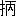

一
一席申し上げます、是は寛政十一年に、
深川元町猿子橋際で、巡礼が
仇を討ちましたお話で、年十八になります
繊弱い巡礼の娘が、立派な侍を
打留めまする。その助太刀は左官の
才取でございますが、年配のお方にお話の筋を承わりましたのを、そのまゝ綴りました
長物語でございます。元
榊原様の御家来に
水司又市と申す者がございまして、
越後高田のお国では
鬼組と申しまして、お役は下等でありますが
手者の多いお組でございます。この水司又市は十三歳の折両親に別れ、お
国詰になり、越後の高田で文武の道に心掛けまして、二十五の時江戸詰を仰付けられましたので、とんと江戸表の様子を心得ませんで、江戸珍らしいから諸方を見物致して居りましたが、ちょうど
紅葉時分で、
王子の
滝の
川へ
往って
瓢箪の酒を飲干して、紅葉を見に
行く者は、紅葉の枝へ瓢箪を附けて是を
担ぎ、
形は黒木綿の紋付に小倉の
襠高袴を
穿いて、
小長い大小に下駄穿きでがら／＼やって来まして、ちょうど
根津権現へ参詣して、
惣門内を抜けて参りましたが、只今でも全盛でございますが、昔から
彼の
廓は
度々潰れましては又
再願をして又立ったと申しますが、其の頃贅沢な
女郎がございまして、吉原の真似をして惣門内で
八文字で道中したなどと、天明の頃は
大分盛んだったと云うお話を聞きました。
彼方此方を見ながら水司又市がぶらり／＼と通掛りますると、茶屋から出ましたのは
娼妓でございましょう、
大島田はがったり横に曲りまして、露の垂れるような薄色の
笄の小長いのを
挿し、
鬢のほつれ毛が顔へ懸りまして、少し
微酔で
白粉気のある
処へぽッと桜色になりましたのは、
別して美しいものでございます。緋の
山繭の
胴抜の上に藤色の紋附の
裾模様の部屋
著、
紫繻子の
半襟を重ねまして、燃えるような
長襦袢を
現わに出して、若い
衆に手を引かれて向うへ
行きます姿を、又市は
一と目見ますと、二十五で血気でございますから、余念もなく
暫く見送って居りましたが、
又「どうも実に
嬋娟窈窕たる美人だな、どうも盛んなる所美人ありと云うが、実にないな、
彼のくらいな婦人は二人とは有るまい、どうもその
蹌けながら赤い顔をして
行く有様はどうも
耐らぬな、どうも実にはア美くしい」
と思って
佇んで居りますと、
後から
女郎屋の
若衆が、
若「えへ……」
又「
何だい
後からげら／＼笑って」
若「
如何様でございます、お
馴染もございましょうが、えへ……
外様からお尻の出ないようにお話を致しましょう、えへ……お馴染もございましょうがお手軽様に一晩お
浮れは如何で、へい／＼／＼」
又「何だい貴公は」
若「えへ……御冗談ばかり、遊女屋の
若者で、どうも誠にはやへい／＼」
又「遊女屋の若者、成程これは何だね大分左右に遊女屋が見えるが、全盛の所は承知して
居るが、貴公に聞けば分ろうが、今向うへ少し微酔で、顔へほつれ毛がかゝって、赤い顔をして男に手を引かれて行った美人があるが、
彼れは何かえ遊女かえ、
但しは堅気の娘のような者かえ」
若「へえ、只今へえ…御縁の深いことで、あれは手前方のお
職から二枚目をして居ります
小増と申します」
又「はア貴公の
楼名は何と云う」
若「へえ……楼名、えゝ
増田屋と申します」
又「成程根津で増田屋と申すは大分名高いと聞くが、左様かえ増田屋で今の婦人は」
若「小増と申します」
又「成程増田屋で
増を付けるのは榊原の家来で榊原を名乗るようなもので」
若「いえ左様な大した訳でもござりませんが」
又「国から出たてゞ何も知らぬが、何かえ
揚代金は
何のくらい致す、今の美人を一晩買う揚代は」
若「へい／＼大概五拾
疋でございますが、あのお
妓さんは只今売出しで、拾
匁で、お高いようでございますが、
彼のくらいな子供
衆は
沢山はございませんな、へい」
又「拾匁、随分値は高いが、拾匁出して彼のくらいな美人を寝かそうと起そうと自由にするのだから、実に金銀は大切な物だのう」
若「えへ、まず兎も角もお
上り遊ばしては如何」
又「だが
登りもしようが、婦人を
傍へ置いて
唯寝る訳にも
往かんが、何か
食物を取らんではならんが、酒と肴はどのくらいな値段であるか承わって置こう」
若「えへ……御存じ様でございましょう、おとぼけなすって、お小さい台は五拾疋でございます、大きい方は百疋で、中には六百文ぐらいのお
廉いのもございます」
又「ふう百疋、成程よい遊女を揚げれば
佳いのを取らなければならんのう、成程それでは酒は別だろうな」
若「へい召上りませんでも
先一本は付けます」
又「百疋で肴は何のくらいなのが付くな」
若「へ……おとぼけでは困りますな、大概遊女屋の台の物は
極って居りますが、小さい鯛が片へらなどで、
付合せの方が沢山でございます」
又「それは高いじゃアないか、越後の
今町では眼の下三尺ぐらいの鯛が六十八文で買える」
若「御冗談ばかり仰しゃいます」
又「厄介になろう」
若「有難う存じます、お
揚んなさるよ」
「あいー」
とん／＼／＼と二階へ
上ると
引付座敷へ通しましたが、又市は黒木綿の紋付に袴を穿いた
形で、
張肘をして坐って居ると、二階廻しが参りまして、
婆「おやお
出でなはい」
又「初めて、
手前水司又市と申す者、勝手を心得ぬから何分頼む」
婆「何でございますねお前さん、
瓢箪を紅葉の枝へ附けてお通んなはいましたねえ、滝の川へ
入っしゃったの、御様子の
好いことゝ云ってお噂をして居たのですよ」
又「左様か、お前は当家の家内かな」
婆「おや厭ですよ、私は二階を廻す者です」
又「なに二階を廻す、この二階を」
婆「あれさ力持じゃアございません、本当に小増さんをお
名指は
苛いじゃアございませんか」
又「何が苛い、買いたいと思ったから
登ったわ」
婆「本当に外で見染めて揚るのは一ばん縁が深いと申します、本当にお堅過ぎますよ、お袴をお取りなさいよ」
と云ううちに小増が出て参りまして、
引付も済んで台の物が
這入りますから、
一猪口遣って座敷も引け、床になりましたが、
素より田舎侍でありますから、小増は宵に顔を見せたばかりで振られました。
二
翌朝門切にならんうちにと支度を致しまして、
又「これ／＼婆ア／＼」
婆「厭だよ婆アなんてさ」
と云いながら屏風を開けて、
婆「お呼びなはいましたか」
又「いや
昨夜な
些とも小増は
来ぬて」
婆「誠にねどうも、
流行っ
妓ですから
生憎お馴染が落合ってさ、
斯う折の悪い時は仕様がないもので、立込んでね」
又「左様かね、
予て聞くが、初会は座敷切りと聞くが全く左様か」
婆「まアね
然う云った様なもので有りますから」
吉原の上等の娼妓ならお座敷切りという事も有りましたが、岡場所では左様なことは有りませんが、そこが国育ちで知りませんから、成程そうかと又四五日置いて来ましたが、また振られ、又二三日置いて来たが振って／＼振抜かれるが、
惚るというものは妙なもので、小増が煙草を一ぷく吸付けてお呑みなはいと云ったり、また帰りがけに
脊中をぽんと叩いて、
小増「誠に済まねえのだよ、今度
屹度来ておくんなはい」
と云われるのが嬉しく思いまして、しげ／＼通いましたが、又市も馬鹿でない男でございますから、
終には癇癪を
発して、
藤助という
若者を呼んで居ります。
婆「藤助どん行っておくれ、小増さんも時々顔でも見せて
遣れば
好いのに、
酷く厭がるから困るよ」
又「これ／＼袴を出せ」
婆「おや誠にどうもお
前はんにお気の毒でね」
又「婆ア
此処へ来い、どうも貴公の家は余りと云えば不実ではないか、一度も小増は快く
私が側に
居ったことはないぞ」
婆「
何時でも
然う云って
居るので、
生憎と
流行っ
妓だからね、お
前はん腹を立っては困りますよ、まことに間が悪いじゃアねえか、お前はんの来る時にゃアお客が落合ってさ、済まねえとお帰し申した
後でお噂して、一層気を揉んで
居りますのさ」
又「そんな事は
度々聞いたが、最早二度と再び来ないが、田舎者には
彼アいう
肌合な気象だから、肌は許さぬとかいう見識が有るから、お前が来ても
迚も
買通せぬから止せと親切に云ってくれても
宜さそうなものだ、つべこべ／＼馬鹿世辞を云って、此の
後二度来ぬから宜いか、其の方達は余程不実な者だね、どうも」
婆「不実と云ったって
私達のどうこうと云う訳には
往きませんからさ、まことに自由にならないので」
藤助「へい、あのお
妓さんは
流行妓でございますから、お金で身体を縛ってしまいますから」
又「小増の身体を
誰か鎖で縛ると申すか」
婆「あれさ、小増さんに
此方で三十両出そうと云うと、
彼方で五十両出そうと云って張合ってするのだから、まことに仕様がございませんよ、流行妓てえなア辛いものでそれだから
苦界と云うので、察して気を長くお出でなさいよ」
又「成程是まで度々参っても振られる故、屋敷へ帰っても同役の者が…それ見やれ、
迚も無駄じゃ、詰らぬから止せと云って大きに笑われ、迚も貴公などには買遂げられぬ駄目だと云われたが、金ずくで自由になる事なら誠に残念だから、幾ら
遣れば必らず
私に
靡くか」
婆「ねえ藤助どん、金ずくで自由になればと云うが……まアねえ
其処は義理ずくだからね、お金をまアねえ二拾両も遣って長襦袢でも買えと云えば、気の毒なと云って嬉しいと思って、又お
前はんに前より
情の増す事が有るかも知れませんよ」
又「婆アの云う事は
採りあげられんが、藤助
確と請合うか」
藤「それは義理人情で、
慥にそれは是非小増さんがねえ」
又「
然らば宜しい、今日は機嫌
好く帰って二十両持って来よう」
と笑って、其の日は屋敷へ帰ったが、勤番者で
他から金子を送る者もないから、大事の大小を
質入して二十五金を
拵らえ、正直に奉書の紙へ包み、長い水引をかけ、
折熨斗を附けて金二十両小増殿水司又市と書いて持って参りまして、
直に小増に
遣わし、これから
酒肴を取って機嫌好く飲んで居たが、その晩も又小増が来ないから
顔色を変えて
怒りました。
毎もの通り手を叩くこと
夥しいが、怖がって
誰も参りません。
婆「
一寸藤助どん往っておくれよ」
藤「困りますね」
婆「今日は
中根はんが来て居るので、いゝえさ、どうも中根はんと深くなって居て、中根はんが上役だから下役の足軽みたいな人の所へは行かないのだよ」
藤「困りますな、
怒るとあの太い腕で
撲れますが、今度は
取捕まると
何んな目に逢うか知れまいから驚きますねえ」
婆「私は怖いからお前一寸行ってお呉れよ」
藤「困りますね何うも……御免」
又「
此方へ這入れ」
藤「どうも誠に」
又「何も最早聴かんで宜しい、再度欺かれたぞ、小増が来られなければ来ぬで宜しい、
飲食は手前したのだから払うが、今晩の揚代金
殊に小増に遣わした二十金は只今持って来て返せ、不埓至極な奴、
斯様な席だから兎や角云わぬが、余りと申せば
怪しからん奴、金を持って来て返せ」
藤「何ともどうも
私共には」
又「いや
私どもと云っても手前何と云った…
弁まえぬか」
婆「一寸水司はん、生憎今日も
差合があって」
又「黙れ、婆アの云う事は
採上げんが、これ藤助、其の方は何と申した、二十両遣わせば小増は相違なく参りますと申したではないか、男が請合って、それを
反故にする奴があるか、男子たるべき者が」
藤「中々男子だって
然ういう訳には参りませんので、この廓では女の子に男が
遣われるので、
私どもの云う事は聴きませんからね、どうも」
又「これ」
藤「あいた、痛うございます、何をなさる」
又「これ
宜くも
己を欺いたな、
此奴め」
藤「あいた……いけません、遊女屋で
柔術の手を出してはいけません、
私どもの云う事を聴くのではございませんから」
と
詫びても聞き入れず、
若者の胸ぐらを取って
捻上げました。
三
大騒ぎになりますと、此の事を小増が聞き、生意気
盛の小増、止せば
宜いのに
胴抜の
形で
自惰落な姿をして、二十両の目録包を持って廊下をばた／＼
遣って来て、障子を開けて這入って来ました。又市は腹を立って居たが、顔を見ると人情で、間の悪い顔をしている。
小増「
一寸又市さん何をするの、藤助どんの胸倉をとってさ、此の人を締殺す気かえ、遊女屋の二階へ来て力ずくじゃア仕様がないじゃアないか、今聞けばお金を返せとお云いだね」
又「これさ返せという訳ではないが、お前が一度も来てくれんからの事さ、来てさえ呉れゝば宜しい、今まで
度々参っても、お前がついに一度も
私に口を利いたこともないから、私はどうも田舎侍で気に入らぬは知っているが、同役の者にも外聞であるから、せめて側に居て、快く話でもしてくれゝば
大きに宜しいが、大勢打寄って欺くから…
斯様なことを腹立紛れにしたのは私が悪かった」
小「悪かったじゃアないよ、
私はお
前はんのような人は嫌いなの、お前大層な事を云っているね、金ずくで自由になるような
私やア身体じゃアないよ、二十両ばかりの
端金を千両
金でも出したような顔をして、手を叩いたり何かしてさ、騒々しくって二階中寝られやアしないよ、お前はんに返すから持って帰んなまし、お前はんのような田舎侍は嫌いだよ」
と云いながら又市の膝へ投付けて、
小「いけ好かないよう、
腎助だよう」
と部屋着の
裾をぽんとあおって、廊下をばた／＼駈出して行った時は、又市は
後姿を見送って、
真青に
顔色を変えて、ぶる／＼
慄えて、うーんと藤助の腕を逆に
捻り上げました。
藤「あいた／＼／＼、あなた、あいた……そんな乱暴なことをしては困りますねえ、
私などの云う事を聞く
妓ではありませんから」
又「田舎侍は
厭だと云うは、
素より其の方達も心得
居ろうに」
藤「あいた……腕が折れます、
一寸おかやどん、小増さんを呼んで来てというに、あゝいた／＼／＼／＼」
大騒ぎになりましたが、丁度此の時遊びにまいって居たのが榊原藩の
重役中根善右衞門の
嫡子善之進と云う者でございますが、御留守居役
［＃「御留守居役」は底本では「御留守居後」］《おるすいやく》の御子息で、まだ二十四歳でございますから、隠れ忍んで来るが、
取巻は大勢居まして、
取巻「もし困るではございませんか、遊女屋の二階で
柔術の手を出して、
若者に
拳骨をきめるという変り物でございますが、
大夫が是にいらっしゃるのを知らないからの事さ、大夫のお馴染を知らないで通うぐらいの馬鹿さ加減はありません、あなた
一寸お顔を見せると驚きますよ、ちょいと鶴の一と声で向うで驚きますよ、ね小増さん」
小増「
左様さ、
一寸顔を見せてお
遣りなさいよう」
と大勢に云われますと、そこが年の
往かんから
直ぐに立上りましたが、
黒出の黄八丈の小袖にお
納戸献上の帯の解け掛りましたのを前へ
挟みながら、十三間
平骨の扇を持って善之進は水司のいる部屋へ通ります。又市は顔を
一寸見ると重役の中根でございますから、其の頃は下役の者は、重役に対しては
一言半句も答えのならぬ見識だから驚きました。
後へ
下って、
又「是は
怪しからん所で御面会、
斯る場所にて
何とも面目次第もござらん」
善「これこれ水司、
何うしたものじゃ、遊女屋の二階でそんな事をしてはいかん、
此処は色里であるよ、
左様じゃアないか、
猛き心を
和ぐる廓へ来て、取るに足らん遊女屋の若い者を貴公が相手にして何うする積りじゃ、馬鹿な事じゃアないか、
殊に新役では有るし、度々屋敷を明けては宜しくあるまい、
私などは役柄で余儀なく招かれたり、
或は
見聞かた／″＼毎度足を運ぶことも有るが、貴公などは今の身の上で
彼様な席へ来て遊女狂いをする事が武田へでも知れると
直にしくじる、内聞に致すから帰らっしゃい」
又「まことに面目次第もございません、つい
一夜参りましたが、とんと
不待遇でござって、残念に心得、朋友にも
迚も田舎侍が参っても歯は立たぬなどと云われますから、残念に心得再度参りました処が、
如何に勝手を心得ません拙者でも、余りと云えば二階中の者が拙者を欺きまして、あまり心外に心得まして……それ
其処に立って居ります、
貴方のお側に立って
居るその小増と申す婦人に迷いまして、金を持って来れば必らず
靡くと申しますから、昨夜二十金才覚致して持って参りますと、それを
不礼にも遊女の身として拙者へ対して
悪口を申すのみか、金を膝の上へ叩付けましたから残念に心得、
彼様な事に相成りまして、誠に何うもお目に
留り恐れ入りますが、どうか御尊父様へも武田様にも
内々に願います」
四
善「左様か、この小増は
私が久しい馴染で、
斯ういう
廓には
意気地と云って、一つ屋敷の者で私に出ている者が、下役の貴公には出ないものじゃ、そこが意気地で、少しは
傾城にも義理人情があるから、私が買って居る馴染の遊女だから貴様に出ないのだから、小増の事は諦めてくれ、是は私が馴染の婦人だから」
又「へえー左様で、貴方のお馴染で、ふうー」
小「
一寸水司はん、
私の大事のね、深い中になって居るお客というのは此の中根はんで、中根はんに出ている私がお
前はんの様な下役に出られますかねえ、
宜く考えて御覧なはいよ、出たくも出られませんからさ、又お
前はんの様な人に誰が好いて出るものかねえ、お前顔を宜く御覧、あの
己惚鏡で顔をお見よ、お前鏡を見た事がないのかえ、
火吹達磨みたいな顔をしてさア、お
前はんの顔を見ると馬鹿／＼しくなるのだよう」
と云われるから胸に込上げて、又市
逆せ
上って、
此度は
猶強く藤助の胸ぐらを取ってうーんと締上げる。
藤「あなたいたい……
私を、どう…」
又「黙れ、今中根様の仰せらるゝ事を手前存じて
居るか、一つ屋敷の者には出ない、上役がお愛しなさる遊女をなぜ己に出した」
藤「あいた……これはあなた気が遠くなります、お助け下さい、死にます」
善「これ／＼水司、あれほど云うに分らぬか、若い者を
打擲して殺す気か、
痴けた奴だ、左様なる事をすると武田へ云ってしくじらせるが
何うか、これ此の手を放さぬか／＼」
と云いながら十三間の平骨の扇で続け
打にしても又市は手を放しませんから、
月代際の所を扇の
要の
毀れる程強く突くと、額は破れて流れる血潮。又市は夢中で居ましたが、額からぽたり／＼血が流れるを見て、
又「はアお打擲に
遇いまして、手前面部へ
疵が出来ました」
善「左様なまねをするから打擲したが
如何致した、汝はな此の
後斯様な所へ立廻ると許さぬから左様心得ろ、
痴呆め、早く帰れ／＼」
又「何も心得ません処の田舎侍でござって、一つ屋敷の侍が斯様なる所へ来て恥辱を受けますれば、その恥辱を上役のお方が
雪いで下さることと心得ましたを、
却って御打擲に遇いまして残念でござりまする、只今帰るでござる、これ女ども袴と腰の物を是へ持て」
と急に支度をしてどん／＼／＼／＼と毀れるばかりに
階子を
駈下りると、止せば
宜いに小増を始め芸者や太鼓持まで又市の跡を付けて来まして、
小「あれさ、お上役に逢っては一言もないからさ
泣面してさ、泣面は見よい物じゃアないねえ、あの火吹達磨や、泣達磨や、へご助や」
とわい／＼言われるから猶更
逆上せて
履物も眼に
入らず、
紺足袋のまゝ外へ出ましたが、丁度霜月三日の最早
明近くなりましたが、霜が降りました故か
靄深く立ちまして、一尺先も
見分りませんが、又市は顔に流るゝ血を撫でると、手のひらへ
真赤に付きましたから、
又「残念な、武士の面部へ疵を付けられ、此の
儘には帰られん、たとえ上役にもせよ憎い奴は中根善之進、もう毒喰わば皿まで、
彼奴帰れば武田に告げ、
私をしくじらせるに違いない、
殊には衆人満座の中にて」
と恋の遺恨と面部の疵、捨置きがたいは中根めと、
七軒町の
大正寺という
法華寺の
向う、
石置場のある其の石の
蔭に忍んで待っていることは知りません、中根は早帰りで、
銀助という家来に
手丸の
提灯を提げさして、黄八丈の着物に黒羽二重の羽織、黒縮緬の
宗十郎頭巾を
冠って、
要の抜けた扇を顔へ当てゝ、小声で
謡を唄って帰ります所へ、物をも言わず
突然に、水司又市一刀を抜いて、下男の持っている提灯を切落すと、腕が
冴えて居りますから下男は向うの
溝へ切倒され、善之進は驚き
後へ
下って、細身の一刀を引抜いて、
善「なゝ何者」
と振り
冠る。
又「おゝ最前の遺恨思い知ったか」
と云う若気の至り、色に迷いまして身を果すと云う。これが
発端でございます。
五
水司又市が悪念の発しまする是れが始めでございます。若い
中は色気から兎角了簡の狂いますもので、血気
未だ定まらず、これを
戒むる色に
在りと申しますが、
頗る
別嬪が膝に
凭れて
「一杯お
飲んなさいよ」
なぞと云われると、下戸でも茶碗でぐうと我慢して飲みまして
煩うようなことが有りますが、
惚抜いている者には振られ、
殊に面部を打破られ、其の頃武家が
頭に疵が出来ると、屋敷の門を
跨いでは帰られないものでございました。又市は無分別にも中根善之進を一刀両断に切って捨て、毒食わば皿まで
舐れと懐中物をも盗み取り、小増に
遣りました処の二十両の金は有るし、これを持って又市は
越中国へ逐電いたしました。
此方は
翌朝になりましてもお帰りがないと云うので、下男が迎いに参りますと、七軒町で
斯様／＼と云う始末、まず死骸を引取り検視沙汰、殊に上役の事でございますから内聞の
計いにしても、重役の耳へ此の事が聞え、部屋
住の身の上でも、中根善之進何者とも知れず
殺害され、
不束の
至と云うので、父善右衞門は百日の間
蟄居致して
罷り
在れという御沙汰でございますから、翌年に相成り
漸く蟄居が
免りましたなれども、
最う五十の坂を越して居ります善右衞門、大きに気力も衰え、娘お
照と云うがございまして年十九に成りますから、これに養子を致さんではならんと心配致して居りましたが、丁度三月末の事、善右衞門が遅く帰りまして、
善右衞門「
一寸お前」
妻「お帰り遊ばせ」
善「いや帰りにね武田へ寄って来た」
妻「おや、
大分お帰りがお遅うございますから、
何処かへお立寄と存じまして」
善「少し悦ばしい話があるが」
妻「はい」
善「
斯う云う訳だが、
予てお前も知っての通り、昨年悴が
彼アいう訳になって
私も
最う
勤は辛いし、大きに気力も衰えたから、照に
何な者でも養子をして、隠居して楽がしたい訳でもないが、養子を致さんではと思って居た処が、幸いと武田の次男
重二郎が養子になるように相談が
極ったよ」
妻「おやまアそれは
何うも此の上もない事でございます、お屋敷
中でも親孝行で、武芸と云い学問と云い、あんな方はございません、評判の
宜い方でござりますねえ」
善「それに
彼は武田流の軍学を
能くし、剣術は真影流の名人、文学も出来、役に立ちますが、継母に育てられ気が
練れて居て、
如何にも武芸と云い学問と云い老年の者も及ばぬ、実に
彼のくらいの養子は
沢山あるまい、此の上もない有難い事でのう、早く照をお呼びなさい」
妻「はい、お照や一寸
此処へお
出で、お
父様がお帰りになったよ、さア此処へお出で」
御重役でも榊原様では
平生は余り
好い
形はしない御家風で、下役の者は内職ばかりして居るが、なれども
銘仙の
粗い縞の小袖に
華美やかな帯を
〆めまして、文金の
高髷で、お
白粉は屋敷だから常は薄うございますが、
十九や
二十は色盛り、器量
好の娘お照、親の前へ両手を突いて、
照「お帰り遊ばせ」
善「はい……此処へお出で、今お
母様にお話をしたが、お
兄様は去年あの始末、お前にも早く養子をしたいと思ったが、親の慾目で、何うかまア心掛のよい
聟をと心得て居ったが、武田の重二郎が当家へ養子に来てくれる様に
疾うから話はして置いたが、
漸く今日話が
調ったからお母様と相談して、善は急げで結納の
取交せをしたいが、
媒妁人は高橋を
以てする積りで、
嫁入の衣裳や何かお前の好みもあろう、
斯ういう物が欲しい、
櫛簪は斯う云うのとか、立派なことは入らぬが、
宜くお母様と相談して、其の上で先方へも申込むから宜いかえ」
照「はいお父様
私に養子を遊ばす事はもう少しお見合せなすって」
善「見合せる、
其様な事はありません、
何で見合せるのだえ」
照「はい
私はまだあなた養子は早うございます、それに他人が這入りますと、お父様お母様に孝行も出来ません様になりますから、私も心配でございますから、
何卒もう四五年お待ち遊ばして」
善「そんな分らぬ事を云ってはいけません、早く養子をして
初孫の顔を見せなければ成りません」
妻「ほんとうに養子をしてお前の身が定まれば、お父様も私も安心する、双方に安心させるのが孝行だよ……まことにあなた
何時までも子供のようでございます……あんな
好い養子はございませんよ、
家へいらっしゃってもあの
凛々しいお方で、本当に此の上もないお前仕合せな事だよ」
善「さア、はいと返辞をすれば
直に結納を取交せるから」
照「はい、
私はあの
池の
端の弁天様へ、養子を致す事を三年の間
願掛けをして
禁ちました」
善「そんな分らぬ事を言っては困りますよ、弁天へ行って
然う云って来い、願掛けは致したが、親の勧めだからお
願を破ると云って来い、それで
罰を当てれば至極分らぬ弁天と申すものだ、そんな分らぬ弁天なら罰の当てようも知るまいから心配はありませんよ、これ何時まで子供の様な事を云って何うなります、私が約束して今更
変替は出来ません、
直様返事をおしなさい、これ照、困りますなア」
六
妻「貴方、そう御立腹で仰しゃってもいけません……何時までもお前子供の様で、養子をすると云うものは怖いように思うものだけれど、私も当家へ縁付いた時は、こんな不器量な顔で恥かしい事だと
否々ながら来ましたが、また亭主となれば夫婦の愛情は別で、お父様お母様にも云われない事も相談が出来て、結句頼もしいものだよ、あいとお云いよ／＼、泣くのかえ」
善「なに泣くとは何事、泣くという事はありません、何だ」
妻「まア
其様にお
怒り遊ばすな」
と無理に手を取って娘の居間へ連れて
行き、
種々言含めたが
唯泣いて
計り居て返答を致しませんのは、屋敷
内の下役に
白島山平という二十六歳になります美男と
疾うから夫婦約束をして居りました。遠くして近きは恋の道でございます。逢引する処が別にございませんから、旧来
家に奉公を致して居りましたおきんと云う女中が、
上野町に団子屋をして居るので、此の
家の二階で山平と出会いますので、是が心配でございますから、おきんの所へ手紙を出しますと、
此方はおきんが山平を呼出しまして、二階で
三鉄輪で話をして居ります。
きん「どうも
先達は有難うございます、貴方、あんな心配をなすっては困りますよ、お忙がしい処をお呼立て申しましたのは困った事が出来ましてね」
山「毎度厄介になりまして気の毒でのう、今日は急に人だから何事かと思って来たのだが、どう云うわけだえ」
きん「どう云うたって実に困りますよ、何うしたら
宜かろうと存じまして、お照さまに御両親様から急に御養子を遊ばせと仰しゃるので、嬢様は
否だと云って弁天様へ
禁ったと仰しゃったそうでござりますが、お父様が聴かぬので、一旦約束したから
変替は出来ぬと云うので、仕方がないから
私は養子をする気はない、どんな事が有っても自分が約束したからは
何処迄も強情を張る積りだが、お父様が腹を切るの
何のと云うから、
寧そ身を投げて死んでしまおうと、小さいお子様の様な事を仰しゃるので困りますよ、何か云えば
直に自害をするのなどと詰らん事を云うので困ります、
私は思案に余りますから貴方をお呼び申したので」
山「ふう成程、そうして
何方から御養子を」
きん「お嬢様の仰しゃるには、白島様には云わぬ方が
宜いと仰しゃいますが、あの武田重二郎様ね、それあの
厭な気の詰るお方で、私も御奉公して居るうち見ましたが、偏屈な
嫌に
堅苦しいね嫌な人で、実に困った訳でございますけれども、
否と言切る訳にも
往きませんから誠に心配していらっしゃいます」
山「お照さん……この山平は江戸詰に成りまして間がない事で、これまでお
引立を
蒙りましたは、実は武田の
重左衞門様の御恩でござります、そのお家の御二男様が御養子の約束になって居るものを、貴方が
否と仰しゃれば
何故に
背くと、
夫れより事が
顕われますれば、拙者は屋敷を
逐出される事になります、
私の身は仕方がない事でございますが、あなた様の御尊父にも済まぬ事で、
何卒是れまでお約束は致しましたが、何卒親御の意を背くは不孝なり、あなたも世間へ済まぬことになりますから、只今までの事は水にあそばして、何うかあなた武田から御養子をなすってください、実は只今まで私はお隠し申したが、国表を
立出でます時男子出産して今年二歳になります、国には妻子がございますので」
照「えゝ」
と娘は驚きまして、じッと白島山平の顔を見て居りましたが、胸に迫ってわっとばかりに泣倒れました。
きん「あなた奥様があるの、おやお子さん方がお二人、まだ若いのに、おや
然うでございますかねえ…お嬢さん白島様が御迷惑になりますから、お厭でもございましょうけれども、思い切って貴方、お厭でも御養子を遊ばせな、此の事が知れると物堅い旦那様だからきんもきんだ、長らく勤めて居ながら娘を二階で逢引をさせるとは
不埓な女だと仰しゃって
私が斬られるかも知れませんよ、ねえ
彼ア云う御気象ですから、ねえ御養子をして置いて時々お逢い遊ばせよう、然うすりゃア知れやアしませんよ、あの
釜浦様の
御新造様みたいな、彼アいう事もありますから、
宜いじゃアありませんか、然う遊ばせよ」
山「誠に手前も夢の昔と諦めますから、申しお嬢様
嘸不実な者と
思召すでござりましょうが、この白島山平を
可愛相と思召すなら、あなた親御様の仰しゃる通り武田から御養子をなすって下さい、只今も金の申す通り、お
聴済みがなければ止むを得ず、手前どうも切腹でもしなければならん訳で」
きん「貴方ア切腹なさると仰しゃるし、お嬢様は自害などと困りますねえ……お嬢様何う遊ばしますよ」
照「はい、それ程白島様が御心配遊ばす事なれば
致方がありませんから、それにお国に奥様もお子様もある事は
私は少しも知りません、
最う身を切られるより辛うございますけれども、あなたのお言葉でございますから、
背かず武田から養子致します」
と云いながら、わっと泣き倒れました。
七
おきんも山平も安心して、
きん「宜く仰しゃいました、それで何うでも成ります、またねえ時々お逢い遊ばす工夫もつきますから」
と
漸く
身上の相談をして、お照は宅へ帰って、得心の上武田重二郎を養子にした処が、お照は振って／＼振りぬいて
同衾をしません。家付の我儘娘、重二郎は学問に
凝って居りますから、
襖を隔てゝ
更るまで書見をいたします。お照は
夜着を
冠って向うを向いて寝てしまいます。なれども武田重二郎は
智慧者でございますから、
私を嫌うなと思いながらも
舅姑の前があるから、照や／＼と誠に夫婦中の宜い様にして見せますから、両親は安心致して居ります
中、段々月日が立ちますと、お照は重二郎の養子に来る前に最う
身重になって居りますから、九月の月へ入って
五月目で、お
腹が大きく成ります。若い
中は有りがちでございますから、まア／＼
淫奔は出来ませんものでございます。お照は懐妊と気が付きましたから何うしたら
宜かろう、何うかお目にかゝり相談を
為たいと、山平へ
細々と手紙を
認め、今日あたりきんが来たらきんに持たせてやろうと帯の間へ
挿んで居りましたが、
何処へ振落しましたか見えませんから、又細々と
文を認めおきんに渡し、それから
直におきんより山平へ届けましたので、九月二十日に団子茶屋へ打寄ったが、此の時は山平は
真青になりました。
きん「もし白島様実に驚きましたよ、お嬢
様は
同衾を遊ばさないので、それだからいけやアしません、同衾をなされば少し位月が間違って居ても
瞞かしますよ、何うしたって指の先ぐらいは似て居りますから、何うでも出来ますのを、振って／＼振抜いて、同衾をしないので隠し様がありませんからさ、押して云えば仕方がないから、私は自害して死ぬばかり、私は二度と夫は持たない、親が悪い、無理に持たせたから
当然と仰しゃるだけで仕方がありませんよ」
山「露顕しては止むを得ない、何うしても割腹致すまでの事で」
きん「貴方は又そんな事を云って、仕様がございません、それじゃア相談の
纏まり様がございません」
と
彼れの是れのと云って居りますと、折悪しく其の晩養子武田重二郎は
傳助と云う下男を連れて、
小津軽の屋敷へ行って、両国を渡って帰り、
御徒町へ掛ると、
重「
大分傳助道が
濘るのう」
傳「先程降りましたが
宜い
塩梅に帰りがけに止みました」
重「長い間
待遠で有ったろう」
傳「いえもう貴方お疲れでございましょう、
御番退から御用
多でいらしって、
彼方此方とお歩きになって、お帰り遊ばしても
直に
御寝なられますと宜しいが、矢張お帰りがあると、
御新造様と同じ様に御両親が話をしろなどと仰しゃると、お枕元で何か世間話を遊ばして御機嫌を取って、お帰り遊ばしても一口召上って、ゆる／＼お気晴しは出来ませんで、誠に恐入りましたな」
重「何も恐入ることはない、
私は仕合せだのう、幼年の時継母に育てられても継母が
邪慳にもしないが、気詰りであったけれど、当家へ養子に来てからは
舅御が
彼の通り
好い方で、此の上もない仕合せで」
傳「へえ
私は旧来奉公致しますが、旦那様も御新造様もいかつい事を云わないお方で、誠に
私も仕合せで、実に
彼アいう方でございますから、
斯様なことを申しては恐入りますが、若御新造様はすこしも御奉公遊ばさない、世間を御存じがない方でございますからな、あなたがお疲れの処へ、御両親様の御機嫌を取ってお長くいらっしゃる時には、御新造様が
最うお疲れだからと
宜い様に云ってお居間に連れ申して、おすきな物で一杯上げる様にお気が付くと
宜しいが、余り遅くお帰りになるのが御意に入らぬのか知れませんが、つーと腹を立ったように、お帰りがあっても
碌にお言葉もかけない事がありますからな」
重「いゝや
然うでない、御新造は奉公せぬに似合わぬ中々
能く心付くよ」
傳「へえ……何うも
私も旧来奉公致しますが、あなた様には誠に
何うも
何とも済まぬことで、実に恐入ったことで、私は心配致しますが、だからと申して黙っていても何うせ知れますからな」
重「何を」
傳「へえー、誠に何うも恐入って申上げられませんが、実は貴方様に対して御新造様がな、何うも何う云うものか、誠に恐入りますな」
重「大分恐入るが、
何だい」
傳「へえ……申し上げませんければ
他から知れますからな、
却って御家名を
汚すようになりますから、御両親様も……また貴方の名義を汚す一大事な事でございますから、
外のお方様なら申上げませんが、あなた様でございますから何うか内聞に願い、そこの処は世間に知れぬうち御工夫が付きますように参りましょうかと存じますが、何うか御内聞に、何うも何とも恐れ入りまして」
重「恐れ入ってばかりではとんと何だか分らんが、他の事と違って家名に
障ると、
私が身は何うでもよろしいが、中根の苗字に障っては済まぬが、
何じゃか言ってくれよ、よ、傳助」
八
傳「実は申上げようはございませんが、もう往来も途切れたから申上げますが、御新造様は誠に
怪しからん、
密夫を
拵え遊ばして逢引を致しますので」
重「ふう嘘を云え、左様な嘘をつくな決して左様な事は有りません、世間の
悪口だろうから取上げるなよ、
私が来ましてから御新造は
些とも
他へ出た事はないぞ、弁天へ参詣に
行くにも小女が附き、決して
何処へも行った事はない」
傳「それが有るのでへえ……実に恐入りますがな、不埓至極なのはお金と申す旧来勤めて居りました団子茶屋おきん、へい
彼奴が悪いので、へい、奉公して一つ鍋の飯を喰いました女でございますから
宜く
私は存じて居りますが、口はべら／＼喋るが、彼奴が不人情で
怪しからん奴で、お嬢様を自分の
家の二階で男と密会をさせて、幾らか
しきを取る、
何如にも心得違いの奴で」
重「そりゃア
誰がよ、誰が左様なる事を云う、相手は何者か」
傳「相手はそれは
何うも、白島山平と云う
彼の下役の山平で、
私も
外の方なら云いませんが貴方様だから、お
舅御様のお耳にはいらぬ様にお計らいが附こうと思って申しますが、何うも恐入ります」
重「嘘を云え、白島山平は義気正しい男で、役は下だが重役に
優る立派な男じゃ、他人の女房と不義致すような左様な不埓者でない」
傳「それが誠に有るので、実は昨日な証拠を拾って持って居りますが、開封致しては相済みませんが、
捨置かれませんから心配して開封いたしましたが、山平へ送る艶書を拾いました」
重「どう見せろ」
傳「何うか御立腹でございましょうが内聞のお計らいを」
重「見せろ、どれもっと提灯を上げろ」
と重二郎艶書を
開いて繰返し二度
許り読みまして、
重「傳助」
傳「へえー」
重「少しも存ぜぬで知らぬ事であったがよく知らしてくれた」
傳「何うも恐入ります、それだから貴方様がお帰りになっても、御新造様が快よく御酒の一と口も上げませんので、何うも驚きますな」
重「この文の様子では懐妊致して
居るな」
傳「へえー何うも
怪しからん事でげすな」
重「団子屋のきんの宅に今晩逢引を致して居るな」
傳「へえ丁度今晩逢引致して居ります」
重「きんの宅を存じて居るなれば案内しろ」
傳「いらっしゃいますか」
重「
己が
行こう」
傳「貴方いらっしゃッても内聞のお計らいを」
重「
痴けた事を云うな、武士たる者が女房を
他人に取られて刀の手前此の
儘では済まされぬから、両人の
居処へ踏込み一刀に切って捨て、生首を
引提げて御両親様へ家事不取締の申訳をいたすから案内致せ」
傳「是は何うも飛んだ事を云いました、是は何うも恐入りましたな、
外様なれば云いませんが、貴方様でございますから内聞に出来る事と心得て飛んだ事を申しました」
重「飛んだ事と申して捨置かれるものか、
行け／＼」
と云われ
真青になってぶる／＼
顫えて傳助地びたへ
踵が着きませんで、ひょこ／＼歩きながら案内をするうちに、団子屋のきんの宅の路地まで参りました。
重「これ／＼
其処に待って居れ、
町家を騒がしては済まぬから」
傳「何うかお手打ちは御勘弁なすって」
重「黙れ、提灯を消してそれに控え居れ」
傳「へえー」
重二郎は傳助を路地の表に待たして、自分一人で裏口の腰障子へぼんやり
灯がさすから小声で、
重「おきんさんの宅は
此方かえ」
と云うと二階に三人で相談をして居りましたが、
きん「はい
魚政かえ…いゝえ此の頃出来た魚屋でございますから、
器物が
少ないのでお刺身を持って来ると、
直に
後で
甘
を入れるからお皿を返して呉れろと申して取りに来ますので」
きんは魚屋と間違えて、
きん「少し待ってお
出でよ」
と
階子段を下りて、
きん「魚政かえ、今お待ちよ」
と障子を開けて見ると、魚屋とは思いの
外重二郎が刀を
引提げてずうと入り、
重「これ照が二階に参って
居るなら
一寸逢わして呉れよ」
きん「いゝえ御新造様は
此方へは
入っしゃいません」
重「入っしゃいませんたって参って居るに相違ない、是に駒下駄があるではないか」
きん「あのそれは
先刻あの
入っしゃいまして、それはあの、雨が降って駒下駄では
往けないから
草履を貸してと仰しゃいまして」
重「馬鹿な、
痴けた事を云うな、逢わせんと云えば
直に二階へ通るぞ」
きん「はーい
何卒真平御免遊ばして、何うぞ御勘弁遊ばして、御新造様がお悪いのではございません、皆きんが悪いのでございますから何うぞ」
重「何だ袖へ
縋って何う致す、放さんか、えい」
と袖を払って長い刀を
引提げて二階へどん／＼／＼／＼と重二郎駈上ります。これから何う相成りますか一寸
一と
息致して。
九
引続ましてお
聴に入れますが、世の中に腹を立ちます程誠に人の身の害になりますものはございません。
殊に此の
赫ッと
怒りますと、
毛孔が開いて風をひくとお医者が申しますが、
何う云う訳か又
極く笑うのも毒だと申します。また
泣入って倒れてしまう様に
愁傷致すのも養生に害があると申しますが、
入湯致しましても
鳩尾まで這入って肩は
濡してならぬ、物を喰ってから入湯してはならぬ、年中水を浴びて居るが
宜いと申しますが、嫌な事を忍ぶのも、馴れるとさのみ辛いものではござりませぬ。何事も堪忍致すのは極く身の
養生、なれども堪忍の致しがたい事は女房が
密夫を
拵えまして、亭主を
欺し
遂せて、
他で逢引する事が知れた時は、腹を立たぬ者は千人に一人もございません。武田重二郎は中根の家へ養子に来てからお照が
同衾を
為ないのは、何か訳があろうと考えを起して居ります処へ、家来傳助がこれ／＼と証拠の文を見せたから、常と違って不埓至極な奴、さア案内しろと云う。傳助も飛んだ事を云ったと思っても今更仕方がありません。重二郎は団子屋のお金の家へ裏口から這入った時はおきんは驚きまして、
きん「何うか
私が悪いからお嬢様をお助けなすって下さい」
と袖に
縋るを振切って、どん／＼と
引提げ刀で二階へ
上りました時に、白島山平もお照も
唯だ
恟り致して、よもや重二郎が来ようとは思わぬから、膝に
凭れ掛って心配して、何う致そう、
寧その事二人共に死んで仕舞おうかと云って居る処へ、夫が来たので左右へ離れて、ぴったり畳へ
頭を
摺付けて山平お照も顔を
挙げ得ません。おきんは是れは
最う
屹度斬ると思い、
怖々ながら
上って来て、
きん「
何卒御勘弁なすって下さい、お願いでございます」
重「まア／＼静かに致せ、そう騒いではいかん、世間で何事かと思われる、えゝ何も騒ぐ事はない……これさお照お前
何故そんなに驚きなさる、
私が来たので畳へ
頭を摺付け、頭を挙げ得ぬが、
何と心得て左様に恐れて
居るのか、何うも何ともとんと私には分りません……山平殿それでは誠に御挨拶も出来ぬから頭を挙げて下さい…きん、静かに致して下の締りを
宜くして置くが宜いぞ、よう、賊でも這入るといかぬ」
きん「はい誠に何うも何ともお
詫の
致方もございません、お嬢様が何も
私が旧来奉公を致し、他に
行く処もないからきんや
家を貸せと仰しゃった訳でもございません、世間見ずで
入っしゃいますから人の
目褄に掛ってはなりませんと私がお
招び申したのが初めで、
何卒／＼御勘弁なすって」
重「これさ静かにしろよう、何だか分りませんが、それじゃア何か
差向で
居る処へ
私が上って来たから、山平殿と不義
濫行でもして居ると心得て、私が立腹して
此れへ上って来た故、差向で居た上からは
申訳は
迚も立たぬ、さア済まぬ事をしたと云うので左様に驚きましたか、左様か、
然うだろう、然うでなければ然う驚く訳はない、誠にきん貴様は迷惑だ…のう山平殿、役こそ
卑いが威儀正しき其の
許が、中々常の心掛けと申し、品行も宜しく、柔和温順な人で、
他人の女房と不義などをうん…なア…
為る様な非義非道の事を致す人でないなア……が差向で
居ったが
過りであった、
男女七歳にして席を同じゅうせずで、申訳が立たぬと心得て、山平殿も恐れ入って
居らるゝ様子、照も亦済まぬ、何う言訳しても身のあかりは立つまい、不義と云われても仕方がない、身に覚えはないけれども是れに二人で居たのが過り、残念な事と心得て其の様に泣入って
居ることか、何とも誠に気の毒な、飛んだ処へ私が上って来たのう、そう云う訳は決してないのう、きん」
きん「はい／＼決して
夫れはそう云う、あの、
其様などうも訳ではございませんから」
十
重「だからノウ、
私が養子に来ぬ前から照の心掛は実に感心、云わず語らず自然と知れますな、と申すは昨年霜月三日にお
兄様は何者とも知れず
殺害され、
如何にも残念と心得、御両親は老体なり、武士の家に生れ、女ながらも
仇を討たぬと云う事はないと心掛けても、
何うも相手は立派な
士であり、女の細腕では討つ事ならず、
誰を助太刀に頼もう、親切な人はないかと思う処へ、
親しく
出入を致す山平殿、
殊に心底も正しく信実な人と見込んだから、兄の
仇討に出立したいと助太刀を頼んだので有ろうが、山平殿は私には
然うはいかん、御養子前の大切の娘御を私が若い身そらで女を連れて
行く訳には
往かん、両親の頼みがなければいかんなどと申されて、
迚もお用いがないのを、止むを得ず助太刀をして下さいと照が再度貴公に頼んだは実に
奇特な事で、頼まれてもまさか女を連れて
行く訳にもいかず、
此方は
只管頼むと云う、是は何うも山平殿も実に困った訳だが、私が改めてお頼み申す訳ではないが、山平殿、中根善之進殿を討ったは水司又市と私は考える、
彼の日逐電して行方知れず、
落書だらけの
扇子が善之進殿の死骸の側に落ちて有ったが、その扇子は部屋で又市が持っていた事を私は承知して
居るから、
敵は私の考えでは又市に相違なし、お国表へ立廻る
彼アいう悪い心な奴、殊に腕前が宜しいから
何んな事を
仕出かすかも知れん、故に私が改めて貴公に頼むは、何うか
隠密になってお国表へ参って、貴公が何うか又市を取押えて呉れんか……照お前は
何処迄も又市を
探ねて討たんければならぬが、私から山平殿に一緒に行って下さいとは、何うも養子に来て間もなし、頼む訳には
表向いかんから、お前はお
父様やお
母様への申訳に、
私も武士の家へ生れ女ながらも敵討を致したい故、池の端の弁天様へ、兄の
仇を討たぬ
中は決して
良人を持ちませんと命に懸けての心願である処へ、
強って養子をしろと仰しゃるから養子をしたが、重二郎とは
未だ
同衾を致しませんのは、是まで私が思い立った事を
果さずば、何うも私が心に済みません、神に誓った事もあり、
仇討に出立致す不孝の段はどの様にもお詫致す、無沙汰で家出致す重々不埓はお
宥し下さいと、文面は
私が教えるから私の云う通りに書きなさい、また山平殿は……貴公に
倶に行って下さいとは云われないが、山平殿は国表へ参って
彼を取調べ、助太刀をしてお照が仇討をして帰る時、貴公も共に其の所へ
行合わし、幸い助太刀をして本意を遂げさせしと云ってお帰りになれば、貴公の家は何うか
潰さぬ様に致そう、重二郎刀に掛けても致すから、二人へ改めて頼む訳にはいかんが、然うして
仇を討たせて
望を
叶えてやって下さい…お前は奉公した事がないからお父様お母様に我儘を云うが、山平殿は親切なれども長旅の事、我儘な事を云って山平殿に見捨てられぬ様に
中好う、なにさ
若し捨てられては仇は討てず、亦これから先は長い旅、水も
異り気候も違うから、詰らん物を食して腹を
傷めぬ様にしなさい、
左様じゃアないか、何でも身を大切にして帰って来てくれんければ困りますぞ、
縦えあゝは仰しゃるが、二人で居たから密通と
思召すに違いない、密通もせぬに然う思われては残念と刃物三昧でもすると、お父様お母様に
猶更済みませんぞよ、必ずとも道中にて悪い物を食して、腹に
中らぬ様にしなさるが
宜いのう、お照」
と
五月になるお照の身重の腹を、重二郎に持って居ります扇でそっと突かれた時は、はッとお照は
有難涙に思わず声が出て泣伏しました。
十一
山平も面目なく、
山「
何共申訳はござらぬ、重々不埓至極な事拙者…」
重「いゝや少しも不埓な事はござらん、国表に
於て又市が
何んな事を
為るか知れん、万一重役を
欺き、大事は小事より起る
譬喩の通りで捨置かれん……お父様お母様へも書置を
認めるが
宜い……
硯箱を持って来な」
きん「はい」
重「硯箱を早く」
きん「はい」
重「
何んだ是は、
松魚節箱だわ」
きん「はい」
と
漸く硯箱を取寄せて、
紙筆を
把らせましても、お照は紙の上に涙をぽろ／＼こぼしますから、墨がにじみ幾度も
書損ない、よう／＼重二郎の云う儘に書終り、封を固く致しました。
重「これは私がお母様の
何時も大切に遊ばす
彼の手箱の中へ入れて置く……きん、
何うも長い間
度々照が来てお前の
家でも迷惑だろう、主人の娘が貸してくれと云うものを出来ぬとは義理ずくで
往かんし、親切に世話をしてくれ
忝ない、多分に礼をしたいが、帰り
掛であるからのう、是は誠に心ばかりだが世話になった恩を謝するから」
きん「何う致しまして
私がそれを戴いては済みません、何うかそれだけは」
重「いゝや、其の替り頼みがあるが、今日
私が来て照と山平殿に頼んで旅立をさせた事は、是程も口外して呉れては困る、少しも云ってはならぬよ、口外して
他から知れゝば、お前より
外に知る者はないから
拠なくお前を手に掛けて殺さなければならんよ」
きん「はい／＼／＼どう致しまして申しません」
重「じゃア宜しい、さア山平殿、照早く表へ出なさい、宜しいから先に立って出なさい」
二人は何事も
只だ有難いと面目ないで前後不覚の
様になって、重二郎の云う儘に表へ出に掛る。台所口の腰障子を
開け、
重「大きに厄介になった…さア心配しなくも
宜い、出なさい」
照「はい…金や長々お世話になりました」
きん「それじゃア直ぐに遠い田舎へいらっしゃいますか、親切にあゝ仰しゃって下さるから、本当に
敵を討ってお出でなさいよ」
照「誠に面目次第もございません」
重「口をきいてはいかん、さア／＼」
と二人を連れて出ると、傳助は提灯を持って路地に待って居りまして、
傳「誠に何うも宜く御勘弁なすって」
重「これ静かに致せ、
両人を手討に致し
他を騒がしては宜しくないから」
傳「へい…」
重「人知れぬ処へ行って
両人とも討果すから
袂を押えて
遁さぬように」
傳「へえ……へ宜しゅう」
重「これ提灯を腰へさせ」
傳「へい」
と両人の袂を押えて重二郎に従って、池の端弁天通りから穴の稲荷の前へ参りますと、
重「これ／＼、もう往来も途切れたな」
傳「へえー何うぞ御勘弁の出来ます事なれば願いとう、
私は
斯う云う事とは心得ませんで」
重「
静に致せ、照、山平、不埓至極な奴、
予て覚悟があろう、それへ直れ」
と云いながらすらりと長いのを抜きましたから、二人は
彼アは云って出たが、是で手討にされることかと覚悟をして、両手を合わせ
頸を伸ばして居る。
重「女から
先ず先へ斬らなければならん、傳助広小路の方から人が来やアしないか」
傳「いゝえ」
と
覗う傳助の
素頭を、すぽんと
抜打にしましたが、傳助は
好い面の皮。
重「あゝいや驚かんでも宜しい、主人の事を有る事無い事
告口を致す傳助、家に害をなす奴、
此処で
切殺せば
誰も知る者はない、
試切か何かに
遭ったのだろうで済んでしまう」
と小菊の紙を出して血を
拭い、
鞘に納め、有合せの金子を出して、
重「多分に持参すれば宜かったが、今まで心得なかった故、ほんの持合せで二十金ある、路銀の足しにも成るまいが、是でお前が
仇を討って帰ってくれんでは、
私が一生不孝者で終らんければならん、お前の家も絶えてはならん、照も実に道に背いた女と云われるもお前の心一つであるぞよ……我儘者だが
何卒面倒を見て下さるようにお頼み申すぞ」
山「あゝ
忝のうござる」
と重二郎の心底
何とも申し様もございませんから、貰いました路銀を戴きます。
重「達者で行って参れよ」
とちゃら／＼
雪駄穿で
行くのを、二人は両手を合せて泣きながら見送ります。重二郎は深い了簡がある事で、其の儘屋敷へ帰りましたが、二人は何うしても仇を討たんでは帰られません。これから仇討出立に相成りますが、
一寸一息つきまして。
十二
偖お話は
二に分れまして、水司又市は恋の遺恨で中根善之進を討って
立退きました。
本はと云えば増田屋の小増と云う別嬪からで、婦人に逢っては
何んな堅い人でも騒動が出来ますもので、だがこの小増は余程勤めに掛っては
能く取った女と見えて、その事を
後で聞いて、
小増「
彼の時私があゝ云う事をした故
斯う云う事になったのだろう、中根はんは可愛相な事をした、気の毒な」
とくよ／＼
欝ぎまして見世を引いて居りますから、朋輩は
「くよ／＼しないでお線香でも上げて、お
前はんお題目の一遍もあげてお
遣んなはい」
と勧められ、くよ／＼して客を取る気もなく
情のある様な
振をするも
外見かは知れませんが、皆来ては
悔みを云う。処が翌年になって
風と来た客は
湯島六丁目
藤屋七兵衞と云う
商人、
糸紙を
卸す
好い身代で、その頃此の人は女房が
亡って、子供二人ありまして欝いで居るから、仲間の者が参会の崩れ
「根津へ行って遊んで御覧なさらんか、ちょうど桜時で惣門内を
花魁の姿で
八文字を踏むのはなか／＼品が好く、吉原も
跣足で、美くしいから行って御覧なさい」
と誘われて
行くと、悪縁と云うものは妙なもので、増田屋の小増は藤屋七兵衞の
敵娼に出る、藤屋七兵衞の年は二十九だが、品が好い男で、中根善之進に似ている処から
一寸初会に
宜く取ったから足を近く通う気になり、女房はなし、遠慮なしに
二会馴染をつけ、是から
近しく来るうち互に深くなり、もう年季は
後二年と云うから、そんなら
身請しようと云い、大金を出して其の翌年の二月藤屋の
家へ入る。手に
採るな矢張野に置け
蓮華草、
家へ入ると矢張並の
内儀さんなれども、女郎に似合わぬ親切に七兵衞の用をするが、二つになるお
繼という女の子に九つになる
正太郎という男の子で
悪戯盛り、可愛がっては居りますけれども、
何うも悪態をつき、男の子はいかんもので、
正「
己ん
処のお
母はお女郎だ、本当の
好い花魁ではない、すべた女郎だ」
なんどと申しますから、
増「小憎らしい、此の
子供は悪態をつく」
と
頬片を
捻る、股たぶらを捻る、女郎は捻るのが得手で、
禿などに、
「此の
子供アようじれってえよ」
などゝ捻るものでございます。正太郎を其の如くに捻ったり
打擲を致しますから
痣だらけになります。さア奉公人は
贔屓をする者もあり、又
先の
内儀が
居れば
斯んな事はないなどと云い、中には今度の内儀は惣菜の中に
松魚節に
味淋を入れるから
宜いなどと
小遣を貰うを悦ぶ者もあり、小僧も
彼方此方へ付きまして内がもめまする。先妻は
葛西の
小岩井村の百姓
文左衞門の娘で、
大根畠という処に
淺井様と云うお
旗下がございまして其の処へ十一歳から奉公をして居りましたから、江戸言葉になりまして、それに
極堅い人で、家を治めて居りました処が、
夭死を致しましたけれども、田舎は堅いから娘を
嫁付けますと盆暮には
屹と参りますが、
此方では女房が死んでからは少しも
音信をしない、けれども、向うには二人の孫があるので、柿時には柿を
脊負って
婆様が出掛けて来ます。
婆「はア御免なせえ」
男「へいお出でなさい、久しくお出でなさいませんね」
婆「誠に無沙汰アしました、
皆は変りねえか」
男「へい
皆変る事もござりません…あの坊ちゃん田舎のお婆さんがお出でなすったよ」
と云うと嬉しいから、ちょこ／＼と駈出して来て、
正「お婆さんおいで」
婆「何うした、毎度来てえ／＼と思っても忙しくて
来られねえで、
汝が顔を見てえと思って来たが、なにかお繼は達者か、なにか店へも出ねえが
疱瘡したか、
然うだってえ話い聞いた、それ
汝がに柿を持って来た、はア喰え」
正「柿、有難う、田舎のお婆さんが柿を持って来てくれると
宜いって然ういって居たが、お
父さんが、あのまだ青いから
最う少したって、お月見時分には赤くなるからってそう云ったよ」
婆「何だか知らねえがお
母が
異って何うせ旨くは
治るめえ、
汝が憎まれ口でも叩いて、何うせな
家も
うなや［＃欄外に校注：おだやか○平穏○］にゃア
往くめえと
文吉も心配して居るが、何うも仕方がねえ、早く女親に別れる汝だから、何うせ運は
好くねえと思って居るが、何でも逆らわずにはい／＼と云って居ろよ」
十三
正「はい／＼て云って居るの、あのねえお手習に
往くのも六つの六月から往くと
宜いて云ったけれども早いからてね、七つの七月から往く様になったから、
先にはお弁当なんぞも届けて呉れるのだが、今度のお
母さんが来てからは
然う往かないの、お父さんが
何処かへ行ってもお土産に絵だの
玩具だの買って来たが、此の頃は買って来ないでお母さんの物
計り
簪だの
櫛だのを買って来て、坊には何にも買って来てくれないよ」
婆「
汝のような可愛い子があっても子に構わず
後妻を持ちてえて、おすみの三回忌も経たねえうち、女房を持ったあから、汝よりは
女郎の方が可愛いわ……
虐めるか」
正「怖ろしく虐めるの、縁側から
突飛したり…こんなに
疵が有るよ、あのね
裁縫が出来ないに出来る振をして、お父さんが帰ると広げて出来る振をして居るの、お父さんが出て
行くと、
突然片付けて
豌豆が好きで、湯呑へ入れて店の
若衆に隠して食べて居るから、お母さんお呉れって云ったら、
遣らないと云ってね、広がって居るから
縫物を踏んだら突飛して
此処を打って、
顋へ疵が出来たの」
婆「呆れた、
大い疵があるに気が
注かねえで居た、それで
汝黙って居たか、
父に云わねえか」
正「云った、云ったけれどもお母さんが旨く云って、おのお前の着物を縫っていると踏んだから、いけないと云ったら、
態と踏んだから
縫物を
引張ったら滑って転んだって
然ういって嘘をつくの、
先のお母さんが生きていると
宜いんだけれども、お婆さんの処へ逃げて
行こうと思った、連れてって呉れねえか」
婆「おゝ連れて行かねえで、見殺しにする様なもんだから、可愛そうに、
汝に食わせべえと思って柿を持って来たゞ」
正「あのね
麦焦が来ても、自分で砂糖を入れて塩を入れて掻廻してね、隠して食べて、私には食べさせないの、柿もね、
皆な心安い人に
遣って坊には一つしか呉れないの、渋くッていけないのを呉れたの」
婆「それは
父に
汝いうが
宜い」
正「云ったっていけない、いろんな嘘をついて云つけるからお父さんは本当と思って、あのお母さんは義理が有るのだから大事にしなければならない
［＃「ならない」は底本では「なならい」］、優しくすれば増長する、今からそれじゃアいけねえってねえ、一緒になってお父さんが拳骨で
打って痛いやア」
婆「あれえ一緒になって、呆れたなア本当にまア、
好え、七兵衞どんに
己逢って、
汝だけはお婆さんが連れて
行く、田舎だアから
食物アねえが不自由はさせねえ、十四五になれば立派な
処へ奉公に遣って、藤屋の別家を出させるか、
然うでなければ己が方の
別家えさせるから一緒に行くか」
正「行きたいやア、だから田舎で食物が無くってもお母さんに
抓られるより
宜いから行くよ」
七「
何方かお出でなすった……おやお出でなさい、
榮二郎お茶を持って来てお婆さんに上げな、田舎の人だから餅菓子の方が
宜いから……
宜くお出でなすったね、お噂ばかり致して居りまして、
此方から
一寸上らなければ成らんですが、何分忙がしいので店を空けられないで、御無沙汰ばかり、まア此方へ」
婆「はい御免なせえ、御無沙汰アして
何時も御繁昌と聞きましたが、文吉も
上らんではならねえてえ云いますが、秋口は用が多いで
参り
損なって済まねえてえ噂ばかりで、お
前さんも達者で」
七「まことに宜くお出でなすった、
帝釈様へお
詣りに行こうと思って、帰りがけにお寄り申そうとお
梅とも話をして居たが……お梅」
梅「おや宜く
入っしゃいました、宜く田舎の人は重い物を
脊負ってねえ」
婆「はい御無沙汰、はい
己が屋敷内に
実りました柿で、重くもあるが
何うかまア渋が抜けたら孫に呉れべえと、孫に食わしてえばっかりで、
重えも
厭わず
引提げて来ましたよ……はア最う構わず、飯も食って来ましたから、途中で足い
労れるから蕎麦ア食うべえと思って、両国まで来て蕎麦ア食ったから腹がくちい、構って下さるな…七兵衞さん、
私参って相談致しますが、惣領の正太郎は私が方へ
引取るから」
七「
何で、
何ういう訳で」
十四
婆「何ういう訳もねえ、おらが方へ来てえだ云うが、おらが方へ置きたくはねえが、お
前様ア留守勝で
家の事は御存じござんねえが、
悪戯は
果すかは知らねえが、
頑是がねえ
十にもなんねえ正太郎だから、少しぐれえの事は勘弁して下さえ」
七「あれさお婆さん極りを云って居るぜ、来ると愚痴を云うが、
私の子だもの、奉公人も付いて居るわね……正太は又田舎のお婆さんに何か云ッつけたな」
正「何も云ッつけやアしない、お婆さんが
彼方へ連れて行くてえから行きてえや」
七「行きたいと」
婆「何ういう訳で大事の
親父をまず捨てゝ、
己が方の田舎へ来てえ、不自由してもと
児心にも思うは
能く／＼だんべえと思うからお呉んなさえ、
縁切でお呉んなさえ」
七「そんな馬鹿な事を云ってはいけません」
婆「
何故そんならぞんぜえに育てるよ」
七「ぞんざいに育てはしませんよ」
梅「旦那……正太郎が云ッつけたのでお婆さんは
然うと思って居るのでしょう、私だっても頑是がないから、それは
彼れも我儘を致しますが、
邪慳に育てることは出来ません、仏様の前も有りますから、私も来たての身の上で私が邪慳に育てるようなことは有りませんよ」
婆「邪慳にしないてえ、これが
顋の
疵は何うした、なぜ縁側から
突落した、お
女郎だアから子を持ったことが
無えから、子の可愛い事は知りますめえが、あんたに子が出来て御覧なさえ、一つでも
打くことは出来ねえよ、辛いから児心にも
己ア方へ行きてえと云うのだ、おらは正太を
此処へは置かれましねえよ」
七「お婆さん
何処までも正太は連れて行くと云うが、家督させようと云うので何う有っても
遣らぬてえば何うする」
婆「遣らぬと云えば命に掛けても連れて
往きやすべえ、
打ったり
擲えたりして疵を付けるような内へは置かれやしねえじゃアござんねえか、何処へ出てもお代官様へ出ても連れて
行くだア、はア」
七「そんな事を云って……正太
手前お婆さんの方へ行きたいか」
正「行きたいや」
婆「それ見なさえよ、
善く云った、何うあっても縁切で」
七「そんなら上げましょう、其の代り
何ですぜ、お
前さんの処とは絶交ですぜ」
婆「絶交でも何でも連帰りやすべえ」
七「
行通いしませんよ」
婆「当りまえ、おらア方で誰が
来べえ、お
前さんのような女房が死んで一周忌も経たねえ
中、
女郎を買って子供に泣きを掛けるような人では、
何んな事が有ってもお前さんの側へは
参りませんよ、
碌な物も喰わせねえではア」
梅「あゝ云うことを云って、正太が云ッつけるからですよ」
婆「何云ったって是が
皆な知って居らア、何だ、さア正太来い」
と中々田舎のお婆さんで何と云っても聴きません。到頭強情で、正太郎を
負って連れて帰った。さア一つ
災が出来ますと、それからとん／＼拍子に悪くなります。
十五
翌年湯島六丁目の藤屋火事と申して、自宅から出火で、土蔵
二戸前焼け落ち、
自火だから元の通り建てる事も出来ませんで、
麻布へ越しましたが、それから九ヶ年過ぎますると寛政四
壬子年麻布大火でござります。
市兵衛町の火事に
全焼と成りまして、
忽ちの間に土蔵を落す、災難がある、引続き商法上では損ばかり致して忽ち微禄して、只今の
商人方と
異って其の頃は落るも早く、借財も
嵩み、仕方が無いから分散して、夫婦の中に十歳になりますお繼という娘を連れて、
行く
処もなく、
越中の国
射水郡高岡と云う処に、
萬助という以前の奉公人が達者で居ると云うから、これを頼って
行き、
大工町という
片側町で、片側はお寺ばかりある処へ
荒物店を出し、詰らぬ物を売って商い致す
中に、お梅もだん／＼慣れまして、
外に
致方も無いから
人仕事を致しますし、碌には出来ませんが、
前町は寺が多いからお寺の仕事をします。和尚さんの着物を縫ったり、
納所部屋の洗濯をしたり、よう／＼と細い煙りを立てまして居ります
中、お話は早いもので、もう此の高岡へ来ましてから三年になりますが、大工町に
宗慈寺という真言宗の和尚さんは、
永禪と申して年三十七でございます。此の人は誠に調子の
宜い和尚さんで、檀家の者の扱いが宜しいから信じまして、畳を替える本堂の障子を
張替る、諸処を修繕するなど皆檀家の者が
各番に致す、田舎寺で大黒の一人ぐらいは置くが、この和尚は
謹慎のよい人故仕事はお梅を頼み、七兵衞が来ると調子宜くして、
永「お前は
以前大家と云うが、
災に
遭って微禄して困るだろう、
資本は沢山は出来ぬが十両か廿両も貸そう」
と云って金を貸す。苦し紛れに借ると返せないから言訳に行くと、
永「もう十両も持って
行け」
と三四十両も借財が出来ましたから、お梅は大事にしてはお寺へ
手伝いに
行き宜く勤めます。ちょうど九月節句前、鼠木綿の着物を縫上げて持って
行くと、人が居ないから台所から
上り、
梅「あの
眞達さん、
庄吉さん……居ないの、
何方も
入っしゃいませんか」
永「
誰じゃ」
梅「はい」
永「おゝお梅さんか、
此方へ来なさい」
梅「はい、まことに御無沙汰致しました」
永「いゝや
最う
何うも、もう
出来たかえ、早いのう、今ねえ皆
使に
遣ったゞ、眞達も庄吉も居ないで退屈じゃア有るし、それに雨が降って来た故」
梅「いゝえ大した雨でもございません、どうと来るようで又あがりそうでございますよ」
永「そうかえ、檀家の者も来ぬから一人で一杯遣って居たのよ、おゝ着物がもう
出来たか、
好う出来た」
梅「お
着悪うございましょうが……お着悪ければ又縫直しますから召して御覧なさいまし」
永「好う
出来た、一盃
酌いで呉れんかえ、
何ぼう坊主でも酒の
酌は
女子が
宜え、妙なものだ、出家になっても女子は断念出来ぬが、何うも自然に有るもので、出家しても諦められぬと云うが、女子は何うも妙に感じが違う」
梅「旨いことを仰しゃること、あなた此の間の
松魚節味噌ね、あれは知れませんから又
て来ましょう」
永「あれか、旨かった、あれ
宜えのう……一盃遣りなさい」
と一盃飲んでお梅に
献す、お梅が飲んで和尚に献す。その
中酒の
酔が廻って来まして、
永「眞達は帰りませんわ、
大門まで遣ったが、お梅はんお前もまア一昨年から前町へ来て、
彼のようにまア夫婦暮しで
宜く稼ぎなさるが、七兵衞さんは
以前大家の人ですが、運悪く田舎へ来てなア気の毒じゃ、なれど此の高岡は
家数も八千軒もある処で、良い
船着の
処じゃが、けれども江戸御府内にいた者は
何処へ行っても自由の足りぬものじゃ、さぞ不自由は察しますぞよ……お梅はん
私をお前忘れたかえ、覚えて居まいのう」
十六
梅「はい覚えてと仰しゃるは」
永「
私の顔を忘れたかえ、十三年も逢わぬからなア」
梅「そうでございますか、じゃア旦那江戸にいらっしゃいましたことが有るの」
永「お前は
以前根津の増田屋の小増という
女郎だね」
梅「あれ不思議な、旦那
何うして知れますの」
永「何うしたって、それは知れる、忘れもしない十三年
前、九月の
月末からお前の処へ
私も足を近く通った、私は水司又市だが忘れたかえ」
梅「おやまア何うも、旦那
然う仰しゃれば覚えて居ますよ、だけれどもお
髪が変ったから
些とも分りませんよ……何うもねえ」
永「何うもたって
私は忘れはせんぜ、お前
此処へ来ると
直ぐ知れた、若いうち惚れたから知れるも道理、私は頭ア
剃こかして此の宗慈寺へ直って、住職して
最う九年じゃアが、
斯うなってから今まで
女子は勿論
腥い物も食わぬも皆お前故じゃア」
梅「私ゆえとは」
永「忘れやアしまい、お前が
斯様じゃア、榊原藩の中根善之進は
間夫じゃアからと云うて、金を
私の膝へ叩き付けてな忘れやアしまい」
梅「あれ昔の事を云っては困りますね、年の
往かない
中は
下らないもので、
女郎子供とは
宜く云ったもので、
冥利が悪いことで、その冥利で今は斯うやって斯う云う処へ来て、貧乏の
世帯にわく／＼するも昔の
罰と思って居りますよ」
永「丁度あのそれ忘れやアせんで、あの時叩付けられたばかりでない、大勢で
悪口云われ、田舎武士と云って、手前などが
女子を買っても惚れられようと思うは
押が強いなどと云って、重役の
権を
振って中根が
打擲して、扇子の
要でな面部を打割られたを残念と思って、
私は七軒町の
曲角で
待伏して、あの朝善之進を一刀に切ったのは私じゃアぜ」
梅「あれまアどうも」
永「
宜えか、
斯う打明けた話じゃが切ってしまって眼が
醒めて、あゝ飛んだ事をしたと思ったがもう
為てしまい是非がない、とても屋敷には
居られない、
外に
知己がないから
風っと思い付き、
此処に伯父が住職して居るから金まで盗んで
高飛し、頭を
剃こかして改心するから弟子にしてと云うて、成らぬと云うを
強て頼み、斯う
遣って今では住職になって、十三年も衣を着て居るもお前故じゃないか、人を殺したのもお前故じゃ」
梅「何うもねえ、
然うで、何うもねえまア、何うもねえ、元は私が悪いばかりで中根さんも然ういう事になり、罪作りを仕ましたねえ」
永「七兵衞さんは知るまいが、金を貸すもお前故だ、是まで出家を
遂げても、お前を見て
私は煩悩が
発って出家は遂げられませんぜ」
梅「お前さん……あれ、何をなさる、いけませんよ、眞達さんが帰るといけません、あれ」
永「
私ももう隠居しても
宜えじゃア、どの様な事が有っても
此処は離れやアせんじゃ、
後住を直して、
裏路の寂しい処へ
隠居家ア建てゝ、大黒の一人ぐらいあっても宜えじゃア、七兵衞さんが得心なれば何うでもなる、
此方へ来て金も沢山貯めて居るが、嫌かえ、私はお前故斯う遣って人を殺して出家になり、お前が又来て迷わせる、罪じゃアないか」
とぐっと手を引き、お梅の脊中へ手を掛けて膝を
突寄せた時は、お梅はあゝ嫌と云うたら人を殺すくらいの悪僧、どんな事をするか知れぬ、何うかして此処を切抜け様と心配致すが、此の挨拶は何うなりますか、
一寸一息つきまして。
十七
藤屋の女房お梅は、十三年振で
図らずも永禪和尚に
邂逅いまして、始めの程は憎らしい坊主と思いましたなれども、亭主が借財も有りますから
一か
遁れと思いましたも、
固より
汚れた身体ゆえ、何うかして
欺し
遂せて遁れようと言いくるめて居ります
中に、
度々参ると、
彼方でも親切に致しますも惚れて居りますから、何事もお梅の云う通りに
行届き、亭主は窮して居りますから、固より不実意の女と見えて、永禪和尚の情にひかされて宗慈寺へ
日泊を致す様に成りましたが、お梅は年三十になりますから少ししがれて見えますが、色ある花は匂い失せずの
譬え、
殊に以前勤めを致した身でございますから取廻しはよし、永禪和尚の
法衣を縫い直すと申して、九月から十月の中頃まで泊り切りで、
家はお繼という十二歳になる娘ばかりで、一日も帰って来ませんで、まことに不都合だから、藤屋七兵衞は腹立紛れに寺へ来て見ると、台所に
誰も居りません。
七「
庄吉さん……お留守でげすか……御免なせえ」
と納所部屋へ上って、
七「開けても
宜うがすか……おや眞達さんも誰も居ない、
何処へお出でなさった……旦那様お留守でげすか、お梅は居りませんか」
と納所部屋から段々
庫裏から本堂の方へ来ると、本堂の
後に
一寸した小座敷がございます、
此処にお梅と二人で差向い、畜生めという四つ足の
置火燵で、ちん／＼鴨だか
鶩だか
小鍋立の楽しみ酒、そうっと
立聴をするとお梅だから、七兵衞はむっと致しますのも道理、身代を傾け、こんな遠国へ来て苦労するも此の女ゆえ、実に
斯う云うあまッちょとは知らなんだ、不実な奴と
癇癖が込上げ、直ぐに飛込んで
髻を
把ってと云う訳にもいきません、坊主ですから鉄鍋の様に両方の耳でも把るか、鼻でも

ごうかと既に飛込みに掛りましたが、いや／＼お梅もまさか永禪和尚に惚れた訳でも無かろう、この和尚に借金もあり、身代の為にした事かと
己惚て、遠くから差配人が
雪隠へ這入った様にえへん／＼咳払いして、
七「御免なさい」
永「おゝ
誰かと思うたら七兵衞さん、
此方へお這入りなさい」
七「へい御無沙汰を致しました、お梅が毎度御厄介に成りまして」
永「いゝやお前も不自由だろうが
綿入物が沢山有るので、着物を直すにもなア、あまり暮の節季になると困るから、今の
中にと云うてな
斯うやって精出してくれる、
私も今日は
好い
塩梅に寺に居て、今気がつきるから一杯と云うて居たが、好い処へ来たのう、相手欲しやの処へ幸いじゃアのう、さア一杯、さア
此方へ這入りなさい」
七「へい…有難うございます、お梅時々
家へ帰って呉んな、のう子供ばかり残して店を
明ッ
放しにして、
頑是ねえお繼ばかりでは困るだろうじゃアねえか、
此方さまへ来ていても
宜いが、家を
空あきでは困るから云うのだ」
梅「あゝ、だからさ、もう
沢山お仕事もないから私は
一寸帰ろうと思ったが、けれどもねえ、綿入物もして置こうと思って、二三日に仕舞になると思って、
一時に慾張って縫って居るのさ、さぞ不自由だろうね」
七「不自由だって
此方さまでも仕事は夜でも
宜いやアな、昼の
中店を明ッ放しにして、年も
往かねえ子供を置いて来て居ては困るからな、それに此方では夜の御用が多いのだろうから
夜業仕事にしねえな、昼は家で店番をして夜だけ此方さまへ
来ねえな、おれも困るからよ」
永「あゝそれは
然うじゃア、内は夜で
宜い、まア詰らん物じゃアが一杯遣りなさい」
七「有難う……此のお座敷は今まで存じませんだったが、こんな小座敷はないと思って居りました、へえ此の頃お手入で、なるほど
斯う云う処がなければ不自由でしょうね、大層お庭の様子が違いましたな」
永「あゝ
彼処に墓場が有るから参詣人が有るで、墓参りのお方に見えぬように垣根して
囲ったので」
七「なるほど左様で、墓場から
覗かれては困りましょうね、旦那は薬喰いと云うが、此の頃は大層
腥物を
喰りますが、腥物を食ったって坊様が縛られる訳でもないからねえ、
当然で、旨い物は喰った方が
宜うがすね」
永「はい実はな時々養いに
喰るじゃ、魚喰うたとて何も
咎めはないが、仏の云うた事じゃアから喰わぬ事に斯う絶って
居るが、喰うたからって何も其の道に
違うてえ訳ではないのよ」
七「
然うでしょうね、これは然うでしょう、
些とは精分を付けなければなりませんね、旦那今日は御馳走に成ります積りで」
永「左様ともね」
七「実は旦那お願いが有りますが、お前さんにも拝借致しましたし、その上こんな事を云っては済みませんが、
包を
脊負って
僅か
旅籠町を歩いたぐらいでは何程の事も有りませんで、此の頃は萬助の世話で
瞽女町へ
行きますが、旅籠屋も有りますから些とは商いも、瞽女町だけにまア小間物は売れますが、荒物屋じゃア仕様がございません、それに今度金沢から
大聖寺山中の温泉の方へ商いに行きたいと思いますのさ、
就ては小間物を仕込みたく存じますが、
資本が有りませんから、拝借のあるに願っては済みませんが
沢山は入りません、まア五十両有れば山中の温泉場へ行って、商いに少し利があれば金沢で物を買って来る、大きい方の商いは今までに覚えが有りますので、元
私はお梅も知って居ますが、奉公人の十四五人も使った身の上で、
此奴は今は婆アですが若い
中に了簡違いをして、此奴が来たからと云う訳でも有りませんが
此様に
零落して、斯う云う処へ
引込み、運の悪いので、する事なす事損ばかり、誠に旦那済まねえが御贔屓
序でに五十両貸して
呉んなさいな」
十八
永「貸して
遣ろうとも、お前が
資本にするなれば貸しましょう、
宜いわ、宜いが
然う云う事は
緩くり相談しなければならん、
何の
様にも相談しよう……おゝ酒が無くなったが折角七兵衞さんが来てのじゃ、酒がなければ話も出来ぬ、お梅さん御苦労ながら、門前では
肴が悪いから重箱を持って瞽女町へ
往って、うまい肴を買って七兵衞さんに御馳走して……お前遠くも瞽女町へ往って来て呉れんか、とてもうまいものは近辺にはないからのう」
梅「じゃア往って来ましょう」
七「往って
来ねえ、御馳走に成るのだから……旦那え、お梅も
追々婆アに成りましたが、あの通りの奴でね、また私も萬助より他に馴染がないので心細うございます、お梅も
此方へ
上るのを楽しみにして居ります、旦那可愛がって遣って、あんな奴でも
一寸泥水へ這入った奴で、おつう小利口なことをいうが、人間は余り
怜悧ではないがね、もし旦那、お相手によければ差上げますぜ、だが上げる訳にもいきませんかね、
私も苦労を腹一杯した人間ですから、旦那が
私を贔屓にして下されば、話合いで
貴方は隠居でもなすってねえ、隠居料を取って楽に出来るお身の上に成ったら、その時にゃア御不自由ならお梅は仕事に上げッ
切にしても構わねえという心さ」
永「そりゃまさか
他人の女房を借りて置く訳には
往かんが、仕事も出来る大黒の一人も置きたいが、
他見が悪いから不自由は
詮事がないよ」
七「もしそれはお前さんの事だから
屹度差上げますよ、それにお梅はお前さんに惚れて居りますぜ、ねえ宗慈寺の旦那様は
何うも御苦労なすったお方だから違う、あれでお
頭に毛が有ったら何うだろうなんぞと云いますぜ」
永「こりゃ、その様な詰らぬ事を云うて」
七「それは
女郎の癖が有りますから……浮気も無理は無いのです、もう酒は有りませんか」
永「今来るが、
私はねえ酒を飲むと酒こなしを
為なければいかぬから、腹こなしを
為る、お前見ておいで」
と
藁草履を
穿いてじんじん
端折をして庭へ下りましたが、和尚様のじんじん端折は、
丸帯の間へ
裾を上から
挟んで、
後鉢巻をして、本堂の裏の物置から
薪割の
柄の長いのを持って来て、ぽかん／＼と薪を割り始めましたが、丁度十月の十五日
小春凪で暖かい日でございます。
七「旦那妙なことをなさるね」
永「いや庄吉は怠けていかぬから
私が
折々割るのさ、酒を飲んだ時はこなれて
宜いよ」
七「なるほど是れは
宜うございましょう、
跣足で土を踏むと
養生だと云いますが、旦那が薪を割るのですか」
永「七兵衞さん薪炭を使わんか、檀家から持って来るが、炭は
大分良い炭じゃア、来て見なんせ……
此方に下駄が有るぞえ」
七「
何処に下駄が」
永「それ
其処に見なさい」
七「成程これは面白い妙な
形で、旦那の姿が
好いねえ、何うもあなた
虚飾なしに、方丈様とか旦那様とか云われる人の、薪を割るてえなア面白いや」
永「七兵衞さん、
先刻お前、
私におつう
云掛けたが、お前はお梅はんと私と
訝しな事でも有ると思って
疑って居やアせぬか」
七「旦那もし、私が疑ぐるも何もねえ、貴方が隠居なさればお梅を
上切りにしても
宜いので、
疾うに当人も其の心が有るのだから、その代りにねえ貴方」
永「おい／＼
私はお
前はんのな女房を貰い切りにしたいと
何時頼みました」
七「頼まねえと、頼んでも
宜いじゃアねえか、
吸涸しではお気に入りませんかえ」
永「これ
私も
一箇寺の住職の身の上、納所坊主とは違うぞえ、それはお
前はんがお梅さんと私が
訝しいと云うては、夫ある身で此の儘には捨置かれんが」
七「捨置かれんたってお
前さんも分りませんね、お梅はお前さんと何うなって居ると云うのは眼が有りますから知っては居ますが、何も苦労人の藤屋七兵衞知らねえでいる気遣いはねえのさ」
永「こりゃ
私は覚えないぞ、えゝや何う有っても、そんな事をした覚えないわ」
と大声を揚げて云うより早く、柄の長い
大割という薪割で、七兵衞の頭上を力に任せ、ずうーんと打つと、
七「うーん」
と云いつゝ虚空を
掴んで身を
顫わしたなりで、
只た
一打に致しましたが、これが悪い事を致すと
己の罪を隠そうと思うので、また悪事を重ねるのでございますから、少しの悪事も致すもので有りません。少しの悪事でも隠そうと思って又重ねる、又其の罪を隠そうと思っては悪事を次第々々に重ねて
猶また悪事に陥ります。毛筋ほどでも人は悪い事は出来ませんものでございます。永禪和尚は毒喰わば皿まで
舐れと、死骸をごろ／＼転がして、本堂の床下へ薪割で
突込みますのは、今に奉公人が帰って来てはならぬと急いで床下へ深く
突入れました。
十九
お繼という七兵衞の娘は今年十三になりますが、孝心な者でございます。
母親が居りませんに、また
父親が見えませんから、
屹度宗慈寺様へ行って
居るので有ろうと、自分も
何時も此の寺へ参りますと、和尚に物を貰って可愛がられるから
度々参りますので、勝手を存じて居りますから、
繼「お
父様は居りませんか、お
母さんは」
と納所部屋を捜しても居りません。すると本堂の次が開いて居りますから、
其処へ来ると
草履が有りますから庭へ下りまして、
繼「おや和尚様お母さんは居りませんか、お父様は」
と
屈んで云いましたが、女の子は
能く
頭を
斯う横にして下を
覗く様にして口を利くものでございますが、永禪は
只見ると飛んだ処へ来た、年は
往かぬが
怜悧な娘、こりゃ見たなと思ったから、物をも云わず永禪和尚柄の長い薪割を振上げて
追掛けたが、人を殺そうという剣幕、
何ともどうも怖いから、
繼「あれえ」
ばた／＼／＼／＼／＼／＼／＼と庭を逃げる、跡を追掛けて
行き、門の処まで追掛け、既に出ようとする時お梅が帰って来て、
梅「まア旦那何うなすったよ、みっともないよ」
永「おゝ
宜い処へ来た」
梅「もし何ですよ、お繼はキエ／＼と云って駈けて
往きましたが、貴方もみっともないよ
跣足でさ」
永「
一寸お前
此処へ来な……お梅はん、お繼が逃げたから
最う是までじゃア、
詮事がない、さア
私も最早命はない、お前も同罪じゃでなア、七兵衞さんはお前と
私の
間を知って五十両金の無心、二つ
三つ
云合うたが、知られては一大事、薪割でお前の亭主を打殺したぜ」
梅「あれまアお前さん、何だってねえ」
永「さア／＼殺す気もなかったが、是も仏説で云う因縁じゃア、お
前はんに迷ったからじゃア、お
前は藤屋七兵衞さんを大事に思う余り
私の云う事を聴いたろうが、お繼が駈けて来て床下を覗いてお父様はと云うたから、見たと思うて
追掛けたが、お繼を
欺して共に打殺し、私と一緒に逃げ延びて遠い処へ身を隠すか、
否じゃアと云えば
弐心じゃア、お前も打殺さなければならん」
梅「何だってまア、そんな事を云ったって、お繼はお前さんが可愛がるから
仮令見たとって、よもや貴方が親父を殺したとは気が付くまいと思いますから、
其処がまだ子供だから分る
気遣は有りませんよ、私が
篤くり
彼の子の胸を聞きますからさ」
永「じゃアお前が連れて来れば
宜い」
梅「まアお待ちなさい、当人を連れて来て全く見たなら
詮方もないが、見なければ殺さなくっても
宜いじゃアないか」
永「知らぬければ
宜いが、ありゃお前の
実の子じゃ有るまいが」
梅「だって
三歳の時から育てゝ、
異った子でも可愛いと思って目を掛けましたから、
彼の子も本当の親の様にするから、私も何うか助けとうございますわ、あれまア何うでもするから待って下さいよ」
と話をして居る処へ寺男が帰って来て、
庄吉「はゝ只今帰りました」
永「おゝ帰ったか」
男「へえー
彼方様へ
参りますと
何れ
此方から出向かれまして、えずれ御相談致しますと、そりゃはや何事も此方から
出向れましてと
斯様にしば／＼と申されまして、宜しくと仰せ有りましたじゃと」
永「おゝ手前あのなに何へ行って大仏前へ行ってな、
常陸屋の
主人に
夜になったら
一寸和尚が出て相談が有るからと云うて、早く行って」
男「はい
左様か、
行て
参るますと」
永「お梅早く先へ帰りな」
梅「じゃア私は先へ帰ります」
永「
潜かに今宵忍んでお前の処へ
行くぜ」
梅「そうして死骸は」
永「しい、死骸で庭が
血だらけに成ってるから、泥の処は知れぬように
取片付けて置いた、なそれ、縁の下へ
彼の様に入れて置いたから知れやアせん、江戸と違って犬は居ず、
埋めるはまア
後でも
宜い、お前は先へ帰りな」
梅「はい／＼」
と云いますが、お梅は
此処に長居もしませんのは
脛に
疵持ちゃ
笹原走るの
譬えで、
直に門前へ出まして、これからお繼を捜して歩きましたが、
何処へ行ったか
頓と知れなかったが、
漸く
片原町の
宗円寺という禅宗寺から連れて来ました。この宗円寺の和尚さんは老人でございますからお繼を可愛がりますので、此の寺に隠れて居りましたのを連れて帰り、
梅「まアお前何処へ行って居たかと思って
方々捜したよ」
繼「はい宗円寺様へ行って居たのでございますわ」
梅「何でお前逃出したのだよ」
繼「あのお
母様怖いこと、宗慈寺の和尚様が薪割を
提げて殺して仕舞うってね、怖くって一生懸命に逃げたけれど、
行く処がないから宗円寺様へ逃込んだの」
梅「お前本当じゃアないよ、
嚇かしだよ、からかったのだね」
繼「いゝえ、おからかいでないの、一生懸命の顔で怖いこと／＼」
梅「一生懸命だって、お
前を可愛がって
御供物や何か下さる旦那さまだもの、ほんのお酒の上だよ」
繼「
然う、
私ゃねお
父様を捜しに往ったの」
二十
梅「お
父様はあのお商いも
隙だから、あの金沢から山中の温泉場の方へ商いに往って、事に依ったら大阪へ廻って買出しを
致たいからと云って、
些とばかり宗慈寺様からね
資本を拝借したのだよ、そうして買出しかた／″＼お商いに往ったから、半年や一年では帰らないかも知れないよ、その代り
確かり仕入れて、
以前の半分にも成れば、お繼にも着物を
拵えて
遣られると云って、お前が可愛いからだね」
繼「そう、お父様が半年も帰らないと私は一人で寝るの」
梅「
宜いじゃないか、私が抱いて寝るから」
繼「嬉しい事ね、あの
他処の子と
異って私は
少さい時からお父様とばかり一緒に寝ましたわ、お
母さんと一緒に寝られるなら
何時までもお父様は帰らないでも
宜いの」
梅「
然うかえ、私と寝られゝばお父様は帰らないでも嬉しいとお思いかえ、然うお云いだと誠にお前がなア
憫然で、なに可愛くなってね、どんなに私が嬉しいか知れないよ、本当に少さいうちから抱いて寝たいけれども、何だか隔てゝいる中で、
己が抱いて寝るとお
父さんに云われたが、お前の方から
抱って寝たいと云うのは
真に私は可愛いよ」
繼「私も本当に嬉しいの」
梅「あのお前私がお
膳立するから、お前仏様へお線香を上げなよ、お父様へ、いえなにお先祖様へ」
とお梅は
不便に思いますから膳立をして、常と
異ってやさしくお繼に
夕飯を食べさせ、あとで台所を片付けてしまい、
梅「お繼お前表口の締りをおしよ」
繼「はい」
とお繼は表の
戸締を
為ようと致しますると、表から永禪和尚が忍んで参りまして、
永「お梅／＼」
梅「はい今開けます、旦那でございますかえ」
と表を
開る。永禪が這入るを見るとお繼は驚きまして、
繼「あゝれ」
と
鉄切声で
跣足でばた／＼と逃出しますので。
永「あゝ
恟りした、
何じゃい」
梅「今お前さんの顔を見てお繼が逃出したので」
永「おゝ
左様か、お繼は最前の事は
何うじゃ、死骸を隠した事は
怜悧だから見たで有ろう」
梅「いゝえ見ませんよ」
永「いや見たじゃ」
梅「見やアしませんよ、お前さんは心配していらっしゃるが大丈夫ですよ」
永「然うかえ」
梅「お父様はと聞きますからお父様は山中の温泉場から上方へ往ったから、一二年帰らないと云ったら、私に抱かって寝られゝば帰らないでも
宜いと云います、お父さんは
何処へ往ったと聞くくらいだから知りませんよ」
永「知らぬか」
梅「大丈夫でございます、知る
気遣ないと私は見抜いたから御安心なさいよ」
と云うので、是から亭主が無いから毎晩藤屋の
家へ永禪和尚忍んで来ては逢引を致します。
心棒が曲りますと附いて居る者が
皆な曲ります、眞達という弟子坊主が曲り、庄吉という寺男が曲る。
旅魚屋の
傳次という者が此の寺へ来て、納所部屋でそろ／＼天下
御制禁の
賭博を
為る、
怪しからぬ事で、眞達は少しも知らぬのに勧められて
［＃「勧められて」は底本では「勤められて」］為ると負ける。
傳「眞達さん冗談じゃねえ、おいお前金を返さなくっちゃアいけねえ」
眞「今は
無えよ」
傳「今無くっちゃア困るじゃアねえか」
眞「
無え物を無理に取ろうて云うも無理じゃアねえか、だらくさい事を云いおるな」
傳「
無えたってお前
己が受ければ払いを附けなければ成らねえ」
眞「今
無えから
袈裟文庫を
抵当に預ける」
傳「こう袈裟文庫なんぞ
己っちが抵当に預かっても仕様がねえ」
眞「是が無くては法事に
往くにも困るから、是をまア払うまで預かって」
傳「そんな事を云って困るよ、おい眞達さん
一寸聞きねえ、まア
此処へ
来ねえ」
と次の間へ連れて
往きまして
「こうお
前和尚に借りねえ」
眞「師匠だって貸しはしなえ」
傳「貸すよ」
眞「いや此の間
私が一両貸しゃさませと云うたら何に入るてえ怖ろしい
眼して
睨んだよ、貸しはせんぞ」
傳「お
前いけねえ、和尚は弱い足元を見られて居るぜ、お前知らねえのか、藤屋の亭主は留守で和尚は毎晩しけ込んで居る、
一箇寺の住職が
女犯じゃア遠島になる、
己ア二度見たぜ」
眞「じゃア藤屋の
女房と悪い事やって居るか」
傳「やって居るよ、己ア見たよ」
眞「それははや
些とも知らぬじゃ」
傳「
斯う
為ねえ、
彼処へ往ってお前が金を貸してと云えば、
否応なしに貸そうじゃアねえか」
眞「成程、じゃア
私が師匠に
逢うてお前様お梅はんと寝て居りみすから、私に何うか
賭博の
資本を貸してお呉んなさませと云うか」
傳「そんな事を云っちゃア貸すものか、そこがおつう
訝しく云うのだ、人間は楽しみが無くってはいけません、
私も女を抱いては寝ませんが、瞽女町へ往って芸者を買ったとか、
娼妓を買ったとか、旨いものが喰いたいから、二十両とか三十両とか貸せと云えば、
直きに三十両ぐらえは貸すよ、お
前さんはお梅さんの酌でお
楽みぐらいの事を云いねえ」
眞「むう、
巧い事を教えて呉れた、有難い／＼」
と悦びまして、馬鹿な坊主で、じん／＼
端折で出掛け、藤屋の裏口の戸の節穴からそっと
覗くと、前に膳を置いて差向いで酒を飲んで居りますから、小声で、
眞「もしお梅はん／＼」
二十一
梅「誰だえ」
眞「ちょっと開けてくださませ」
梅「誰だえ」
眞「眞達で、旦那に逢いたいので、
一寸なア」
永「居ないてえ云え」
梅「あの旦那は
此方においでなさいませんが」
眞「その様なことを云うてもいかぬ、そこに並んで居るじゃ」
永「あゝ
覗いて居やアがる」
梅「おや覗いたり何かして人が悪いよ」
永「障子
閉てゝ置けば
宜いに」
梅「さア
此方へお這入んなさい」
永「いや今
近江屋へ往ってのう、本堂の
修繕かた／″＼相談に往って、帰り掛に一寸寄ったら、詰らぬ物だが一杯と云うて馳走になって
居るじゃ、今帰るよ」
眞「帰らぬでも
宜えので、檀家の者が来ればお師匠さんが程の宜え事云うて畳替えも
出来、
飛石が
斯うなったとか
何とか云えば檀家の者が寄進に付く、じゃけれど
此方も骨が折れる、檀家の機嫌気づまとるは
容易なものじゃアないじゃて、だから折々は気晴しも無ければ成らん、気を晴さんでは毒じゃ、泊っても
宜えがじゃ、眞達が檀家の者は宜え様にするから泊っても宜えがにして置くじゃ」
永「いや
直に帰ります」
眞「もしお梅はん、大事に気晴しのなるようにして呉れんなさませ…あゝ
私なア済まぬが
金十両借りたいが、袈裟文庫を
抵当に置くから十両貸してくんなさませ」
永「
此奴此間三両貸せてえから貸したが返さぬで、袈裟文庫、
何じゃえ、出家の身の上で十両などと、
汝が身に何で金が
入る」
眞「
此間瞽女町へ往て芸者を
買うたが、面白くって抱いて寝るのではないが遊んだので、借金が有るから袈裟文庫を預けようと思うたが、
明日法事が有っても困りますから、是を
貴方へ預けて置いて、明日法事が有れば勤めてお布施で差引く」
永「黙れ、何だ二三百のお布施で
埓が明くかえ、貸されぬ、うーん悪い
処へ
往き
居って、瞽女町で芸者買うなんて不埓千万な奴じゃア」
眞「
然う云いやすなね、人は
楽みが無ければ成らぬ、
葬式が有れば通夜に
往て眠い眼で
直に迎い僧を勤め、又本堂へ坐って経を読むは随分辛いが、
偶には芸者の顔も見たい、人間に生れて何も出家じゃアって人間じゃア、釈迦も
私も同じ事じゃ、済まぬが
一寸、
貴方だって
種々此方へ来てお梅はんとねえ、何事もないじゃアねえ、お梅はんと気晴しに一杯やれば
甘いから、お互に一寸は楽しみをして気を晴らさんでは辛い勤めは
出来ん、お梅はんの処へ泊っても庄吉にも云わぬじゃ、私が心一つで」
永「うーん種々な事を云うな……貸すが跡で返せ、それ持って
往け」
眞「有難い、これども……お梅はん
余り
大切に仕過ぎて、旦那の身体悪うしては成らぬから、こりゃはやおやかましゅう」
とさあッ／＼と帰って来て、
眞「傳次さん貸したぜ」
傳「え」
眞「貸した」
傳「何うだい貸したろう」
眞「えらいもんじゃア十両貸した」
傳「なんだ十両か、たったそればかり」
眞「いや初めてだから十両、又
追々と云うて貸りるのじゃ」
などと是から納所部屋にて勝負事をする。
予て二番
町の会所小川様から探索が
行届き、十分手が廻って
居るから
突然に手が入りました。
「御用／＼」
と云う声に驚きましたが、旅魚屋の傳次は斯う云う事には
度々出会って馴れて居るから、
場銭を
引攫って逃出す、庄吉も逃出し、眞達も
往く処がないから
庫裏から庭へ飛下り、物置へ這入って隠れますと、旅魚屋の傳次は本堂へ出ましたが、勝手を知らんから木魚に
躓き、前へのめる
機みに
鉄灯籠を突飛し、
円柱で頭を打ちまして
経机の上へ尻餅をつく。
須弥壇へ駈け上ると大日如来が
転覆かえる。お位牌はばた／＼落ちて参る。がら／＼どんと云う騒ぎ。庄吉は無闇に本堂の縁の下へ這込みます。傳次は馴れて居るから逃げましたが、庄吉は
怖々縁の下へ段々這入りますと、先に誰か逃込んで居るから其の人の帯へ
掴まると、
捕物の上手な
源藏と申す者が
潜って
入り、庄吉の帯を
捕えて、
源「さア出ろ／＼」
と
引出す。
庄「こりゃはい
迚も／＼、どもはや
私は見て
居ったので」
自分の掴まえて
居る帯を放せば
宜いに、先の人の帯を
確かりと
捉えて居たからずるずると共に
引摺られて出るのを見ると、
顔色変じて血に
染みた七兵衞の死骸が出ますと云う、これから永禪和尚悪事露顕のお話、一寸一息つきまして。
二十二
お話は
両に分れまして、大工町の藤屋七兵衞の宅へ毎夜参りまして、永禪和尚がお梅と楽しんで居ります。すると丁度真夜中の頃に表の方から来ましたのは眞達と申す納所坊主…とん／＼、
眞「お梅はん／＼ちょと明けてお
呉んなさい」
梅「はい…旦那、眞達はんが来ましたよ」
永「あゝ来やアがったか、居ないてえ云え、なに、いゝえ来ぬてえ云えよ」
梅「あの眞達さん、何の御用でございますか」
眞「旦那にお目に懸りたいのでげすが、
何うぞ
一寸和尚さんに逢わしてお呉んなさい」
梅「旦那はあの今夜は
此方にお出でなさいませんよ」
眞「そんな事を云うても来てえるのは知っているからえけません、宵にお目に懸って
此方に泊っても
宜いと云うたのだから」
永「じゃア仕方がない、明けて
遣れ」
と云うので、仕様がないからお梅が立って裏口の雨戸を明けますると、眞達はすっとこ
冠りにじんじん
端折をして、
跣足で飛込んで来ました。
永「
何じゃ、どうした」
眞「お梅はん、
後をぴったり締めてお呉んなさい、足が泥になってるから此の雑巾で拭きますからな」
永「何う
為よったじゃア、
深更になってまア其の跣足で、そないな
姿で
此処へ来ると云う事が有るかな、困った
者じゃア、此処へ来い、何うした」
眞「和尚さん最前なア、
私ア瞽女町で芸者買って金が足りないから
貴方に十両貸してお呉んなさいましと、まアお願い申しましたが、あの金と云うものは実はその芸者や
女郎を買ったのではないので、実はその庄吉の部屋でな
賭博が始まって居ります所へ
浮かり手を出して負けた
穴塞ぎの金でございます」
永「
此奴悪い奴じゃアぞ、
己れ出家の身の上で賭博を
為るとは
怪しからん、えゝ何じゃア
其様な穴塞ぎの金を
私にを
借るとは何ういう心得じゃア」
眞「それは
重々悪いがな、あれから帰って庄吉の部屋で賭博して居りますと、
其処へ二番町の町会所から手が這入ったので」
永「それ見ろ、えらい事になった、寺へ手の這入るというは此の上もない恥な事じゃアないか、どゞゞ何うした」
眞「
私も
慌てゝな庭の物置の中へ隠れまして、薪の間に身を潜めて居りますると、庄吉め本堂の
縁の下へ逃げて這込んで見ると、先に一人隠れて
居る奴が、ちま／＼と其処に身を潜めて
寝って居ります所へ、庄吉が
其奴の帯へ一心に
噛り付いて
居る所へ、どか／＼と
御用聞が
這入って来て、庄吉の帯を取ってずる／＼と引出すと、庄吉が手を放せば
宜いに、手を放さぬで
居たから、先に
這入った奴と一緒に引ずり出されて来る、庄吉は
直に縛られてしまい、又是は何者か顔を揚げいと
髻を取って引起すと
若し……
此処な
家の
夫の七兵衞さんの死骸が出たのじゃが」
永「えゝ何……死骸それは……どゞどうして出た」
眞「何うして出たもないもんじゃ、あんたは
此所なお梅はんと深い中になって、七兵衞さんが
在っては邪魔になるからと云うので、あんた七兵衞さんを殺して
縁の下へ隠したじゃろう、隠さいでも
宜いじゃアないか、えゝ
左様じゃないか、直ぐに庄吉は縛られて二番町の町会所へ送られ、
私は物置の中に隠れて
居て見付からなかったから、
漸う這出して、皆出た
後でそうっと抜出して此処まで来たのでげすがな、私がぐずぐずしてると
直に
捕まります、捕まって
打叩きされて見れば、庄吉は知らぬでも私は
貴方が楽しんで
居る事は知って
居るから、義理は済まぬと思いながらも
打たれては痛いから、実は師匠の永禪和尚はお梅はんと悪い事をして居ります、それ故七兵衞さんを殺して
縁の下へ隠したのでございましょうと私が云うたら、あんたも直に縛られて行って、お
処刑を受けんではなるまいが、そうじゃないか」
永「ふうーん」
眞「ふうーんじゃない、斯うしてお呉んなさい、
私は遠い処へ身を隠しますから
旅銀をお呉んなさい、三十両お呉んなさい」
永「そりゃまア宜く知らしてくれた、眞達悪い事は
出来ぬものじゃな」
眞「
出来ぬたって殺さいでも
宜いじゃないか、
仮令殺しても墓場へでも
埋れば知れやアせんのじゃ」
永「庄吉にも
汝にも隠し、
汝たちの居ぬ折に埋めようと思って少しの間
凌ぎに縁の下へ入れると、絶えず人が来るし、
汝や庄吉が絶えず側に
居るから、見られては成らぬと思って、
拠ろなく床下へ入れた
儘にして置いたが
私の
過りじゃな」
眞「過りでも
宜いが、路銀をお呉んなさいよ」
永「路銀だって今此処に無いからな、その路銀を隠して有る所から持って来るが、死人が出たので其処へ張番でも付きやアしないか」
眞「張番
所でない、手先の者も怖い怖いと思って、庄吉を縛って皆附いて行ってしもうて、
誰も居ませんわ」
永「お梅、何をぶる／＼
慄える事はない、
其様にめそ／＼泣いたって仕様が無い、是れ七兵衞さんの
褞袍を貸しな、
左様して何か帯でも三尺でも
宜いから貸しな、己はちょっと往って金を持って来るから、少し待ってろ、其の間にどうせ山越しで逃げなければ成らぬから、
草鞋に紐を付けて、
竹皮包でも宜いから
握飯を
拵えて、
松魚節も
入るからな、
食物の支度して梅干なども詰めて置け、己は一寸往って来るから」
二十三
永禪和尚も
最う是までと諦らめ、逐電致すより
外はないと心得ましたから、
覗きの手拭で
頬冠りを致し、七兵衞の
褞袍を着て三尺を締め、だく／″＼した
股引を
穿きまして、どうだ気が利いてるだろうと
裾をからげて、大工町の裏道へ出まして、寺の門へこわ／″＼這入って見ると、一向人がいる様子もござりませんから、勝手を知った庭伝いに
卵塔場へ廻って自分の居間へ参り、隠して有りました所の
金包を取出して、丁度百六拾金ばかり有りますのを、是を懐中へ入れて、そっと抜け出して来ました。又
災も三年置けばと申す
譬えの通りで、
二十五歳の折に逃げて来ました其の時に、大の方は長くっていかぬから
幾許かに売払ったが、小が一本残って居りましたから、まさかの時の用心にと思って短かいのを一本差して、
恐々藤屋七兵衞の宅へ帰って来まして、
永「さア早く急げ／＼」
と云うので、お梅は男の様な姿に致しまして、自分も頭にはぐるりと
米屋冠りに手拭を巻き付けて皆
形を変えましたが、眞達も其の
後からすっとこ冠りを致し、
予て袈裟文庫を預けて有ったが、これはまた
何処へ行っても役に立つと思って、その文庫をひっ
脊負って、せっせと逃出しました。これから
富山へ掛って
行けば道順なれども、富山へ行くまでには
追分から
堺に関所がございますから、あれから道を
斜に切れて
立山を北に見て、だん／″＼といすの宮から
大沓川へ掛って、
飛騨の
高山越をいたす心でございますから、
神通川の川上の渡しを越える、その頃の渡し銭は
僅か八文で、今から考えると誠に
廉いものでござります。
無暗に駈通しに駈けまして、五里足らずの道でございますが、恐いが一生懸命、
疵持つ足に笹原走ると、
草臥を忘れて夜通し無暗に逃げて、丁度大沓へ掛って来ますると、神通川の水音がどうーどっと聞える。山から雲が吹出しますと、ぱら／＼／＼と
霙が額へ当ります。
永「あゝー寒い、
大分遅れた様子じゃな、眞達はまだ来ぬかな……眞達ようー／＼」
眞「おおい」
永「早う来んかなア」
眞「
来うと云うたてもなア、お梅はんが歩けんと云うから、手を
引張ったり腰を押したりするので、共に草臥れるがな、とても／＼足も腰も痛んで、どうも歩けぬので」
永「
確かりして歩かんではいかぬじゃアないか」
梅「歩かぬじゃいかぬと云ったってお前さん、休みもしないで
延続けに歩くのだもの、
何うして歩けやアしませんよ」
永「しらりと夜が明け掛って来て、もうぼんやり
人顔が見える様に成って来るが、この霙の
吹掛けでぱったりと往来は止まって
居るが、今にも渡しが
開いて、渡しを渡って
此処へ来る者が有れば、何でも三人だと、何う姿を隠しても坊主頭は
後から見れば毛の無いのは分るから、眞達手前はなア三拾両
金遣るがなア、此処から別れて一人で
行んでくれ、己はお梅を連れて高山越えをする積りだから」
眞「
私も其の方が
宜いのでげす、
斯うやって三人で歩くと、私はお梅はんを
労り、あんたは無暗に駈けるから歩けやアしない、どうも私は草臥れていかぬ、それじゃア三十両お呉んなさい、その方が私は仕合せじゃ」
永「うん
然うか、今金を遣るから、
若し渡し口の方から
此方へ人でも来ると何うも成らぬから、模様を見て居てくれ、金の勘定をするからよう、封を切って
算える間向うを見て居ろよ」
眞「まだ渡しは開きやアしません、この霙の吹ッかけでは向うから渡って来やアしますまい」
と眞達が
浮かり渡し口に眼を着けて居りますると、腰に差して居りましたる重ね
厚の一刀を抜くより早く、ぷすりっと肩先深く
浴せますと、ごろり横に倒れましたが、眞達は一生懸命、
眞「やアお師匠さん、
私を殺す気じゃな」
とどん／″＼／″＼／″＼と
死物狂い、
縋り付いて来る奴を、
永「えゝ知れたこっちゃ、静かにしろ」
と
鳩尾の
辺をどんと突きまする。突かれて
仰向に倒れる処を
乗掛って
止めを刺しました処が、側に居りましたお梅は驚いて、ぺた／＼と腰の抜けたように
草原へ坐りまして、
梅「旦那」
永「えゝ
確かりせえ」
梅「確かりせえと云ったって、お前さん
酷い事をするじゃないか、眞達さんを殺すなら殺すと云ってお呉れなら
宜いに、
突然で私は腰が抜けたよ」
永「えゝもう
宜いや、そんな
意気地のない事で成るか」
と眞達の着物で
血を拭って鞘に納め、
永「さア来い」
と無暗に手を引いて
渡場へ参り、少しの手当を遣って渡しを越え、此処から
笹沢、のり
原、いぼり
谷、
片掛、
湯の
谷と六里半余の道でござりますが、これから先は
極難所で、小さい関所がござりますから、湯の谷の
利助と云う
家へ泊りました。是れは本当の宿屋ではない、その頃は百姓
家で人を留めました。此処で、
永「お梅、
厭でも有ろうけれども頭を剃って呉れえ、どうも女を連れて
行けば足が付くから」
と厭がるお梅を無理無体に勧めて頭を剃らせましたが、年はまだ三十で、滅相美しいお
比丘様が出来ました。当人も厭ではあろうが、矢張身が怖いから致し方がない。
永「さ、幸い下に着て居る己の無地の着物が有るから、是を
内揚をして着るが
宜い」
と云うので、是から永禪和尚の着物を直してお梅が着て、その上に眞達の持って居りました文庫の中より衣を出して着、
端折を高く取って袈裟を掛けさせ、又袈裟文庫を
頭陀袋の様にして
頸に掛けさせ、
先これで宜いと云うので、
俄にお比丘尼様が一人出来ました。
二十四
永禪は
縞の着物に坊主頭へ
米屋被りを致し、小長いのを一本差して、これから湯の谷を出ましたが、その頃百
疋も出しますと
何うやら
斯うやら書付を
拵えて呉れますから、かに寺まで
往く
処の関所は金さえ
遣れば越えられたものでござります。
漸く金で関所を越えて、かゞぞへ出て
小豆沢、
杉原、
靱、
三河原と五里少々余の道を来て、足も疲れて居ります。
殊に飛騨は
難処が多くて歩けませんから、三河原の
又九郎という家に宿を取りました。
永「まア
此処は静かで
宜い、殊に夫婦とも誠に親切な者であるから、
暫く此処に足を留めようじゃアないか、おれも頭の毛の長く生えるまでは居なければならぬ、此処なれば決して知れる気遣いは有るまい、
汝も
剃たて頭では青過ぎて目に立つから、少し毛の生えるまでは此処にいよう、只少し
足溜りの手当さえすれば宜い、
併し此処には食い物が無いが、これから
古河町へ
往けば米も有るから米を買って、又酒や味噌醤油などの手当をして」
梅「それじゃア
然うしてお呉んなさい」
と云うので多分に手当を
遣って、米や酒醤油を買いに遣るから、是は大したお客様と又九郎
爺が悦びまして、米を買ったり何かして、来年まで居ても差支えないように成りました。その
中に
彼の辺は雪がます／＼降って来ますると、旅人の往来が止りまする事で、丁度足溜りには都合が
好いと云って、九月の二十日からいたして十一月の三日の日まで泊って居りましたが、段々と頭の毛も生えるが、けれども急には生えは致しません。宿屋の亭主は気が利いていて、年はとって居るが。多分に手当をして呉れるから
［＃「呉れるから」は底本では「呉るれから」］有難いお客だと云って、何か御馳走をしたいと山へ往って、小鹿を一匹撃って来まして、
又「おい婆さん／＼」
婆「あい何だえ」
又「小鹿を一匹撃って来たよ」
婆「
何処で」
又「あの
雪崩口でな、何もお客様に愛想がねえから、
温まる様に是れを上げたいものだ、己がこしらえるからお前味噌で溜りを
拵えて、
燗鍋の支度をして呉んな」
とこれから亭主が料理をしてちゃんと膳立ても出来ましたから、六畳の部屋へ来て破れ障子を明けて、
又「はい御免」
永「いや御亭主か」
又「まことに続いてお寒いことでございます、なれども沢山も降りませんでまア宜うございますが、是からもう
月末になって、
度々雪が降りますると道も止りますが、まア／＼今年は雪が少ないので仕合せでござります、さぞ日々御退屈でございましょう」
永「いゝやもう
種々お世話に成りまして、それに此の尼様が坂道で足を痛めて歩けぬと云うこと、殊に寒さは寒しするから、気の毒ながら来年の三月迄は御厄介じゃア」
又「へい有難いことでございます、毎日婆アともはア
然う申して居ります、あなた方がお泊りでございますから、
斯うやって米のお
飯のお余りや
上酒が戴いて
居られる、こんな有難い事はございませんと云って、婆アも悦んで居ります、
何うかなんなら二三年もおいでなすって下されば猶宜いと存じます、なんで此の
山家では何もございませんが、鹿を一匹撃って参りまして
調らえましたが、何うか鹿で一杯召上って、あの何ですかお比丘尼様は鹿は召上りませんか」
永「いや、
何じゃ、それは何とも、まア一体は食われぬのじゃけれどもなア、旅をする
中は仕方がない、
却って寒気を
凌ぐ為に勧めて食わせるくらいだから、
薬喰には
宜いわな」
又「左様でげすか、鹿は
木実や清らかな草を好んで喰うと申すことで、鹿の肉は魚よりも
潔いから召上れ、御婦人には尚お薬でございます……おい婆さん何を持って来て、ソレこれへ
打込みねえ、それその
麁朶を
燻べてな、ぱッ／＼と
燃しな……さア召上りまし、
此方の
肉が柔かなのでございますから、さア御比丘様」
梅「有難う存じます、まア本当に
斯う長くお世話に成りますとも思いませんでしたが、
余り御夫婦のお手当が
宜いから、つい泊る気になりました」
婆「何う致しまして、もうこんな
爺婆アで何もお役には立ちませんから、どうか御退屈でない様にと申しましても、家もない山の中でございますから、
外に仕方もございません、どうか
何時までもいらしって下されば仕合せでと、爺も一層蔭でお噂致して居りますよ……爺さんお相手をなさいよ」
又「さアこの御酒を召上りませ、それから鍋は一つしかございませんから取分けて上げましょう」
永「いや皆
此処で一緒の方が
宜いから」
又「左様でげすか、いろ／＼又
爺婆の昔話もございますから、少しはお慰みにもなりましょうと思いまして……婆さん、どうも
美い酒だのう、宜かろう何うだえ、えゝこの御酒はあの古河町へ
往かなければないので、又
醤油が
好いから
甘いねえ、これでね旦那様、江戸の様な旨い味噌で造ったたれを
打込んで、
獣肉屋の様にぐつ／＼
遣れば旨いが、それだけの事はいきません、どうも是では旨くはないが、これへ
蕨を入れるもおかしいから止しましょう……へえお盃を戴きます、
私も若い時分には随分
大酒もいたしましたが、もう年を取っては
直に酔いますなア、それでも毎晩
酣鍋に一杯位ずつは
遣らかします」
と
差えつ
押えつ話をしながら
酒宴をして居りましたが、其の内にだん／＼と爺さん婆さんも
微酔になりました。
永「何うだい、お前方は何うも山の中にいる人とは違い、また言葉
遣いも分るから
屹度苦労人の
果じゃろう、万事に宜く届くと云うて噂をして居ることだが、生れは
何処だね」
又「えゝ旦那様お馴染に成りましたから
斯んな事を伺いますが、あなたは元は御出家様でございますかえ」
永「
私は出家じゃア無い」
又「へえー左様でげすかえ、
貴方は其の
頭髪がだん／＼延びますけれども、元御出家様で是からだん／＼お
生しなさるのではないかと存じまして」
永「なに
私は百姓だが、旅をする時にはむしゃくしゃして
欝陶しいから剃るのじゃ、それに寺へ奉公をして居るから、頭を剃る事なぞは頓と構わぬじゃア」
又「へえー左様で、お比丘尼様はこの頃
御剃髪なすったのでげすな」
永「えゝいゝえ……なに
然う云う訳じゃアないのじゃ」
又「へえ左様でげすかえ」
永「
尤も幼少の時分からと云う訳じゃアないが、七八年
前から少々因縁有って御出家にならっしゃッたじゃ」
又「へえー左様で、
私共の
家には御出家様が時々お泊りになりますが、御膳の時はお経を
誦んで御膳をお
盖に取分けて召上りますな、あなたも此の
間お遣りなすったしお経もお読みなさいますが、お比丘尼様の方はそう云う事をなさる所を見ませんから、それで貴方は御出家お比丘尼様は此の頃御剃髪と思いまして」
永「それは門前の小僧習わぬ経を
誦むで、寺にいると自然と覚えて読んで見たいのだが、また
此方は御出家じゃアが、もう旅へ出ると経を読まぬてえ、是が
紺屋の
白袴という
譬えじゃアのう」
又「そうでございますかえ、
私はまた御苦労の果じゃア無いかと思って、のう婆さん」
婆「お止しよ、ひちくどくお聞きで無いよ、欝陶しく
思召すよう」
又「でもお互に昔は……旦那
私はねえ、ちょっと気がさすので、
然ういう事を云いますが、この
婆を連れて私が逃げまする時にゃア、この婆が若い時分だのにくり／＼坊主に致しましてねえ、私も頭を
剃っこかして逃げたことが有るね、えゝ是は昔話でございますがねえ」
婆「爺さんお止しよ、詰らない事を言い出すね、よしなよ」
又「なに、いゝや、旦那の御退屈
凌ぎだ、
爺婆の昔話だから
忌らしい事も何もねえじゃねえか」
二十五
又「旦那此の
婆はもと根津の増田屋で
小澤と云った
女郎でございます」
婆「およしよ爺さん」
又
［＃「又」は底本では「婆」］「いゝやな、昔は
鶯を啼かして止まらした事もある……今はこんな梅干婆で見る影も有りませんがね、これでも二十三四の時分には中々薄手のあまっちょで、
一寸その気象が宜うがしたね、時々、今日は帰さねえよと部屋着や
笄などを質に入れて、そうして遊んで呉れろと云うから、ついとぼけて遊ぶ気になり、
爪弾位は静かに
遣ると云う、中々
粋な女でございます」
婆「およしよう、詰らない事を言って間が悪いやね、恥かしいよ」
又「恥かしいも無いものだ、もう恥かしいのは通り過ぎて居るわ」
永「おや左様かえ、何でも
然うじゃろうと思った、中々お前苦労人の果でなければ、あの取廻しは出来ぬと思った、あゝ左様かえ、一旦泥水に這入った事がなければなア」
梅「おや然うかね、長く御厄介になって見ると私はどうも御当地の方じゃないと実は思って居ましたが、然うでございますか、不思議なものだねえ増田屋に、どうも妙だね、然うかね」
永「どうも妙だのう、それじゃアお前何かえ、江戸の者かえ」
又「いゝえ
私はねえ旦那様富山
稲荷町の
加賀屋平六と云う荒物御用で、江戸のお前さん
下谷茅町の富山様のお屋敷がございますから、
出雲様へ御機嫌伺いに参りまして、下谷に宿を取って居る時に、見物かた／″＼根津へ往って
引張られて
登ったのが縁さねえ、処が
此奴中々
手管が有って帰さないから、とうとうそれがお前さん道楽の
初りで
酷いめに遭いましたけれども、此奴の気象が
宜いものだから借金だらけで、
漸々年季が増して長いが、私の様な者でも
女房にして呉れないかと云いますから、本当かと云うと本当だと申しますから、借金があっては
迚もいかぬから、連れて逃げようと無分別にも相談をしたのが丁度三十七の時ですよ、それからお前さん連れて逃げたんだ、国には
女房子が有るのに無茶苦茶に此奴を
引張って逃げましたが、年季は長いし、借金が有るから
追手の掛るのを恐れて、逃げて／＼信州路へ掛っても間に合わぬから、此奴をくり／＼坊主にして私も坊主になってとうとう飛騨口へ逃込んだのよ」
永「ふうん然うかえ」
又「それがお前さん面白い話でどうも高山にもうっかり
居られないで、だん／＼廻って落合の渡しを越えて、此の三河原と云う
此処の
家へ泊ったが不思議の縁でございます、
先に
又九郎と云う夫婦が有ってそれが私が泊って翌日立とうかと思うと、寒さの時分では有るが、誠に天の
罰で、人が高い給金を出して抱えて居る
女郎を
引浚って逃げた盗賊の罪と、国に女房子を
置放しにした罰が一緒に報って来て私は
女房の
かの字を受けたと見えて
痳病に
痔と来ました、これがまた二度めの
半病床と来て
発つことが出来ませんで、此処の
爺婆に厄介になって居りますると、先の又九郎夫婦が誠に親切に二人の看病をして呉れ、その親切が有難いと思って
稍半年も此処に居りまして、
漸く二人の病気が
癒ると、此処の爺婆が
煩い付いて、
迚も助からねえ様になると、その時私共を
枕辺へ
喚んで、誠に不思議な縁でお前方は長く泊って下すったが、私はもう
迚も助からねえ、どうもお前方は駈落者の様だが、段々月日も経って跡から追手も掛らぬ様子、
何処か是から指して
行く所がありますかと云うから、
私共は何処も行く所はないが、まア越後の方へでも行こうと実は思うと云うと、そんなら沢山も有りません、金は
僅かだが、この
後の山の
焚木は
家の物だから、山の
蕨を取っても夫婦が食って行くには沢山ある、また
此所を
斯うすれば此所で
獣物が獲れる、冬の
凌ぎは斯う／＼とすっぱり教えて、さて私の
家には身寄もなし
婆も
弱くれて居るから、私が命のない
後はお前さん私を親と思って
香花を
手向け、
此処な家の絶えぬようにしてお呉んなさらんか、と云う頼みの遺言をして死んだので、すると
婆様が又続いて看病疲れかして病気になり、その死ぬ前に何分頼むと言って死んだから、前に
披露もしてあったので、近辺の者も皆得心して爺さん婆さんを見送ったから、つい其の儘ずる／＼べったりに二代目又九郎夫婦に成ったのでございます、あなた
恰ど今年で二十三年になるが、住めば都と云う
譬の通りで、蕨を食って此処に斯う
遣って潜んで居ますがねえ、随分苦労をしましたよ」
永「そうかねえ、苦労の果じゃがら万事に届く訳じゃのう、でも
内儀さんと真実
思合うての中じゃから、斯うして此の山の中に住んで居るとは、
情合だね」
又「情合だって婆さんも私も
厭だったが、
外に
行く所がなし
詮方がないから居たので」
永「じゃア富山の稲荷町で良い
商人で有ったろうが、女房子はお前の此処に居る事を知らぬかえ、此の飛騨へは富山の方の者が滅多に来ないから知らぬのじゃなア」
又「えゝそれは私が家を出てから行方が知れぬと云って、家内が心配して
亡なり、それから続いて
家は潰れる様な訳で、
忰が一人ありましたが、その忰平太郎と云う者は、仕様がなくって到頭お寺様か何かへ貰われて仕まったと云う事を、ぼんやり聞いて居りましたが、妙な事で、去年富山の薬屋、それお前さん
反魂丹を売る
清兵衞さんと云う人が家へ来て、一晩泊って段々話を聞きました所が、私共の忰は妙な訳でねえ、良い出家に成られそうでございまして、越中の国高岡の大工町にある宗慈寺と云う寺の納所になって、立派な衣を着て居る
［＃「着て居る」は底本では「来て居る」］そうで」
永「はアそれは妙な事だなア、
大工町の宗慈寺と云うは真言寺じゃアないか」
又「はい真言寺で」
永「そこにお前の忰が出家を
遂げて居るのかえ」
又「はい名は何とか云ったなア、婆さんお
前知って居るか、あゝそうよ……いゝや、眞達と云う名の納所でございます」
永「左様か」
とじろりっと横眼でお梅と顔を見合わした
計り、ぎっくり胸にこたえて、
流石の悪党永禪和尚も、これは飛んだ所へ泊ったと思いました。
二十六
又「それで婆さんの云うのには、前の事をあやまって尋ねて行ったら宜かろうと云いますが、何だか今更親子とも云い
難いと云うのは、女房子を
打遣って
女郎を連れて駈落する身の
越度、本人が和尚さんとか納所とか云われる身の上になったからと云って、今
私が
親父だと云っても、顔を知りますまいし、
殊に向うは出家で堅固な処へ、何だか気が詰って
往けませんなれども、その話を聞いて一度尋ねて
行きたいとは思って心掛けては居りますが、たとえ是れで死にました処が、旦那様何でございます、まア其の
本人が坊主でございますから、死んだと云う事を風の便りに聞いて、本当の親と思えば、死んだ
後でも
悪いとは思いますまいから、お経の一遍位は上げてくれるかと思って、それを楽しみに致して
居る訳で」
永「なるほど
然うかえ」
又「へえ……まことに
長っ
話を致しまして」
婆「本当にお退屈様で
嘸お眠うございましょう、此の通り酔うとしつこう御座いまして、繰返し一つことを申しまして……さア、
此方へお出でよう」
又「
宜やな」
婆「誠にお邪魔さまで……さア…此方へお出でよ、また飲みたければお
飲りな」
と手を引いてお
澤と云う婆さんが又九郎を連れて部屋へ参りました跡で、
梅「旦那々々」
永「えゝ」
梅「もう、
此処には居られないからお立ちよ、早くお立ちよ」
永「立つと云っても
直に立つ訳にはゆかん」
梅「いかぬたってお前さん怖いじゃア無いか、此処は
剣の中に這入って居るような心持がして、眞達の親父と云う事が知れては」
永「これ／＼黙ってろ、
明日直に立つと、おかしいと勘付かれやアしないかと
脛に
疵じゃ、此の間も頼んで置いたが、
広瀬の
追分を越える手形を
拵えて貰って、急には立たぬ
振をして、二三日の
中にそうっと立つとしようじゃア無いか」
梅「何うかしてお呉んなさい、私は怖いから」
とその晩は寝ましたが、
翌朝になりますと金を
遣って
瞞かして、何うか
斯うか広瀬の追分を越える手形を拵えて貰い、明日立とうか
明後日に
為ようかと、こそ／＼支度をして居りますると、翌日
申の
刻下りになりまして峠を下って参ったのは、越中富山の反魂丹を売る薬屋さん、富山の薬屋さんは風呂敷包を
脊負うのに
結目を堅く縛りませんで、両肩の脇へ
一寸挟みまして、先をぱらりと下げて居ります。懐には
合口をのんで居る位に心掛けて、怪しい者が来ると
脊負て居る包を
放ねて置いて、懐中の合口を引抜くと云う事で始終
山国を歩くから油断はしません。よく旅慣れて居るもので御座ります。一体飛騨は医者と薬屋が少ないので薬が
能く売れますから、寒いのも
厭わずになだれ下りに来まして。
薬屋清「やア御免なさいませ」
又「おやこれはお珍らしい……去年お泊りの清兵衞さんがお
出なすった、さア奥へお通りなさい、いやどうも能く」
清「誠に、是れははや、去年は
来まして、えゝ
長えこと御厄介ねなり
居りみした、いやもう
二度と再び山坂を越えて
斯う云う所へは
来ますまいと思うて居りみすが、又慾と二人連れで
来ました……おや婆様この前は御厄介になりみした、もうとても／＼この山は下りは楽だが、登りと云うたら足も腰もめきり／＼と致して、やアどうも
草臥れました、とても／＼」
又「今夜はお泊りでげしょう」
清「いや
然うでない、今日は
切みて落合まで
行く
積で」
又「婆さん今日は落合までいらっしゃるてえが仕方が無いのう、まア今夜はお泊りなさいな、この頃は米が有ります、それに良い酒もありますからお泊りなさい、お
裙分をしますから」
清「いや然うは
往きませぬ、
何うでも
彼うでも落合まで
未だ日も高いから
行こ積りで」
又「それは仕方が無いなア、然うでしょうがまア一杯飲んで」
清「いゝや……」
又「そんな事を云わずに、これ婆さん早く一杯…」
婆「能くお出でなさいました、去年は誠にお
草々をしたって
昨宵もお噂をして居りました」
又「清兵衞さん、去年お
泊の時に、私の忰は高岡の大工町の宗慈寺と云う寺に這入って、弟子に成って居ると云う
貴方のお話が有ったが、眞達と云う忰は達者で居りますかな」
清「いや何うも
是ゃはや、それを云おう／＼と思って
来たが、お
前さん
余り
草臥れたので忘れてしまったが、いや眞達さんの事に
就いてはえらい事になりみした」
又「へいどうか成りましたか」
清「いやもう
らちくちのつかない事に成りみしたと云う訳は、お
前さん宗慈寺の永禪和尚と云う者はえらい悪党でありみすと、前町の藤屋七兵衞と云う荒物屋が有って、その
女房のお梅というのと
悪え事をしたと思いなさませ、永禪和尚とお梅と間男をして居りみして、七兵衞が
在っては邪魔になるというて、
夫の七兵衞を薪割で
打殺し、本堂の
縁の下へ
隠したところが、
悪え事は
出来ぬものじゃなア、心棒が狂い
曲うたから、まア寺男からお
前さんの子じゃア有るけれども眞達さんまでも
悪え事に
染りまして、それからお
前さん此の頃寺で
賭博を
為ますと」
又「賭博を、ふうん／＼成程」
清「ところがお
前さん二番町の小川様から探索が届いて
居るもんじゃから
直に手が這入って、手が這入ると寺男の庄吉という者がお
前さん本堂の
床下へ
逃げたところが、先に藤屋七兵衞の
死骸が
隠して
在るのを
死骸とは知らいで、寺男の庄吉が先へ誰か
逃込んで
床下に此の通りちま／＼と
寝って
居りみすと思って、
帯の処へ後生大事にお
前さん
取付いて居りみすと、さ、するとお
前さん出ろ／＼と云うので
役人が
来て庄吉の
帯を取って
引ずり出すと、藤屋の
夫の
死骸が出たと思いなさませ、さアこれは
うさんな寺である、賭博どころではない、
床下から
死骸が出る所を見ると、
屹度調べを
為なければ成らぬと、お
役所まで
参れと
忽ちきり／＼っと
縛められて、庄吉が引かれみしたと、もう事が破れたと思って永禪和尚が藤屋の
女房の手を取って
逃げた時に、お
前さんの御子息の眞達どんも一緒に
逃げたに相違ないのじゃが、それが此の世の生涯で、大沓の渡しを越える渡口の所に、いや
最うはや見る影もない姿で誠に
情ない、それは／＼
迚も／＼何とも云い様のない姿に
斬殺されて居りみしたが」
又「えー忰が
斬殺されて」
清「いやもう何とも」
又「誰が殺しました」
二十七
清「あとで小川様がだん／″＼お調べに成ったところが、
流石名奉行様だから、永禪和尚が藤屋の
女房お梅を連れて
逃げる時のことを知って
居るから、これを
生かして置いては露顕する
本というて、
斬って
逃げたに違いないと云うので、足を付けたが
今に知れぬと云いますわ」
又「それはまア
何うも有難う存じます、お前さんがお通り掛りで寄って下さらなければ、私は忰が殺された事も知らずにしまいます、それは
何時の事でございましたか」
清「えーとえーつい先々月
十九日の
暁方でありみしたか」
又「十九日の明方……そうとは知りませんでのう婆さん、
昨宵余り寒いからと云って、山へ鹿を打ちに
往きまして、よう／＼
能い
塩梅に一疋の小鹿を打って、ふん
縛って鉄砲で
担いで来ましたが、その親鹿で有りましょう峰にうろ／＼哀れな声をして鳴きまして、小鹿を探して居る様子で、その時親鹿も打とうと思いましたが、何だか虫が知らして、子を探して啼いて居るから哀れな事と思って、打たずに帰って来ましたが、
四足でせえも、あゝ
遣って子を打たれゝば、うろ／＼して
猟人の
傍までも山を下って探しに来るのに、人間の身の上で
唯た一人の忰を置いて
遁げると云うは、あゝ若い時分は無分別な事だった……のう婆さん……
昨宵婆と話をして居りましたが、まことに有難うございます、
亡なりました日が知れますれば、線香の一本も上げ、念仏の一つも唱えられます、有難うございます、あゝ誠に何うも……何と云ったって一人の子にも逢えず、あなたが去年お出で下すってお話ですから、雪でも解けたら尋ねて
行こうと存じて、婆さんとも
然う申して居りました」
清「えゝ
私ゃもう
直に帰りましょう、まことに飛んだ事をお
耳に入れてお
気の毒に思いますが、
云わぬでも成りませんから
詮方なしにお知らせ申した訳で、
能くまア念仏ども唱えてお
遣りなされ、私ゃ帰りみすから」
又「じゃア帰りには
屹度お
寄なすって」
清「はい
屹度寄って御厄介に成りみすよ、
左様なれば」
婆「どうぞお帰りにお待ち申します」
清「
大けにお妨げを致しみした、
左様ならば」
又「お前さん山手の方へよってお
出なさいませんと、道が悪うございますよ、崩れ掛った所が有りますから、何時もいう通りにね、あの
寄生木の出た大木の方に附いてお出でなさいよ……あゝまア思い
掛なく清兵衞さんがお出でなすって、一晩お泊め申して
緩くり話を聞きたいが、お急ぎと見えてハイもう影も見えなく成った、のう婆さん忰の殺されたのは十九日の明方大沓の渡口だったのう婆さん」
婆「あい」
又「奥に泊って居る客人は
己の
所へ
幾日に泊ったっけな」
婆「あれは先々月のちょうど、
二十日の晩に泊りました」
又「二十日……えー十九日の明方に川を渡って湯の谷泊りと
仰ゃったが、ちょうど二十日が己の所へお泊りと……婆さん、あのお比丘さんの名はお梅という名じゃないか」
婆「何だか
惠梅様／＼と云ったり、またお梅と呼びなさる事もあるよ」
又「はゝア何でも此の頃
頭髪を
剃った比丘
様に違いない、毛の生えるまで
足溜りに己の
家へ泊って居るのだ、
彼奴ら二人が永禪和尚にお梅かも知れねえぜ、のう婆さん」
婆「それア何とも云えないよ」
又「酒をつけろ」
婆「酒をつけろたってお前」
又「
宜いからつけろ、表の戸締りをすっぱりして仕舞え、
一寸明けられねえ様に、しん
張をかってしまいな、酒をつけろ」
婆「酒をつけろたってお前さん
無理酒を飲んではいけないよ、無理酒は身体に
中るから、忰が死んだからってもやけ酒はいけないよう」
又「もう死んだっても構うものか、身体に中ったってよい／＼になって
打倒れて死んだって、何も此の世に思い置く事はない、然うじゃないか、お
前は己が死んだって、一生食うに困るような事はねえから心配しなさんな、己はもう
何にも此の世の中に楽しみはねえから、酒をつけろ」
と燗鍋で酒を
温め、燗の出来るも待てないから、茶碗でぐいぐいと五六杯引っかけて、年は五十九でございますが、中々きかない
爺、欄間に掛った鉄砲を
下して
玉込をしましたから。
婆「爺さんお前何をするのだえ、また鹿でも打ちに
往くのかえ」
又「えゝ黙って居ろ、婆さん己は奥へ行って掛合ってな、
何処までも彼奴ら二人に白状させるつもりだが、きゃアとかぱアとか云って逃げめえものでもねえ、
若し逃げに掛ったら、
手前は此の
細口から駈出して、落合の渡しへ知らせろ、
此方は山手だから逃げる
気遣いはない、えゝ心配するな」
と
山刀を
帯して片手に鉄砲を
提げ、
忍足で来て破れ障子に手を掛けまして、
窃っと明けて永禪和尚とお梅の居ります所の部屋へ参って、これから
掛合に成りますところ、一寸一息つきまして。
二十八
又九郎は年五十九でございますが、中々きかん気の
爺で、鉄砲の
筒口を押し握ってそっと破れ障子を開けると、
此方はこそ／＼
荷拵えを致して居る
処へ這入って来ましたから、
覚られまいと荷を脇へ片付けながら、
永「誰じゃ」
又「へい
爺でございます」
永「おや是は／＼、さア
此方へお這入りなさい、
未だ寝ずかいのう」
又「まだ
貴方がたもお
寝みでございませんか」
永「寝ようと思っても寒うて寝られないで、まだ起きて居ました」
又「へい早速お聞き申したいことが有って参りましたが、貴方がたのお国は、
何処でございますかな」
永「うーん
何じゃ、
私は
大聖寺の者じゃ」
又「大聖寺へえー、大聖寺じゃアありますまい、貴方がたは越中の高岡のお方でございましょうがな」
永「うゝんイヤ
私は大聖寺の薬師堂の尼様のお供をして来た者じゃア、何で高岡の者とお前が疑って云いなさるか」
又「お隠しなさってもいかねえ、貴方は高岡の大工町宗慈寺という真言寺の和尚様で、永禪さんと仰しゃるだろうね」
永「何を言うのじゃ、そんな詰らぬ事をそれは覚えない、
何ういう事で
私を
然う云うか知らぬけれども、それは人違いだろう」
又「隠してもいけません、そちらの惠梅様というお比丘尼
様は前町の藤屋という荒物屋の七兵衞さんのお
内儀で、お梅さんと云いましょうな」
永「何を詰らぬ事……飛んだ間違いでお前の事をあないな事を云う」
梅「まア何うもねえ、どう云うまアその間違だか知れませんが、けれどもねそんな何うもその、私共は尼の身の上で
居る者を、荒物屋の
女房なんてまア何う云う
何かね……お前さん」
永「さア何ういう訳で
其様ことを、さア誰がそんな事を言ったえ」
又「隠しちゃアいけねえ、あなたは
一箇寺住職の身の上で、このお梅さんと間男をするのみならず、亭主の七兵衞が邪魔になるというので、薪割で
打殺して縁の下へ隠した事が、
博奕の混雑から割れて、
居られねえのでお梅さんの手を引いて逃げて来なすった時に、私の忰の眞達と
何処でお別れなすったい」
永「これ何を云う、何を云うのじゃ、思い掛けない事を云って、眞達なんて、それはまるで人違いじゃア無いか、何ういう訳じゃ、眞達さんと云うのは
昨夜話に聞いたが、
私は知りアせぬが」
又「とぼけちゃアいけねえ、お前さん、しらアきったって種が
上って居るから役に立たねえ、眞達を連れて逃げては足手まといだから、神通川の
上大沓の渡口で忰を殺して逃げたと言ってしまいなせえ、おい隠したっても役に立たねえ」
永「何うもこれは思いがけないことを言って、まアそんな事を言って何うもどゞ何ういう理窟で
其様な事を云うか……のう惠梅様」
梅「本当に何だって
其様事を云いますか、私どもの身に覚えのない事を言いかけられて、何うも何ういう訳で、その何だか、それが実に、それはお前は何ういう訳で」
又「何ういう訳だってもいかねえ、種が上って居るから隠さずに云え、云わなければ
詮方がねえ、お前方二人をふん
縛って落合の役所へ引いても白状させずには置かねえ、さア云わねえか、云わなければ了簡が有る、おい云わねえか」
と云われこの時は永禪和尚もこれは
隠悪が
顕れたわい、もう是れまでと思って
爺い
婆を切殺して逃げるより
外はないと、
道中差の
胴金を膝の元へ引寄せて半身構えに成って坐り、
居合で抜く了簡、
へ手をかけ身構える。爺も持って参った鉄砲をぐっと片手に膝の側へ引寄せて引金に手を掛けて、すわと云ったら打果そうと云うので
斯う身構えました。互いに竜虎の争いと云おうか、
呼吸の止るようにうーんと
睨合いました時は側に居るお梅はわな／＼
慄えて少しも口を利くことも出来ません。永禪は
不図後に火縄の光るのを見て、
此奴飛道具を持って来たと思うからずーんと飛掛り、
抜打に胸のあたりへ切付けました。
二十九
又「やア斬りやアがったな」
と引金を引いてどんと打つ、永禪和尚は身をかわすと運の
宜い奴、玉は肩を
反れてぷつりと
破壁を
打貫いて落る。又九郎は
汝れ斬りやアがったなと
空鉄砲を持って永禪和尚に打って掛るを
引っ
外して、
永「
猪口才な事をするな」
と肩先深く
斬下げました。腕は
冴えて居るし、
刃物は良し、又九郎横倒れに
斃れるのを見て
婆は逃出そうと
上総戸へ手を掛けましたが、余り締りを厳重にして御座いまして、
栓張を取って、
掛金を外す間もございません、
処へ永禪は逃げられては溜らぬと思いましたから、土間へ
駈下りて、
後から一刀婆に浴せかけ、横倒れになる処を
踏掛ってとゞめを刺したが、お梅は畳の上へ
俯伏になって、声も出ませんでぶる／＼
慄えて居りました。ところへ
見相変えて血だらけの胴金を
引提げて上って来ました。
永「あゝ
危い事じゃったな」
梅「はい」
永「
確かりせえ」
梅「確かりせえたって私は
窃と裏から逃げようと思ってる処に、鉄砲の音を聞いて今度ばかりは本当に死んだような心持になりましたよ」
永「毒喰わば皿まで
舐れだ、
止むを得ぬ、えゝ悪い事は出来ぬものじゃ、怖いものじゃア無いか」
梅「本当に怖い事ね」
永「
此処に泊ったのが何うして足が附いたか、もう此処に長う足を留めて居る事は出来ぬ、広瀬の追分を越えるだけの手形が有るから
差支えはないが、今夜此処を逃げて仕舞うと、死骸は有るし夜中に山路は越えられないから今夜は此処に寝よう」
梅「怖くって、寝られやアしません」
永「今夜は誰も尋ねて
来やアせんから」
梅「死骸は何うするの」
永「
宜わ」
と又九郎夫婦の死骸をごろ／＼土間へ転がして、鉄砲を持って来て爺婆の死骸を縁の下へ入れましたが、
能く死骸を縁の下へ入れる奴です。これから血の掃除を致し、
図々しく残りの酒を飲んで永禪和尚は
鼾をかいて寝ましたが、実に剛胆な奴であります、
翌朝身支度をして何喰わぬ顔で、此処を出ましたが、出ると急ぎまして、
宜い
塩梅に広瀬の
渡を越して、もう是れまで来れば宜いと思うと益々雪の降る気候に向って、
行く事も出来ませんから、人知れず
千島村という処へ参って、
水無瀬の神社の
片傍の
隠家に身を潜め、翌年雪も解け二月の
月末に越後地へ掛って来ます。
芦屋より
平湯駅に出で、
大峠を越し、
信州松本に出まして、
稲荷山より
野尻、
夫より越後の国
関川へ出て、
高田を横に見て、
岡田村から
水沢に出まして、
川口と云う処に幸い
無住の薬師堂が有ると云うので、これへ惠梅比丘尼を入れて、又市が寺男になって居てお経を教えて居る。其の
中に尼はだん／＼覚えてお経を読むようになると、村方から麦或いは
稗などを持って来て呉れるから、貰う物を喰って
漸く此処に身を潜めて居る中に又市も
頭髪は生えて寺男の姿になり、
片方は坊主馴れて出家らしく口もきく此処に足掛三年の間居りますから、誰有って知る者はございません。
爰にお話は二つに分れまして寛政九年八月十日の事でございますが、信州
水内郡白島村と申す処がございます。是は
飯山の在で
山家でございます。
大滝村という処に不動様がありまして、その
側に掛茶屋があって、これに腰を掛けて居ります
武士は、少し
羊羹色ではありますが黒の羽織を着て、大小を差して紺足袋に
中抜の草履を
穿き、煙草を呑んで居りますると、此の前を通りまする娘は年頃二十一二でございますが、色のくっきり白い、山家に似合わぬ人柄の
能い女で、誠におとなしやかの姿で、前を通って
頻［＃「頻」は底本では「頻」］に不動様を拝みお百度を踏んで居ります。武士は余念もなく
彼の娘の姿を見て居りますが、お百度だから長うございます。自分も用があるのに出掛けようともしませんで、お百度の済むまで、娘が往ったり来たりするのを見て、
頭を
彼方へふり
此方へふり、お百度の歩く通りに左右へ頭を廻して、とうとう
仕舞まで見て居りました。
武士「あゝ美しいな、婆ア今あの不動様へお百度を上げて居た
彼の女は、
何処の女だのう」
三十
婆「はいありゃア
何でござりやすよ、あの白島村の者でござりやすが、
能く間があると参詣にひえー
参りやすが、ありゃア信心者でござりやして、何でも廿八日には
暴風雨があっても欠かさないでござりやしてな、ひやア」
武士「
宜い女だね」
婆「ひやア
此処らにはまア沢山はねえ女でござりやすよ、ひやア」
武士「
何処の何者の娘かな」
婆「何だか知りやしねえが
武士の娘で有りやすが、浪人してひやア此の山家へ
引込んだ者じゃアはと評判ぶって居りやす、ひやア」
武士「はア左様かのう」
男「ちょっと／＼旦那え」
と
後に腰を掛けて居りました
鯔背の男、木綿の
小弁慶の
単衣に
広袖の
半纏をはおって居る、年三十五六の色の浅黒い気の利いた男でございます。
武士「いやお前はナニとんと心付かぬで、何処にお
居でかな」
男「この
衝立の後に
有合物で一杯やって居ります、へー、碌な物は有りませんが、此の
家の婆さんは綺麗
好で芋を煮ても
牛蒡を煮ても中々加減が上手でげす、それに綺麗好だから喰い心がようございます」
武士「はゝあ貴公何だね、言葉の様子では江戸
御出生の様子だね」
男「へい旦那も
江戸児のようなお言葉遣いでげすね」
武士「久しく
山国へ来て居て田舎者に成りました」
男「今の娘を
美い女だと
賞めておいでなすったが、あれは白島村の
何です元は
武士だと云いますが、
何ういう訳か伯父が有ると云うので、
姉弟で伯父の世話になって居ますが、弟は十六七でございますが、色の白い
好い男で、女の様でございます、それで姉弟で
遣ってるのだが
彼の位のは
沢山はありませんな」
武士「はゝあ、貴公は御存知かえ」
男「へい、私は白島村の
廣藏親分の厄介で、
傳次と申す元は魚屋でございますが、江戸を
喰詰めてこんな
処へ這入って、山の中を歩き廻り、極りが悪くって成らねえが、金が出来ませんじゃア、江戸へ帰る事も出来ません身の上で」
武士「はゝア左様かえ、じゃア彼の婦人を御存知で」
傳「へい朝晩顔を見合せますからね」
武士「あゝ左様かえ、貴公
些と遊びに来て下さらんかえ、私は
桑名川村だから」
傳「じゃア隣り村で造作アございません」
武士「拙者も江戸児で、江戸府内で産れた者に逢うと、江戸児は了簡が小さいせえか、懐かしく親類のような心持がしますよ」
傳「そうです、変な言葉の奴ばかりいますから
貴方のような方に逢うと気丈夫でげす、
閑で遊んで居りますから
何時でも参ります」
武士「何うだえ
拙者宅へ是を御縁としてな、
拙者は
柳田典藏と申す武骨者だが、何うやら
斯うやら村方の子供を相手にして暮して居ります」
傳「何で、
何方の
御藩でげす」
典「なに元は神田橋近辺に居た者だ、
櫻井監物の用人役をも勤めた者の忰だが、放蕩を致して府内にも
居られないで、斯ういう処へ参るくらいだから、別して野暮な事は言わぬが、兎も角も一緒に、
直き近い細川を渡ると
直ぐだ」
傳「御一緒に参りましょう」
とずう／＼しい奴で、ぴょこ／＼付いて来ました。
典「さア、
此方へ這入りなさい……庄吉、今お客様をお連れ申したから」
庄「はい大層お早くお帰りで、今日は此の様にお早くお帰りはあるまいと思って居りました……さア
此方へお客様お這入りなさい」
傳「へいこれは何うも、御免なさい……おや庄吉さんか」
庄「や、こりゃア傳次さんか、いゝやア是れははや、何うも」
傳「何うした思い掛けねえ」
庄「何時も変りも
無うて目出とうありますと」
傳「いやア何うも、
何とも
彼とも、お
前にも逢いたかったが、
彼れから
行端がねえので」
典「庄吉
手前は馴染か」
三十一
庄「いや馴染だって互いに打明けて
埓くちもない事をした身の上で……まア無事で
宜いな」
傳「
何時此方へ来たのだえ」
庄「何時と云うてお前も此方へ何時来たでありますと」
傳「いや
何うも
私もからきし
形はねえので、仕ようが無いから来たんだ」
庄「旦那妙なもので、これは本当に真の友達で、銭が無けりゃア貸して
遣ろう、
己らが
持合せが有れば貸そうという中で有りますと」
傳「随分此の人の部屋で
燻った事もあるのでねえ」
典「左様かえ、兎も角も」
と是から
有合物で何かみつくろってと云って一杯始めると、傳次は改めて手を突き、
傳「
私ア旅魚屋の傳次と申す者で、何うか御贔屓になすって……大層机などが有りますね」
典「あゝ田舎は様々やらでは成らんから、出来はしないが、村方の子供などを集めてな、それに以前少しばかり
易学を学んだからな
売卜をやる、それに
又た少しは薬屋のような事も心得て
居るから医者の真似もするて」
傳「へえー手習の師匠に医者に売卜に薬屋でがすかこれは大丈夫でげす、どうも結構なお
住居ですな」
典「田舎では
種々な事を遣らぬではいかぬ、荒物屋は荒物ばかりと
極めてはいかぬて」
傳「妙でげすな」
典「さアお酌を致しましょう」
傳「へえ…有難う」
典「まずい物だが召上れ」
傳「頂戴致します……庄吉さん久し振で酌をして呉んねえ、何うも懐かしいなア、何うして来たかなア」
庄「本当に思掛けなくゆやはや恥かしいな、何うしてお前も
此処へ来たか」
傳「旦那おかしい事があればあるものさ、此の人はね越中の高岡で宗慈寺という寺に居りました寺男でね、
賭博をしておかしい事がありやした……今では
過去った事だが、あれは何うなったえ」
庄「何うたって何うにも
彼うにも
酷い目に
遭うたぜ、
私ア縁の下に隠れて、
然うしてお前様
死人とは知らぬから先に逃げた奴が隠れて居ると思うたから、
其奴の帯を
掴んでちま／＼と隠れて居ると、さア出ろ、さア出ろと云うので帯を取って引かれるから、ずる／＼と
引摺られて出ると、あの一件が出たので」
傳「旦那もう過去ったから構わねえが、此の人が
死人と知らずに帯に
掴って出ると、
死人が出たので到頭ぼくが割れて縛られて
往きました」
庄「すると
彼れから其の響けで永禪和尚が
逃げたので、逃げる時、藤屋の
女房と眞達を連れて逃げたのだが、眞達を途中で切殺して逃げたので、ところが眞達は
死人に口なしで罪を負うて仕舞い、
此方は小川様が情深い役人で、調べも
軽くなって出る事は出たが、
一旦人殺しと
賭博騒ぎが
出来たから、誰あって
一緒に飯い喰う者もないから、これは
迚も仕様がねえ、と
色々考え、
何処か
外へ
行こうと少しばかりの銭を貰うて流れ／＼て此処へ来て、不思議な縁で、今は旦那の厄介になって
居るじゃ」
傳「旦那、……寺の坊主が前町の荒物屋の
女房と悪いことをしやアがって、亭主を殺して堂の縁の下へ
死人を隠して置いたのさ、ところで其の死人に
此奴が
掴まって出たと云う
可笑しい話だが、
彼の時おれは一生懸命本堂へ逃げ
上ったが、本堂の様子が分らねえから、木魚に
蹴躓いてがら／＼音がしたので、驚いて跡から
追掛けるのかと思ったが、
然うじゃアないので、又逃げようとすると、がら／＼／＼と位牌が転がり落る騒ぎ、何うか
彼うか逃げましたが、いまだに経机の角で
向脛を打った
疵は暑さ寒さには痛くってならねえ」
庄「
怖かねえことであったのう」
傳「それが此処で遇おうとは思わなかったが、お互いに苦労人の果だ」
典「時に改って貴公にお頼み申したいことがあるが、今の婦人は
主はないのか」
傳「えゝ主はない、たった
姉弟二人で弟は十六七で
美い男さ、此の弟は姉さん孝行姉は弟孝行で二人ぎりです」
典「親はないのか」
傳「ないので、伯父さんの厄介になって
機を織ったり糸を
繰ったり、
彼のくらい稼ぐ者は有りませんが、
柔しくって人柄が
宜い、いやに
生っ
世辞を云うのではないから、あれが
宜うございます」
典「
拙者も当地へ来て何うやら斯うやら
彼うやって、
家を持って、
聊か田畑を持つ様になって村方でも何うか
居り着いて呉れと云うのだが、永住致すには
妻がなけりア成らぬが、貴公今の婦人に
手蔓が有るなれば話をして、拙者の処の妻にしたいが、何うだろう、話をして貴公が
媒介人にでも、橋渡しにでもなって、
貰受けて呉れゝば多分にお礼は出来んが、貴公に二十金進上致すが、その金を
遣ってしまってはいかぬけれども、貴公も
左様して遊んで居るより村外れで荒物
店でも出して、一軒の
主になって
女房子でも持つようになれば、親類
交際に末永く
往き通いも出来るから」
傳「有難うがす、
私も斯う
遣ってぐずついて居ても仕様がねえから
女房も
置去にしましたが、これは下谷の上野町に居りますが、
音信もしませんので、向うでも諦らめて、今では団子を
拵えて遣って居るそうですが、そうなれば有難い、力に成って下されば二十両戴かなくっても
宜い、
併し苦しい処だから下されば貰います、それは有難い、
私が話せば造作なく出来るに相違ありませんから、行って話をしましょう」
典「早いが
宜いが」
傳「えゝなに
直に
往きましょう」
と止せば
宜いに直に柳田典藏の処を出て、これから娘の処へ掛合に参る。是が間違の
端緒、この娘お
山は
前申上げた白島山平の娘で、弟は
山之助と申して、親山平は十六年
前から行方知れずになり、母は
亡くなって、この白島村の伯父の世話になって居りますが、これから
姉妹が大難に遭いますお話、一寸一息つきまして。
三十二
おやま山之助の
姉弟は、白島山平が江戸詰になりましてから行方知れずになり、母は心配致して病死致した時はおやまが八歳、山之助が三歳でござりますから、年の
往きません二人の子供は家の潰れる訳ではないが、白島村の伯父
多右衞門が引取り、伯父の
手許で十五ヶ年の間養育を受けて成人致しまして、姉は二十二歳
弟は十七で、
小造な
華者［＃「華者」はママ］な男で、まだ前髪だちでございます。姉も島田で居りますが、堅い気象で、姉弟してひょっとお
父様がお帰りの有った時は、
伺わずに元服しては済まないと云うので二十二で、大島田に結って居ると申す真実正しい者で、互いに姉弟が力に
思合いまして、山之助は馬を引き
或は人の牛を
牽きまして、山歩きをして
麁朶を積んで帰る。姉は織物をしたり糸を
繰ったりして
隙はございませんが、少し
閑が有れば大滝村の不動様へ
親父の
生死行方が知れますようにと信心して、姉弟二人中ようして暮して居ります。門口から旅魚屋の傳次がひょこ／＼お辞儀をして。
傳「へい御免なさい」
山之助「はいお出でなさい」
傳「今日は結構なお天気で」
山「はい、
何方様で」
傳「へい
私も久しく
此地に居りますからお顔は知って居ります、私は廣藏親分の
処に居る傳次と云う魚屋でございますが親分の
厄介者で」
山「へえそうでございますか」
傳「どうも感心でげすね、
姉様を大事になすって、お中が
宜って実に姉弟で
斯う睦ましく
行く
家はねえてえ村中の評判でございますよ、へえ御免なさいよ」
やま「さアお掛けなさい、何か御用でございますか」
傳「へえ
姉様まアね
藪から棒に
斯んな事を申しては極りが悪うございますが、頼まれたからお前さんの胸だけを聞きに来ましたが、あの大滝の不動様へお百度を踏みにいらっしゃいますね」
やま「はい」
傳「今日お百度を踏んで帰んなさる時、
葮簀張の居酒屋でそれ御ぞんじでげしょうね、詰らねえ物を売る、
彼処にね腰を掛けて居た、黒の羽織を着て大小を差し色の浅黒い
月代の生えた人柄の
宜い旦那をごらんなすったか」
やま「はい
私は何だか急ぎましたから、
薩張存じません」
傳「
彼の方は元お
使番を勤めた櫻井監物の家来で、柳田典藏と仰しゃる大した者、今は桑名川村へ来て
手習の師匠で医者をしてそれで
売卜をする
三点張で、立派な
家に這入って居て、これから
追々田地でも買おうと云うのだが、一人の
身上では不自由勝だから、傳次女房を持ちてえが百姓の娘では
否だが、聞けば何か
此方の
姉さんは元
武士のお嬢さんで、今は御運が悪くって山家へ這入って居る様子だが、彼の姉さんを嫁に
貰えてえが傳次お前は同じ村に居るなら相談して貰いてえと頼まれましたが、そうすれば
弟御様は一緒に引取り、
先方で世話をしようと云う、お前さんも
弟様も
仕合せで、此の上もねえ結構な事、お前さんの為を思って
私は相談に来たんだが、早速お話になるよう善は急げだが
何うでげしょう」
やま「まことに御親切は有難うございますが、
私の身の上は伯父に任して居りますから、伯父さえ得心なれば私は何うでも
宜いので」
傳「へえ伯父さんあの多右衞門さんでげすかえ、へえ
然うで、堅い方で、長い茶の羽織を着て居るお人かね、時々逢います、あの伯父さんさえ得心なれば宜しいの、宜しい、左様なら」
と
直に伯父の処へ
行きまして。
傳「へえ御免なさい」
多「はい
何方から、さア
此方へ」
傳「へえ
私は廣藏親分の処に居ります、傳次てえ不調法者で」
多「左様で御ざりやすか、御近所に居りましても碌にお言葉も
交しませんで、何分不調法者で、此の
後ともお心安く願います」
傳「へえ
私も何分お心易く願います、
就いてはね、今
姉さんの処へ往ったのでげすが……あなたには
姪御さんでありますね」
多「へえ、おやまに」
傳「へえ姪御さんに逢ってお話をした処が、伯父さんさえ得心になれば
宜いと云う嫁の口が出来たので、誠に
良い口で、桑名川村の柳田典藏と云う大した立派な
武士だが、運が悪いとは云いながら
此方へ来て田地や何かも余程有り、また是から段々
殖そうという
売卜に
手習の師匠に医者の三点張と云う此のくらい結構な事は有りませんが、
彼処へお
遣りなすっては何うで、
弟御ぐるみ引取ると云うので、随分お為になる処でございますが」
多「おやまが
貴方に御挨拶致すに伯父が得心なれば構わぬと言いましたか」
傳「えゝ言いました」
多「何うも自分ではお断りが
仕憎いから、大概の事は
私の処へ行って相談して呉れと、まず
言抜に云いますよ、
彼れはなアとてもな無駄でございます」
傳「へえ何う云う訳で」
三十三
多「いえ十六年
前に
親父が行方知れずになって、今に死んだか生きたか知れない、音も沙汰もねえでございますが、ひょっと親父が
存生で帰った時は、親父に一言の話もしないで聟を取ったり嫁に行っては済まぬと云って、
姉弟で、あゝ
遣って、元服もせずに居りますくらいでござりやすから、
何処から
何と云っても駄目でござりやす、聟でも取って遣りたいが中々
左様言ったって聴きアしませんから」
傳「それじゃアお
父さんが帰らねえでは相談は出来ませんか」
多「へえ親父が帰れば
直に相談が出来ますが、帰らぬうちは駄目でござりやして、ひやア」
傳「弱りましたね、左様なら」
と
呆然帰って来て。
傳「へえ往って来ました」
典「いやもう待って居ました」
傳「へえ」
典「
何うもね、お前は弁舌が
宜し、何かの調子が
宜いから先方で得心するなら、多分のお礼は出来ぬが、直にうんと得心の上からは失礼の様だが、まア当座十金差上げるつもりで目録包にして
此処に有るので」
傳「へえー、からどうも仕様がねえね、誠に何うもいけません、幾ら金を包んでも仕様がねえあれは」
典「何ういう訳で」
傳「何うたっていけません、誠に話は無しだねえ、親父が十六年あとに行方知れずに成ったから、親父の
帰らぬうちは嫁にも
行かぬ聟も取らぬ、元服もしねえ、親父に聴かねえうちにしては済まぬてえ
彼れは変り
者でげす、いけませんよ、へえ」
典「いかぬと云うのか」
傳「えー
往かねえと云うのでげす」
典「左様か仕様がない、それは仕方がない、それは
先方で
厭なんでげしょうが、
然う云わなければ断り様がないからだ、今時の者が親父が十六年も行方知れず音沙汰のない者を待って元服もせずに居るなんて、そんなら二十年も三十年も四十年も帰らぬ時は何うする、
白髪になって島田で居る訳にもいかぬが、それは先方が断り様がないから、然う云うのだ、宜しい／＼、宜しいけれども実は事を極めて来たら直に礼をする心得で、ちゃんと金も包んで置いたが、仕方がない、是までの事だ」
傳「から何うも仕様がねえ変り
者でげすな、お
前さんの云う通り
白髪の島田はないからねえ、何うも仕様がないね何うも」
典「貴公
私の名前を
先方へ言いますまいねえ」
傳「
私は
左様言いましたよ、柳田典藏
様と云う
手習の師匠で、易を
立て
斯うとすっかり
列べ立ったので」
典「それは困りますね、姓名を
打明して呉れては恥入るじゃアないか」
傳「だって
余程受けが宜かろうと思って列べたので」
典「それはいかぬ、
先先方で縁談が
調うか
否かを聞いて
詳くは
［＃「詳くは」は底本では「詳くは」］云わんで、
然るべき為になる
家ぐらいの事を云って、お前
行くか、はい参りますとぼんやりでも云ったら、そく／＼姓名を打明けて云っても
宜いが、極らぬうちから姓名を打明けては困りますな、何うも
最う少し何か事柄の
解るお方かと思ったら存外考えがなかった、宜しい／＼、実は荒物屋の店でも貴公に出させようと思って、二三十金は
資本を入れる了簡で、
媒介親と頼まんければ成らぬと思いまして……最う少し万事に届く方と思ったが、
冒頭に姓名を明かされては困りますねえ、実に恥入る」
傳「然う怒ったっていけません、旦那、旦那怒っちゃいけません、斯う仕ようじゃアございませんか、
種々私も
路々考えたが私の云う事を聴いて然うお
前さん云ってしまってはいけねえ、あれさ、そんな事をぷん／＼怒ったっていけません、何でも気を長くしなければ成らねえ、あの娘は不動様へ又お参りに来ましょう、そこでまだ貴方を見ねえのだから
先刻私が話を聴いて見ると、斯ういう
墨の羽織を着て、
斯々の方を御覧かと云ったら急いだから存じませんと云うから、あの娘に貴方を見せたいや、貴方ね、二十二まで
独身で居るのだから、
十九や
二十で
色盛男欲しやで居るけれども、貴方をすうっとして
美男と知らず、
矢張村の百姓と思って居るから厭だと云うかも知れねえから、お前さんの色白で黒の羽織を着てね、それが見せたい、まだ当人に逢わないからで、娘が逢いさえすれば
直だからお逢いなさい」
典「逢うたって、それ程厭てえものを逢う訳にはいきません」
傳「それは工夫で、お前さんと二人で例の茶見世へ行って、旨くもねえ、碌なものはねえが、
美い酒を持って行って一ぱい
遣って、
衝立の内に居るのだね、それで娘がお百度を踏んで
帰る所を
引張込んで、お前さんが
乙う世辞を云って一杯飲んでお呉れと盃をさして、調子の
好い事を云うと、娘はあゝ程の
宜い人だ、あゝ云う方なら嫁に
行きたいとずうと斯う胸に
浮んだ時に、手を取って斯う酔った紛れに□ってしまうが宜い、こいつは宜い、これは早い、それで伯父さんに掛合うからいけないが、当人に貴方を見せてえ、これが
私は
屹度往こうと思っている」
典「だけれども何かどうも赤面の至りだな、
無暗に婦人を引張込んで宜しいかねえ」
三十四
傳「宜しいたって、お前さんの様な人は
近村に有りゃアしません、だからお前さんを見せたい、ちょっと
斯う大めかしに着物も着替え、髪も綺麗にしてね」
典「
何うも
何だか、宜しいかねえ、旨く
往くかねえ」
傳「宜しいてえ是は訳はねえ、
明日遣りましょう」
と悪い奴も有るもので、柳田典藏も
己惚が強いから、
典「じゃア
往きましょう」
と
翌日は
彼の大滝村へ怪しい黒の羽織を
引掛けて、
葮簀張の茶屋へ来て
酒肴を並べ、
衝立の蔭で傳次が様子を
窺って居ると、おやまが参って
頻りにお百度を踏み、取急いで帰ろうとすると飛出して、
傳「
姉さん」
やま「はい」
傳「此の間は」
やま「はい此の間は誠に」
傳
［＃「傳」は底本では「ぱ」］「
此間話したね柳田の旦那が
彼処で一杯飲んで居るが、
一寸お前さんに逢いたいと云って」
やま「有難うございますが、
私は急ぎますから」
傳「お急ぎでしょうが、そんな事を云っちゃアいけねえ、
此間ね、旦那にお
頼の事はいけねえと云うと、
手前は
行きもしねえで嘘だと云って疑ぐられて居て詰らねえから、お前さん厭でも一寸
上って、傳次さん此間はお
草々でしたと云えば
宜い、
然うすれば
私が行ったてえのが通じるのだから、
彼処へ往って一寸私に挨拶するだけ」
やま「いけませんよ」
傳「いけねえてえ
私が困るから、
野暮なことを云わずにお出でなさい」
と無理に
引摺り込んだから仕方なしにひょろ／＼
蹌けながら
上り
口へ手を突くと、
臀を持って押しますから、厭々上って来ると、柳田典藏は嬉しいが満ちてはっと赤くなり、お世辞を云うも間が悪かったか
反身になって、無闇に扇で額を叩き、口も利かずに扇を振り廻したりして、きょと／＼して変な
塩梅で有りますから、
傳「旦那、旦那お連れ申しました、
此方へ／＼、ぐず／＼して居てはいけねえ、
姉さんに御挨拶をさ」
典「これは何うも誠に、何か、御信心参りにお出での
処を斯様なる処へお呼立て申して甚だ御迷惑の次第で有ろうと申した処が、何か、御迷惑でも御酒を
飲らぬなれば御膳でも上げたいと思って、一寸これへ、何うも恐入ります、一寸只御酒はいけますまいから、じゃア御膳を」
と云うのを傳次は聞いて、
傳「いけねえね、そんな事ばかり云って困るな、めかして居て……一寸姉さんお盃を、お酌を致しますから」
やま「何をなさる、お前さん方は何をなさるのでございますえ、
私の様な馬鹿でございますけれども、あなた方は何もお
近眤になった事もない方が
無理遣にこんな処へ手を持って、厭がる者を引張込んで、人の用の妨げをして、酒を飲めなんて、
私は酒のお相手をする様な宿屋や料理茶屋の女とは違います、余り人を馬鹿にした事をなさいますな」
傳「旦那、腹を立っちゃアいけねえ……姉さん
然う云っちゃアから何うも仕様がねえ、それは然うだがね姉さん人の云う事をお聞きなさいよ、この旦那は早く言えばお前さんに惚れたんだ……旦那、黙って
其方においでなせえ、お前さん口を出しちゃアいけねえ、黙って頭を叩いておいでなさい…姉さん、人の云う事をお聞きよ、
此間伯父さんへ掛合ったのだ、
宜いかえ、処がそれはお
父さんが居ねえので元服もせずに待って居ると云うお話だから、その事を柳田さんに話すと、それは
御尤だてんで、今日も柳田さんがお前さんを呼んでくれと云ったのではない、全く
私の了簡で、旦那は誠に感心な娘だと云うので、どうも十六年も
音信をしない
親父を待って、それ程までに元服もせずに居るとは、実に孝行な事だから嫁が厭なら宜しいが、実にその
志操に傳次や
尚惚るじゃアねえかと
斯ういう旦那の心持で、誠に
尤だからそう云う事ならせめて盃の一つも
献酬して、
眤近に成りたいと云うので、決して引張込んで何う斯うすると云う訳じゃアないが、お前さんが得心して嫁になれば弟も引取って世話をすると云う、実に仕合せだから、うんと云ったら
宜いじゃアないか」
やま「何をうんと云うのでございますえ、
私の身の上は伯父に」
傳「それは伯父さんに聞いたよ、
遁辞で伯父さんに
托けると云う事は知ってる」
やま「知って居るなれば何も仰しゃらんでも
宜いじゃア有りませんか、
私も今は浪人しては居りますけれども、やはり以前は少々
御扶持を頂きました者の娘でございます、あなた方の御酒のお相手を致すような芸者や旅稼ぎの
娼妓とは違います、余りと申せば失礼を知らぬ馬鹿／＼しいお方だ」
三十五
傳「あれ、それじゃア
姉さん、だがね、困るねどうも、
然うお前さん言ってしまっては……何とか云い様が有りそうなものだ、
何うも困るね、
左様じゃア」
やま「左様じゃアって考えて御覧なさい、お前さんは頼まれたか知らないが、
此処にいらっしゃる方は大小を差した立派なお武家様で、人の娘を知りもしない
処へ
無理遣りに
引摺込んで、飲めもしない者に盃をさして何うなさる、
彼の方は本当に馬鹿々々しくて、
私も武士の家に生れたが、武家はそんな乱暴な馬鹿な真似は
為はしません、
余り馬鹿な事で呆れて愛想もこそも尽果てた厚かましい人だ」
典「なに厚かましいと、
何だ、馬鹿々々しいとは何だ、
否なら否で宜しい、無理に嫁に貰おうと云う訳ではないが、手前が……」
やま「厚かましいから厚かましいと申しました、袖をお放しなさいよ」
と袖を引張るのを、
やま「お放しなさい」
と立上りながら振切って百度の
籤をぽんと投付けると、柳田典藏の顔へ
中ったから
痛うございます。はっと
面を押えて居るうち
戸外へ駈出しました。
典「傳次々々」
傳「へえ、何うも
彼の通りで仕様がねえ」
典「だからいけぬと云うに、無理遣りに連れ出して、
内々ならば仕様も無いが、
斯ういう茶見世へ参って恥を与えるとは
怪しからん事」
傳「お前さん、そう怒っちゃアいけねえ」
典「貴様は
最う
己の
家へ来るな」
傳「そんな事を言ってはいけねえ、旦那腹を立ってはいけません、
婆がね、娘の跡を
追掛けたが、居ないから最う仕方がないが、お前さん腹を立っちゃアいけません、そこは
処女で、
仮令向うが惚れていても、
気障だよお止しよと振払うのは娘っ子の情で、
殊には二十二まで何だって島田で居る様な変り
者だから、気短かに何う斯うと云うなア、からもう色をした事もないようで、極りが悪いじゃア有りませんか、何でも気長に
往かなければいけません、旦那斯うしましょう」
典「もう手前の云う事は聴かぬ、
種々の事を云って
籤を投付けて」
傳「
籤なんぞは何でも無い、此の前張倒されて
溝へ落ちた人も有るそうでねえ、斯うなさい、娘を何うかして、そーッと
他処へ連れて行こう」
典「連れて行って何うする」
傳「何うすると云ってまアお聞きなさい、
何処かへ夜連出して、
酷い様だが
私一人ではいけねえ、ぎゃア／＼云わねえ様に
猿轡でも
箝めて、庄吉と二人で
葉広山へ
担いで行って、
芝原の綺麗な人の
来ねえ処で、さて姉さん、是程惚れて居る者を宜く
此間は大滝村で恥を掻かしたな、殺して仕舞うと云うのだが、可愛くって殺せねえ、
若し云う事を聴かぬ時は武士が立たぬとか男が立たぬとか云って、何でも
女房に成って呉れ
否てえば仕方がねえから、腕を押えても□□□寝るが何うだ、それよりは得心して知れない様にと云えば命が
惜いから造作アねえ、それから
家へ連れて来て、得心ずくでお前さん□□□寝ちゃア何うです宜うがすか、それで娘の方で
屹度惚れるねえ、初めて男の味を覚えて、真にあゝ云う人ならと
先方から惚れて、伯父さん嫁に
遣ってようと先方から云うよ」
典「うーん
然う旨く
往くかえ」
傳「それは大丈夫いきますとも」
とそれから様子を
窺って居ると、八月の十八日は白島村の鎮守の祭礼で、今日は屹度来るに相違ない、何うかして担ぎ出そうと昼から附けて居ると、昼の
中は用が有るから物見遊山にも出ず、不動様へお参りに
行くだけで、
夜に
入って山之助と二人で、祭礼だから見て来ようと云って来ると、
突然に竹藪の茂みから駈出して来て、おやまを担ぎ上げて、どん／＼／＼／＼林の
小路へ駈上りました事でございますから、山之助は
盗賊……
勾引……と呼んで
跣足で
追掛けると山之助は典藏に胸をどんと突かれましたから、田の中へ
仰向に転がり落ちます。其の
中にどん／＼と
路を走り、葉広山まで担いで駈上ります。折から雨がざあー／＼と降出して来ましたが、その中をどん／＼滑る路を
漸々と登りまして芝原へおやまを
引据えて、三人で取巻く途端、秋の空の変り
易く
忽に雲は晴れ、
木の
間を漏れる月影に三人の顔を
睨み詰め、おやまは
口惜いから身を
慄わして芝原へ泣倒れました。
三十六
傳「おい
姉さん、泣いたっていけねえ、おい、お
前本当に今日
斯う
遣って
担ぎ上げたのは
酷い、
盗賊勾引と思うだろうが、
然うでない、実は旦那が又惚れたんだ、お前が
籤をぽんと投付けて
否だと云ったので、何うも堅い娘だ、感心だ、あんな女を
女房に貰わないでは
己が一旦口を出したのが恥だから、お
父さんの帰った時はどの様にも
詫をする……担ぎ上げたのは酷いが、話を
為たいからの事だが、これから柳田の旦那の
処へ行って……なに泊めやアしない、
一寸彼処で酒の相手をして、な、否てえば仕方がねえ、
私が中へ這入って旦那に済まねえ、済まねえから二人で腕を押え足を押えて居ても、否でも応でも旦那に思いを遂げさせなくちゃアならねえが、
左様すればお前得心ずくでなく
疵を付けられて、
他へ縁付く事も出来ねえ、それよりはうんと云って得心さえすれば
弟御も
仕合、旦那も
斯んな
挙動を為たくはねえが、お前があゝ云う気性だから仕方がねえ、よう後生だ、ようそれで連れて来たんだ、私が困るから
諾と云って、よう後生だから諾と云って呉んねえ」
やま「さア殺しておしまい、何うも恐しい悪党だ、徒党をして山へ連れて来て慰さもうとする気か、舌を噛んでも人に肌身を
汚されるものか、さア殺してしまえ」
傳「それじゃア仕様がねえ、おいそんな事を……お
前が否だと云えば手足を押えても□□ぜ」
やま「慰めば舌を喰切って」
典「なに」
傳「旦那腹を立ってはいけねえ、おい
姉さん、お
前否だと云えば仕方がない」
と
無理遣に手を取りますると、
やま「何を、放せえ」
と手に喰付きますから、
傳「いけねえ、此のあまっちょ、おい庄吉さん□□□□□□」
と□□□
押転し、庄吉は足を押える。
やま「ひー殺してしまえ、殺せえ」
と云う声は
谺に響きます、
後の
三峰堂の中に
雨止をしていた
行脚の
旅僧、今一人は供と見えて
菅の深い
三度笠に廻し合羽で、
柄前へ皮を巻いて、
鉄拵えの
胴金に手を掛け、
千草木綿の股引に
甲掛草鞋穿で旅馴れた姿、
明荷を脇に置き、一人は鼠の
頭陀を
頸に掛け、白い
脚半に甲掛草鞋。
男「あゝ気の毒な、助けて
遣らん」
と飛出しましたのは
前申上げました水司又市の永禪和尚、
彼の川口の薬師堂に寺男になって居ると、尼様に寺男が御経を教えて居る、あれは寺男が本当の坊主の果で有ろうと段々噂が高くなり、薄気味が悪いから、川口を去って越後から
倉下道を山越をして信濃路へ掛って、葉広山の根方を通り掛ると村雨に逢い、少しの間
雨止と三峰堂へ這入って居ると、雨も止みましたから、支度をして出ようと思う処へ人殺し、殺してしまえと云う女の
鉄切り声ゆえ、つか／＼と飛出しまして、又市は物をも言わずに、娘の腕を押えて居りました傳次の
襟髪を取って引倒し、足を押えて居た庄吉の
頤を土足で蹴倒しますると、柳田典藏は驚き、何者だと長いのを引抜いて振上げる。
此方も
透さず道中差をすらりっと引抜き、
又「何者とは
何だ、悪い奴らだ、
繊弱い女を連れて来て、
手前達が何か慰もうと云うのか、ひい／＼泣く者を不埓な奴だ、旅だから許してやる、さっ／＼と
行け、
兎や
角う云えば承知致さぬぞ、さっさっと行け」
傳「あゝ
痛え、
突然に無闇と蹴やアがって、飛んだ奴だ、
手前は訳を知るめえが己達は
勾引でも何でもねえ、この
女には訳があって旦那に済まねえ
廉が有るから、
此方が為になる様に納得させようと思って居るのに、きいきい云やアがるから
嚇しに押えるのだ、お
前は何も知らねえで、何もいらざる所へ邪魔アしやアがるな、旅の者だと
吐しやアがる手前は」
と月影で顔を見合せると、互に見忘れませぬ。又市も傳次も見たようなと思うと、庄吉は宗慈寺に旧来奉公して居りましたから永禪和尚の顔を
能く知って居りますから、
庄「えゝ／＼／＼貴方は高岡の永禪様」
永「庄吉か」
庄「永禪様か」
と此の時は又市も驚きまして、
此奴らは
吾身上を知って居る上からは助けて置いては二人の難儀と思い、永禪和尚と声を掛けられるや否や持って居た刀で庄吉の肩へ深く切付ける、庄吉はきゃアと云って倒れる。傳次は驚いて逃げに掛る処を
袈裟掛に切りましたから、ばったり倒れると、柳田典藏は残念に思い、この乱暴人と自分の乱暴人を忘れ
振冠って切掛ける。又市は受損じ、
蹌めく
機みに又市が
小鬢をはすって
頭へ少し切込まれたが、又市は覚えの腕前返す刀に典藏が
肱の
辺へ切込みますと、典藏は驚き、抜刀を持ちながらばら／＼／＼／＼山から
駈下りました。傳次は面部へ
疵を受けながら、
「
太え奴だ人殺し」
と又市の足へ
縋り付く処を。
又「放せえ、うーん」
と
止めを刺しましたから、其の儘息は絶えました。
永「惠梅々々」
梅「はい
恟りしました」
又「
宜いかえ」
梅「あゝ怖い」
又「お前は
嘸怖かったで有ろうのう、
斯様な奴を助けて置くと村方を騒がして
何の
様なる事を
為るかも知れぬから、土地の助けに殺したのだ」
やま「有難うございます、命の親でございます」
と手を合せたが、おやまは
後へ
下る、是は又市が刃物を持って居りますから気味が悪いから後へ下る。
又「何も心配は無いから」
と
血を
拭って
鞘に納め、額の疵へ頭陀の中より
膏薬を出して貼付け、
後鉢巻をして、
又「さア是から
家まで送ろう」
とおやまの手を取って白島村へ帰ろうとする途中、山之助が帰って伯父に知らせたから、村方の百姓二十人
許りおやまの行方を捜しに来る者に途中で出逢い、これから家まで送り届けると云う。是が縁に成って惠梅と水司又市の二人がおやま山之助の家へ来て永く足を留める。これが又一つ
仇討に成りまする
端緒でございます。
三十七
おやまの
危い
処を助けて、水司又市と惠梅比丘尼は
彼のおやまの
家まで送って参る途中で出会いました者は、弟山之助に村方の者でございます。
山「姉は
何処へ担がれて参ったかと、伯父多右衞門と大きに心配して尋ねに参る処で、貴方が助けて下すったか有難う存じます」
皆々も大悦びでございます。
又「実は
斯う云う訳で、
図らずも通り掛ってお助け申したが実に
危い事であった、
併しお怪我もなくて幸いの事で有りましたが、
就ては
私も止むを得ず二人まで殺したからは其の届を出さなければ成るまいが」
多「はい／＼届けましても御心配はございません、重々悪い事が有る奴でございますから」
と是から名主へ届けました処が、
素より悪人という事は村方で大概ほしの付いて居ります旅魚屋の傳次なり、おやまを
辱かしめようとした
廉があり、
直に桑名川村へ調べに参ると、典藏は家を畳み、急に逐電致しました故、此の事は山家ではあるし、事なく済みましたが、
此方は急ぐ旅でないから
疵の
癒る間逗留して下さいと云われ、おやま山之助二人暮しの田舎
住居、又市は幸いにして膏薬を貼って此の
家に逗留して居る間は、惠梅比丘尼は方々へ
斎に頼まれて参り、
種々な因縁話を致しまして、
梅「私も因縁あって尼になり、誠に私は若い時分種々の苦労も有ったが、只今では仏道に
入って胸の雲も晴れて、実に世の中を気楽に渡る、是が極楽と申します」
などと、
尤もらしい事を云うと、田舎の百姓衆は
此方へ
何卒いらっしゃって、私の親類が三里先に有りますが、是へもと云ってお布施を貰い、諸方へ参ってお斎を致しますと、お布施の
外に
割麦或は
粟稗などを貰って、おやまの
家の物を食って居るから、実は
何時までも置いて貰いたいと思って居りますうちに疵も癒り、
或日惠梅比丘尼は山之助と隣村まで参りまして、又市は疵口の膏薬を貼替えまして、白布で巻いては居りますが、疵も大方
癒たから
酒好と云う事を知り、
膳立をして種々の肴を
拵えまして、
やま「もしあなた、一杯お酒を
癇けましたから召上りませんか、お医者様も少し位召上っても
障りには成らないと仰しゃりますから、一口召上りまして」
又「いや誠に有難う、大した事ではなし、一体酒が
好で旅をするには一杯飲めば気が晴れるから、宿で一杯出せば尼様に隠して
内所で飲むこともある、これは／＼有難う……えゝお前はまア
姉弟衆二人ながら仲よう稼ぎなさる、暗いうちから起きて糸を繰ったり
機を織ったり、また山之助さんは
牛馬を
牽いて姉弟で斯う稼ぐ人は余り見た事がない、実に感心の事じゃ」
やま「いゝえもう二人ながら未だ子供のようでございます、
彼が年も
往きませんから届きません、只私を大事にして呉れます、日々あゝやって御城下へ参りまして、荷を置いて参ります、又
彼方から参る物は
此方へ積んで参りまして少々の
賃銭を戴きます、はい宜く稼ぎますが、丁度飯山の御城下へまいり、お酒の
美いのを買って参りましたが、お肴は
何にもございませんが、召上って下さいまし」
又「いや
此処らは山家でも御城下近いから便利でございます、一杯頂戴致しましょう、是ははい御馳走に成ります……一杯
酌いで下さい、四五日酒を
止めて居たので酔いはせんかな」
やま「どうぞ召上って」
となみ／＼とつぐ。
素より好きな酒、又市二三杯飲むうち、少し止めて居たから顔へ色がぼうと出ましたけれども、桜色という訳にはいきません、
栗皮茶のような色に成りましたが、だん／＼
酔が廻りますと、もとより
邪淫奸智の
曲者、おやまは
年齢二十二でございます、美くしい盛りで、
莞爾と笑います顔を、余念なく見て居りましたが、
又「あゝ
見惚れますねえ、お前さんの其の、品の良いこっちゃなア…あゝ最う十分に
酔いました、もしおやまさん／＼」
やま「はい」
又「あの
何で、この先に伯父さんが有るが、
彼はあなたの真実の伯父さんかえ」
やま「はい
私の真実の伯父でございます」
又「御両親はないのかえ」
やま「はい両親はまアない様なものでございます、母は亡なりましたが、親父は
私の
少さい時分行方知れずに成りましてから、いまだに音沙汰がございません、死んだと存じまして出た日を命日として居りますが、ひょっとして存命で帰って来たらと
姉弟で信心して居ります位で」
又「はア左様かえ、お前さんまだ
御亭主は持たずに」
やま「はい」
又「二十二に成って
亭主を持たずに、此のどうも花なら半開という処その何うも露を含める処を、斯う
遣って置くは実に惜しいものじゃアね、お前さん」
やま「はい」
又「お前まアねえ、一杯飲みなさいな」
やま「いゝえ
私は御酒は少しも戴きません」
又「
其様な事云わんでも
宜い、
私のじゃアに
依って半分ぐらい飲んで呉れても宜いじゃないか」
三十八
やま「いゝえ半分などと仰しゃっては困ります、お厭なれば
何卒其処へお残し遊ばして」
又「おやまさん、
私は最うこれ四十に近い年をして、お前のような若い
女子を想うても是は無駄と知っては居るが、真実お前のような
柔しい、器量といい、其のどうも取廻しなり口の利きようといい別じゃアて、心に想うて居ても私はまア今まで口に出して言やせぬが
何うだえ、私は真実お前に惚れたぜ」
とおやまの手を取ってぐっと引寄せに掛りましたから堅い娘で驚きまして、振払って
後へずうと
下りまして、呆れて又市の顔を見て居りました。
又「怖がって逃げんでも
宜いじゃないか」
やま「あらまア
貴方御冗談ばかり仰しゃって困りますよ」
又「困る訳はない、
宜いじゃアないか、えゝ
只た一度でもお前
私の云う事を聴いて呉れたら、お前の為には
何の
様にも
情合を尽そうと思うて居る」
やま「御冗談でございましょう、貴方の様な方が
私の様な者にそんな事を仰しゃっても私は本当とは思いません」
又「
何故、
私は年を取って冗談やおどけにお前さん
此様な事を言掛ける事はない、お前さん、実は
疾うから真に想うても云出し兼ていたが、酔うた紛れに云うじゃアないけれども、お前さん私は
只た一度で諦めますぜ」
やま「あなた本当に仰しゃるのですか」
又「本当だって今まで
如何にも
好い娘じゃアと思うても色気も何も出やアせぬが、けれども朝夕膏薬を貼替えて呉れる其の優しい手で額を
斯う押えて呉れまする、其のどうも手当に
私は惚れた、さア最う斯う云い出したら恥も外聞もないじゃア、
誰も
居らぬは幸いじゃア、
只た一度で諦めるから」
やま「あら呆れたお方様で、それでは折角の貴方御親切も水の泡になります、伯父も
彼様なお方はない、額に
疵を受けるまで命懸で助けて下すったから、その御恩を忘れては済まないよと伯父も申しますから、
私も有難いお方と存じて居りまして、実に届かぬながらお世話致します心得でございますに、そんな事を仰しゃって下さると実に腹が立ちます」
又「腹が立ちますと云ったって、恩義に掛けるわけではないが、けれども、
宜いじゃアないか、
私も命懸で
彼処へ這入って助け、私が通り掛らぬ時は、悪者に押え付けられて、
否でも応でも三人のため
瑕瑾が付くじゃアないか、それを助けて上げたから、彼処で□□□□れたと思うて素性の知れた私に一度ぐらい云う事を聴いても宜いじゃアないか」
やま「貴方にはお
内儀がお有んなさるではございませんか」
又「女房は有りやせん」
やま「あら惠梅様は貴方のお内儀でございます、お比丘尼様に済みませんから貴方の側へは参りません」
又「比丘だって
彼れは女房ではない、彼れは山口の薬師堂に居た時に
私は寺男に這入ったので」
やま「それでも夜分は一緒に
御寝なるじゃアございませんか」
又「御寝なるたって
彼奴が薬師堂に居た時、
私は奉公に這入ったが、彼奴も未だ
老朽る年でもないから、肌寒いよって、この夜着の中へ這入って寝ろと云うので、
拠ろなく這入って寝たが、婆ア比丘尼じゃアから厭で／＼ならん、お前がうんと云うてくれゝば、惠梅に別れて、私は
此処の家へ這入って働き男になり、
牛馬を
牽いたり、山で
麁朶をこなし、田畑へ出て
鋤鍬取っても随分お前の手助けしようじゃアないか、
然うして置いて下さい」
やま「そんな事を仰しゃっては困ります、それでは
明日にも
直にお
発足遊ばして下さい、
私は御恩になったお方ゆえ大事と思うから手厚くお世話をするのでございます、それを恩に掛けるなれば、私も随分貴方へ御恩報じと思って出来ないながらも看病して居る心得でございます、はい」
又「お前のように堅く出られては面白くない、そんな事を云わずに」
と無理遣りに手を取って引寄せまする。この時は腹が立ちますから
殴付けてやりたいと思うが、そこは命を助けられた恩義が有るから、余り無下にしても
愛想尽し気の毒と存じまして、おやまは何うしようかともじ／＼して居ります。
三十九
又市は増長して無理に引付け、
髯だらけの
頬片をおやまに
擦り付けようとする
処へ、帰って来たは惠梅に山之助でございますが、山之助は気の毒だから
後へ
下る。惠梅は腹を立って、
麁朶を持って二三度続けて殴ったから
胆を
潰して、
又「いや帰ったか」
梅「まことに呆れてしまって……おやまさん、さぞ腹が立ちましたろう、私も
恟りしました、山之助さんにも誠にお気の毒で、お前さん何をするのだよ、おやまさんにさ」
又「誠に困ったなア、今御馳走が出たので一杯
遣った
処、つい酔うてそのな、酒を飲めば若い
女子に冗談をするは
酒飲の当り前だ、
突然打ちやアがって、打たんでも
宜いわ」
梅「おやまさんお腹も立ちましたろうが堪忍して下さいよ、私は少し云う事が有りますから
彼方へ行って居て下さい、
余まりやれこれ云って下さると増長するのでございますから、どうぞ
其方へ……又市さん今の真似はあれは
何だえ」
又「酔うたのだよ、酔うて居るから
宥せと云うに……困ったね、
突然打つとは
酷い、
疵が出来たらどうも成らん、みともないわ」
梅「何だえ今の真似は、ようお前
幾歳にお成りだよ、命を助けたの何のと恩義に掛けて、あの
娘が
彼様に厭がるものを無理に引寄せてなぐさむ了簡かえ、呆れた人だね、怖い人だね」
又「怖い事は有りやせん、若い娘にからかうは酒飲の当り前だ」
梅「当り前だって宿屋の女中や芸者じゃアない、一軒の
主じゃアないか、
然うして
姉弟で堅くして
彼アやって、
温和しくして居る
堅人だよ、伯父さんも村方で
何とか
彼とか云われる人で失礼ではないか、お前さんを主人の様に、姉弟二人で私の事を尼様々々と大事に云って呉れるじゃアないか、それに恩を
被せてあんな真似をすれば、今までの事は水の泡に成るじゃアないか」
又「己が悪いから宥せ」
梅「宥せじゃアない、お前さんは何だね、あの
娘がもし義理に引かされて、仕方なしにあいと云ったら、あの娘をなぐさんで、あの娘と
訝しい中になると、私を見捨る気だね」
又「いゝや見捨てやアせんじゃア、そのような心ではない」
梅「おとぼけでない、嘘ばかり
吐いて、越後の山口でお前の処へ這込んだ
助倍比丘尼と云ったろう」
又「あゝ聞いて居たな、酔うた紛れだ……
打つな、血が
染んで来た」
梅「私はお前さん故で
斯様に馴れない旅をして、峠を越したり、
夜夜中歩いて怖い思いをするのはお前さん故だよ、お前さんも元は榊原様の藩中で、水司又市と云う立派な侍では有りませんか、武士に二言はない、決して見捨てない、おれも今までの坊主とは違い、元の武士の了簡に成ったから見捨てないと云うから、亭主にしたけれども、お前さん何だろう、浮気をして私を見捨る人だと思うと心細くって、附いて居るも何だかどうも案じられて、見捨られたら何うしようと思うと、こんな山の中へ来てと考えると心細くなるよ」
又「見捨てやアせん」
梅「見捨てかねないじゃアないか、見捨てられて難儀するも
罰と思うのさ、
終には七兵衞さんの
祟でも、私の身も
末始終碌な事はないと思っては居りますけれどもね」
又「愚痴をいうな、
一寸酔うた紛れに云うたのだ…大きな声をするなよ」
梅「お前さんも高岡の大工町で永禪和尚という一箇寺の住職の身の上で有りながら、亭主のある私に無理な事を云うから、
否とも云えない義理詰に、お前さんと
斯ういう訳に成ったのが私の因果さ、それで七兵衞さんを薪割で殺して」
又「これ馬鹿、大きな声をするな」
梅「云いたくもないけれどもさ、
先刻云う事を聞けば、比丘尼を
打捨ってしもうても、お前がうんと云う事を聴けば、おれは此の
家へ這入って、寺男同様な働きをして
牛馬を
牽いて百姓にもなろうと云ったが、
能くそんな事が云われた義理だと思って居るよう」
四十
又「それは悪いよ、悪いが大きな声をして聞えると悪いやアな」
梅「いったって
宜いよ」
又「馬鹿いうなよ」
梅「言ったって
宜うございます」
又「
宜いたって、此の事が世間に知れちゃアお互に」
梅「お互だって当りまえで、馬鹿々々しいね、本当に
能くあんなことが云われたと思うのだよ、私は本当に高岡を出て、お前に連れられて飛騨の高山
越に」
又「そんな事を云うな、己が悪いよ」
梅「
唯悪いと云えば
宜ゝかと思って、お前は見捨る了簡になったね」
又「あいた／＼／＼痛い、
捻り上げて痛いわ、
何じゃア」
梅「痛いてえ
余まりで」
又「また
殴付けやアがる、これ己が悪いから
宥せと云うに、おれが酔うたのだ、はっと云う
機みじゃア」
梅「わたしはもう厭だ、
此処に居るのは厭だよ、立つよ」
又「おれも立つよ、おれが悪いから宥せ」
と
悋気でいうが、世間へ漏れては成りませんから、又市は
種々に
宥めて、その晩は共に
臥りましたことで、
先ず機嫌も直りましたが、
翌朝になり、又市は此処に長く居ては都合が悪いと心得、
正午時分までは何事もなくって居りましたが、昼飯を食ってしまって急に出立と成りましたから、おやまも悦び、いやな奴だから早く立った方が
宜い、それでも義理だから伯父を
喚んで詰らぬ物でも餞別など致します。これを又市が
脊負いまして
暇乞をして出立致しました。御案内の通りあれから白島村を出まして、
青倉より
横倉へ掛り、
筑摩川の川上を越えまして
月岡村へ出まして、あれから
城坂峠へ掛ります。
此方を遅く立ちましたから、月岡へ泊れば少し早いなれども丁度
宜いのを、長い峠を越そうと
無暗に峠へ掛りますると、
松柏生茂り、下を見ると谷川の流れも
木の
間より見え、月岡の
市街を振返って見ると、最うちら／＼
灯のつく刻限。
又「あゝまだ月が出ねえで、
真闇になったのう」
梅「ちょっと／＼又市さん、私は
斯様に暗い
処ではないと思ったが、斯様に暗くなっては
提灯がなくっては歩けないよ」
又「提灯は持っている」
梅「
灯火をお
点けな」
又「もう
些と先へ行って」
梅「先へ
行くたって
真暗で仕様がない、全体月岡へ泊れば
宜いに、この峠を夜越して来たから仕様がないよ」
又「己も越したくも何ともないわ、えゝ
汝がぎゃア／＼騒ぎ立てるから
彼処の
家にも
居られず、急ぐ旅ではなし、彼処に泊って彼処の物を喰って居て、お
斎に出て貰った物が
溜れば、
後の旅をするにも
宜い、後の旅が楽じゃア、それを詰らぬ事に
嫉妬でぎゃア／＼云うから
居られないで、
拠なく立って来たのだ」
梅「よんどころなく立ったにもしろ月岡へ泊れば
宜いのに、夜になって峠を越すのは困るね」
又「困って悪ければ是から別れよう」
梅「別れて
何うするの」
又「
汝おれが
横面を宜くも人中で
打ったな」
梅「打ったってお前そんな事を
何時までも腹を立って居るがね、私も腹立紛れに打ったのじゃアないか、
彼の
娘が義理ずくで、命を助けられた恩義が有るから、お前の云う事を聴けば見捨てかねないよ」
又「
仮令見捨てると云ったにもせよ、何故
苟にも亭主の横面を
打つという事が有るか」
梅「
打ったのは悪いが、お前さんも
彼様な事をお云いだから、私も打ったのじゃアないか」
又「打ったで済むか、
殊に面部の此の
疵縫うた処が
綻びたら何うもならん、亭主の横面を
麁朶で打つてえ事が有るか、
太え奴じゃア
汝」
と拳を固めて、ぽんと惠梅比丘尼の
横面を打ったから眼から火が出るよう。
梅「あゝ……痛い、何をするのだね、何を打つのだよ」
又「打ったが何うした」
梅「呆れてしまう、腹が立つなればね、宿屋へ泊って
落著いてお云いな、何もこんな夜道の峠へかゝって、人も居ない処へ来て
打擲きするは
余りじゃアないか、
此処で別れるとお云いのはお前見捨てる了簡かえ」
四十一
又「己は
愛想が尽きて厭になった、ふつ／＼厭になった、坊主頭を抱えて
好い年をして
嫉妬を云やアがるし、いやらしい事ばかり云うから腹が立って
堪らんわい、人中だから
耐えて居た、
殊に亭主の頭を
打ちやアがって、さア是れで別れよう」
梅「呆れてしまった、私を見捨てる…あ痛い何をするのだね、
何うも怖ろしい人じゃアないか、腹立紛れに打ったのは悪いと謝まるじゃアないか、こんな峠へ来て何だねえ、私を見捨てゝ
行処のない様にして何うする気だねえ」
又「何うも
斯うもない、一大事の事を
嫉妬紛れにぎゃア／＼云って、二人の首の落るを知らぬか、
余り馬鹿で愛想が尽きた」
梅「愛想が尽きたってお前さん」
又「さっ／＼と
行け」
梅「あれ危い、胸を突いて谷へでも落ちたら何うするのだね、本当に怖い人だ、それじゃア何だね私にお前愛想がつきて邪魔になるから、お前の身の上を知って居るから谷へ突落して殺す了簡かえ」
又「えゝ知れた事だ」
と云いながら道中差の小長いのを引抜きましたから、お梅は驚きまして、ばた／＼／＼／＼逃げかゝりましたなれども、足場の悪い城坂峠、殊には夜道でございますから、あれ人殺しと声を立てに掛ったが、相手は亭主、そこは情と云うものが有るから、人殺しと云ったら人でも出て来て、二人の難儀に成りはしないかと思い、
梅「あれ気を静めないか、全く別れるなら話合いに」
と言掛けまするが、
最う
取上せて居りますから、木の根に
躓き倒れる処を
此方は
駈下りながら一刀浴せ掛ければ、惠梅比丘尼の肩先深く切付けました。
梅「あゝ私を切ったな悪党、お前は私を殺して
彼のおやまさんを又口説こうという了簡だな」
と足にしがみ付くを、
又「おゝ知れた事だ」
と云いながら、刀を
逆手に持直し、
肩胛の所からうんと力に任して突きながら
抉り廻したから、
只た一突きでぶる／＼と身を慄わして、其の儘息は絶えましたが、
麓から人は来はせぬかと見ましたが、
誰あって来る様子もないから、まず谷へ死骸を突落そうと思うと、又市の裾に
縋り付いたなりで狂い
死を致しました故中々放す事が出来ませんから、惠梅の指を二三本切落して、非道にも谷川へごろ／＼／＼／＼どんと突落し、餞別に貰いました
小豆や
稗は邪魔になりますから谷へ捨て、
血を拭って鞘に納め、これから支度をして、元来た道を白島村へ帰って来ました。悪い奴は悪い奴で、おやまの
家の軒下へ
佇んで様子を聞くと、おやま山之助は、何かこそ／＼話をしている様子でございます。とん／＼／＼／＼。
又「おやまさん」
山「はい誰だえ」
又「
一寸開けてお呉んなさい、又市じゃア明けてお呉んなさい」
やま「又来たよ、又市が何うして来たねえ」
山「はい何でございますか、昼間お立ちなすった方ですか」
又「一寸開けて下さい、災難事が有って来たから」
山「はい／＼」
と山之助が表の
半戸を開けますと、きょと／＼しながら這入って、
又「
此方へ惠梅比丘尼は来ませんか」
山「いゝえお
出なさいません」
又「はてな何うも、今に此方へ来るに相違ないが、城坂峠へ掛るとね、全体月岡へ泊れば宜かったが、修行の身の上路銀も乏しいから一二里は踏越そうと思ったから、峠の中ばまで掛ると、四人ばかり追剥が出まして、身ぐるみ脱いで置いて
往けという故、
此方は修行者でございますから路銀は有りませぬ、お比丘尼を助けてと云うに、
然うは往かぬときら／＼する刀を抜いて
威す故、
私がお比丘に
目配せしたら惠梅比丘尼は林の中へ駈込んで逃げたから、最う
宜いと思い、
種々云って
透を見て逃げようと思い、只今上げます、
些とばかり
旅銀も有るから差上げますから、手をお放しなさいと云うと、ほっと手が放れるが
否［＃ルビの「いな」は底本では「いや」］や、転がり落ちて死ぬるか
生るか二つ一つと、一生懸命谷へ駈け
下り逃げたが、比丘尼は
外へ
行く処はない、お前さんの
処へ来るに相違ないと思ったが、未だ来ませんか」
四十二
やま「あれまア、
余まり遅うお立で、途中で間違が有ってはいけませんと思いましたが、それは／＼お比丘様は今にお
出でしょうからお上りなすって……山之助お
草鞋でおいでなさるから足を洗って」
又「いや怖い目に遭いました、あゝ心持が悪い、二三人できら／＼するのを抜きました故な、
此方も命がけで切抜けました故、
疵を受けたかも知れぬ、着物に血が着いて居るようで」
山「足を洗ってお上りなさい」
又「はい、
私は怖くて胸の動気が止まらない、どうぞ度胸定めに酒を一杯下さい」
と是から酒を飲んで空々しい事を云って寝ましたが、
此方は
真実と心得伯父に話をすると、惠梅比丘尼の
行方を尋ねますと、月岡村の
雪崩法寿院という寺の山清水の流れに尼の死骸が有ると云うので、その村の人々が気の毒な事と云うて、
彼方へ是を葬りました事が、翌日の日暮方に分りましたので、
山「
何ともお気の毒様で申そう
様もございません」
又「いや
私も今聞きましたが、山之助さん、まア情ないことに成りました、私は
盗人に胸倉を取られて居る、惠梅は取られた胸倉を振切って先へ駈下りたなれどなア、
女子で足は弱し、悪い奴に取囲まれ、切られて死んだかと思えば
憫然じゃなア、月岡の寺へ葬りになりましたとは知らずに居りましたが、左様かえ、致し方はない、何うも情ないことで」
山「誠にお気の毒様、
嘸お力落しでございましょう」
又「年を取って女房に別れるは誠に厭な心持じゃア、大きに御苦労を掛けましたが何うも仕方がない、不思議の因縁じゃアに依って山之助さん、お前さん方も月岡まで寺参りに往って下さい、
私も比丘を葬りました其のお寺で法事でも
為て貰いたい、よく／＼因縁の悪いと見えてまア是れ情ない、出家を遂げても剣難に遭うて死ぬは、何ぞ前世の約束で有りましょう、実に胸が痛うて成らん、お酒を一杯下さらんか」
と
其様な事を云っては酒ばかり飲んで居りますが其の夜部屋に這入って寝ますと、水司又市はぐう／＼と
空鼾を掻いて寝た振りをして居ります。山之助おやまも寝ました様子でございますから、そうッと起きまして、おやまの寝て居ります
後の処へ来まして、横にころりと寝まして、おやまの□□襟の間へ手を入れましたから。おやまは眼を
覚し、
やま「何をなさる」
又「静かに」
やま「えゝ
恟り致しました、何をなさるので」
又「おやまさん、
私はお前さんに面目ないが、実は命がけで年にも恥じずお前さんに惚れました、それ故に此の間酔った紛れに
彼様な
猥らしい事を云かけて、お前さんが腹を立てゝ
愛想尽しを云うたが、何と云われても致し方はないと私は真実お前に惚れて、是からは何処へも行く処はない身の上じゃアに依って、私がお前さんの
家の厄介者になり、まア年も
往かぬ若い
姉弟衆の力になる心得で、
何の様にも真実を尽すが、なれどもお互いに此の気の置けぬ様に生涯一つ処に居る事は、□□れて居ないでは居られるものではないなア、
本が他人じゃアが年を取って居るから
亭主に成ろうとは云わぬが、
只た一度でも□触れて居れば、是から先お前が亭主を持とうとも、どう成っても
其処が義理じゃ、追出しもせまい、是程まで思詰めたから只た一度云う事を聴いて下さい」
と云われ余りの事に腹が立ちますから起上って、おやまは又市の顔を
睨みつけ、
やま「只た今出て行って下さい、呆れたお方だ、怖いお方だ、何ぞと云うと命を助けた疵が出来たと恩がましい事を仰しゃって
猥らしい、此の間は御酒の機嫌と思いましたが、今の様子のは御酒も飲まずに
白面の
狂人、そんな事を仰しゃっては実に困ります、そんなお方とは存じませんで伯父も見損じました、
只た今出て行って下さい」
又「お前、何で
私が是程まで惚れたに愛想尽しを云って、年を取って男は
醜くも、それ程まで思うてくれるか
憫然な人という
情がなければ成らぬが何んで其の様に憎いかえ」
四十三
やま「はい、あのお前さんが情知らずのお人かと存じます、惠梅様と云う
女房が災難で切殺されて、
明日法事をなさると云う、お寺参りに
往く身の上じゃア有りませんか、その
女房が死んで七日も
経たぬ
中に、
私に
其様な
猥らしい事を言掛けるのは、
余り
情のない怖ろしいお方と、ふつ／＼貴方には
愛想が尽きました」
又「惠梅も憎くはないが、実は
私が殺したのじゃア」
やま「え……」
又「さア、
斯う
私が悪事を打明けたら致し方はない、実は私が殺したのじゃア、お前此の間何と云うた、惠梅さんと云うお方は貴方の女房じゃアないか、
彼のお方に義理が立ちません、私の云う事は聴かれませんと云うから、惠梅がなければ云う事を聴こうかと思うて、殺して
此方へ帰って来たのじゃア、何うじゃア」
やま「まアどうも怖いお方でございます」
と
慄えながら云うのを山之助は寝た振りをして聞いて居りましたが、うっかり口出しも出来ぬから、何うしよう、こっそり抜出し、伯父の処へ駈けて
往こうかと
種々心配して居りますと、
又「お前これ程まで云うても云うことを聴かれぬか」
やま「聴かれません、怖くって、恐ろしい、お置き申すわけにはいきません、
只った今おいでなすって下さい」
又「云う事を聴かれぬ
［＃「聴かれぬ」は底本では「聴かれね」］時は仕方がない、今こそは寺男なれども、元
私は武士じゃア、斯う言出して恥を
掻されては帰られませんわ、さア
此処に私の刃物がある」
やま「あれ、脇差を持っておいでなすったね」
又「さア、可愛さ余って憎さが百倍で殺す気に成るが、何うじゃア」
やま「これは面白い、はい、私が云う事を聴かない時は殺すとは恐ろしいお方、さア殺すならお殺しなさい」
又「これさ、何うしてお前が可愛くって殺せやあせぬ、殺すまでお前に惚れたと云うのじゃ」
やま「何を仰しゃる、死ぬ程惚れられても私は厭だ、誰が云う事を聴くものか、厭で／＼愛想が尽きたから行って下さいよう」
又「愛想が……本当に切る気に成りますぞ」
やま「さアお切りなさい」
又「
然う云われても殺す気ならば、是ほど思やアせんじゃアないか、えゝか、ほんに云う事を聴かぬと、
私は思い切って切りますぞ」
と
嚇す了簡と見えて、道中差を四五寸ばかり抜掛けました。是を見るとおやまは驚きまして、
やま「あれえ人殺し」
と云って駈出しました。山之助も驚き飛上り、又市の
髻を
把って、
山「
姉さんを何うする」
と引きましたが、引かれる途端に斯う脇差が抜けました。
一方は抜身を見たから、
やま「人殺しイ」
と駈出しますのを又市は、人殺しと云うは惠梅を殺した事を
訴人すると心得ましたから、人を殺し又悪事を重ねても
己の罪を隠そうと思う浅ましい心からおやまを
遣っては成らぬと山之助を
突除けて土間へ
駈下り、
後から飛かゝって、おやまの肩へ深く切掛けました。おやまは前へがっぱと倒れる、山之助は姉の切られたのを見て驚き、うろ／＼して
四辺を見廻しますと、枕元に合図の
竹法螺が有りますから、是を取って切られる迄もと、ぶうー／＼と竹法螺を吹きました。
山家では
何方にも一本ずつ有りまして、事が有れば必らず是を吹きますから、山之助が吹出すと
直隣でぶうーと吹く、すると又向うの方でぶうーと云う、一軒吹出すと離れて居ても山で吹出す、川端の家でも吹出すと、村中で
家数も
沢山は有りませんが、ぶうー／＼と竹法螺を吹出し、何事かと
猟人も有るから鉄砲を
担ぎ、又は鎌
或は
鋤鍬などを持って段々村中の者が集まるという。これから水司又市を取押えようとする、山之助おやま大難のお話でございます。
四十四
水司又市は十方でぶう／＼／＼／＼と吹く
竹螺の
音を聞きまして、多勢の百姓共に
取捲かれては一大事と思いまして、
何処を何う
潜ったか、
窃かに川を渡って逃げた跡へ村方の百姓衆が集って来ましたが、何分にも刃物は
利し、
斬人は水司又市で、お山は余程の
深傷でございますから、もう虫の息になって居る処へ伯父が参り、
多「あゝ情ない事をした、そんな悪人とは知らずに、恩返しの為だから丹誠をして恩を返さんければならぬと云って、
直に
行こうと云うのを無理に留めたが、それが現在自分の連れて来た比丘まで殺して、其の上無理恋慕を言掛けて此の始末に及ぶと云うは
悪い奴、お山何か思い置く事が有りはしないか」
と云うと、山之助も涙ばかり先立ち、胸が閉じて口を利く事も出来ませんが、
漸くに気を取直して。
山「
姉さん／＼
確りしてお呉んなさいよ、今お医者様を呼びに
遣りましたから、確かりしてお呉んなさいよ」
と云う。伯父もお山の
傍へ参り耳に口を寄せて、
多「お山やア／＼しっかりして呉れよ」
と呼びまする。その声が耳に
入ったから、がくりッと心付いて、起上って見ると、鼻の先に伯父が居り弟も居りますが、もう目も見えなくなりましたが、やっと這出して山之助の手を握り、
やま「山之助」
山「あい
姉さん確かりしてお呉んなさいよ伯父さんも
此処へ来て居ますよ、村方の百姓衆も大勢来て、手分をして又市の跡を
追手を掛けましたから、今にお前さんの
敵を捕えて、
簀巻にして川へ
投り込むか、
生埋にして
憂目を見せて遣ります、姉さん今にお医者様が来ますから、確かりしてお呉んなさい」
やま「伯父さん」
多「あい此処に居りやすから心を
慥かに持ってな、此の位の傷では死にやアしなえから、必ず気を丈夫に持たねえではいけないぞ」
やま「あい伯父さん、永々御厄介になりまして、十六年あとにお
父様が屋敷を出て行方知れずになってから、親子三人でお前様のお世話になり、其の
中お
母様も亡くなってからは、山之助も私もお前様に育てられ、お蔭で是れまでに大きく成りましたから、山之助に嫁を貰って、私はお前
様のお力になり、御恩を送る積りで居りましたが、何の因果か悪人の為に、私は伯父さんもう
迚も助かりません、これまで信心をして、
何卒御無事でお父様がお帰り遊ばすようにと、無理な
願掛を致しましたが、一目お目に懸らずに死にまするのは誠に残念でございます、私の無い跡では猶更身寄頼りの無い弟、何卒目を掛けて可愛がって遣って下さい、よ伯父さんお頼み申しますよ」
多「あいよ、そんな心細い事を云って己も娘ばかりでござりやすし、
外に身寄頼りの無い身の上、娘はあの通りのやくざ阿魔で力に成りやアしねえから、お
前方二人が実の娘より優しくして呉れたから、力に思って居るのに、今
汝に死なれては、年を取った己は何も楽みが無いだ、よう達者に成って親父に逢おうと云う心で無くちゃアならないぞ」
やま「はい私は何うも助かりません……山之助や、は、は、は、又市の額には葉広山で受けた
創が有るし、元は
彼奴も榊原の家来だと云ったが、彼奴の顔は見忘れはしまいなア」
山「あい見忘れはしません」
やま「
汝も武士の忰だ、心に懸けて又市の顔を忘れるな」
山「あい決して忘れやしません、姉様確かりして下さいよ」
やま「
若しお父様が御無事でお帰りが有ったら、私は災難で悪人の為に非業な死を致しました、一目お目に懸らないのが残念だと云って、お父様に先だつ不孝のお詫をしてお呉れ」
と
後を言い残して、かかかかかっと続けて云うのは、
咽喉が
涸くから水をと云いたいが、口が利けなくなって手真似を致します。伯父が是を見て、
多「咽喉が涸くだから、水を飲ましたら宜かろう」
と手負いに水を与えてはならぬと申す事は
素より心得て居りまするが、伯父は心ある者で、もう
迚も助からぬから、
臨終の別れと水を飲ませるのが此の世の別れ、おやまはそれなり息が絶えました。これを見ると山之助はわっと其の場に泣倒れます。なれども伯父は、
多「何うも致し方が無い、幾ら泣いても姉の帰るものじゃアないから諦めるが宜い、若し貴様が煩うような事が有っては己が困る」
と云い、村方のお百姓衆も色々と云って山之助に力を附け、
漸くの事で村方の寺院へ野辺の送りを致しました。
四十五
扨お話二つに分れまして、丁度此の年越中の国射水郡高岡の大工町、宗円寺といふ禅宗寺の和尚は年六十六歳になる信実なお方で、萬助という
爺を呼びに
遣ります。
和「おゝ萬助どんか、来たら
此方へ這入りなさい」
萬「へへえ何うも誠に御無沙汰を致しました、
一寸上らんければならぬと存じましたが、盆前はお忙がしいと思いまして、それ故にはア存じながら御無沙汰を致しました、それに又
婆が病気で足腰が立ちませんで、
私もまア
迚も／＼助からぬと思って居ります……なに最う取る年でござりますから致しかたは無いと思いますが、私が先へ死んで婆が
後へ残って呉れなければ都合が悪いと、へえ存じますが、何うも婆の方が先へ死にそうで……いゝえなに
老病でござりましょうから、思うように宜くはなりません、それ故に御無沙汰を、えゝ只今急にお使で急いで出ましたが、何か御用で」
和「あいまア
此処へ来なさい」
萬「へえ御免を蒙ります」
和「さて萬助どん、
外の訳じゃア無いが、まアお前の頼みに依って
私が
処へ逃込んで来て、何う云うものか、それなりにずる／＼べったりに成って
居るのは、
藤屋の娘のお繼じゃて」
萬「はい／＼／＼、何うも御厄介でござりまして、誠にはア
私が貧乏な
日傭取で、育てる事も出来ませぬなれども、私の主人の娘で
何の
様にもとは思いましたが、ついはや
好い気になって和尚様へ
押付放しにして
何ともお気の毒様、へえ誠に有難い事でござりまして、若し
此方が無ければ致し方のないわけでござります」
和「誠に
彼は
怜悧な者でなア、此処へ
遁込んでから、
私が手許を離さずに側で使うて
居る、私が
塩梅悪いと夜も寝ずに看病をする、両親が無いとは云いながら年の
行かぬのに、あゝ
遣って他人の世話をするのは実に感心じゃ、実にそりゃア立派な者も及ばぬくらい、それで私は彼が可愛いから、小さい時分から袴を着けさせて、檀家へ
往く時は必ず供に連れて
行くと、彼も中々気象が勝って居て、男の様で、ベタクサした女の様な事が嫌いだから、今迄は男のつもりで過ぎたが、もう今年は十六歳じゃ、十六と成っては
若衆頭でも
何処か女と見え、
臀もぼて／＼大きくなり、乳房もだん／＼大きくなって
何様な事をしても男とは見えないじゃ、すると中には口の悪い者が有って、和尚様はまア男の積りにして
彼の娘を
夜さり抱いて寝るなどゝ云う者も有るで、誠に何うも困るて、それからまア何うか相当の処が有ったら縁付けたいと思って居ると、彼も方々で可愛がられるから、少し
宛の貰い物もある、処が小遣や着る物は皆私に預けて少しも無駄遣いはせんで、私の手許に
些少は預りもあり、私も永く使った事だから、給金の心得で
貯けて置いた金も有るじゃ、それに又少し足して、十両二十両と
纒った金が出来たから、支度をして相当の処へ縁付けたいと思って居るのじゃ」
萬「それははや有難い事でござります、それ程に
思召して下さりますとは、何とお礼の申し様もないでござります、はい／＼何うも有難い事でござります」
和「就いてなア
彼奴は何ういう訳だか知らぬが、この高岡に永く居る気は無いと見えてなア遠くへでも
行く心が
頻りと支度をして、
草鞋を造る処へ行って、足を
噛わぬ様に何うか五足
拵えて呉れえとか、
菅の笠を買うて来て、
法達に頼んで
同行二人と書いて呉れえとか、それから白の
脚半も拵え
笈摺も拵えたから、何でも西国巡礼にでも出るという様子でなア」
萬「へえそれは／＼何で
其様な馬鹿な事を致しますえ」
和「何ういう訳か知らぬが、まア此処に居るのが
厭なので、並の女では旅が出来ぬから、巡礼の姿に成って故郷の江戸へでも
行こうと云う心かと思うが、それに就いても預かって居るのは心配じゃから、お前に此の事を話すのじゃ」
萬「こりゃアとんだ事で、何うも
此方様の御恩を忘れてぷいと巡礼に成って、一体まア
何処へ
行く気でござりましょう」
和「何処と云って、まア西国巡礼だろう」
萬「はいイ大黒巡礼と申しますると」
和「なに西国巡礼だ、西国巡礼と云って西の国を
巡るのじゃ」
萬「成程、へえ成程、そう云えば
左様いう事を聞きました」
和「なにそう云う事を聞きましたも無いもの、西国巡礼を知らぬ奴が有りますか」
萬「和尚様、どうぞ
一寸お繼を
此処へお呼なすって下さい」
和「あい呼びましょう……繼や居るか」
繼「はい…」
とは云ったが次の間で話を聞いて居りましたから、これは何でも叱られる事かと思いましたが、つか／＼／＼と出て来て和尚の前へ両手を突きます。……見ると
大髻の若衆頭、着物は木綿物では有りまするが、生れ付いての器量
好しで、芝居でする久松の出たようです。
四十六
繼「お呼び遊ばしましたのは……おや叔父さん宜く」
萬「宜くたってお前急にお人だから来たんだ、おいお前なにか西国巡礼を始めるという事だが、何うも飛んだ話だぜ、和尚様の御恩を忘れては済まないじゃア無いか、それで和尚様は預かってる者が居なくなると困るから、
私を呼んだと仰しゃるのだ、全体お前、何だって巡礼に出るのだえ、誰か
其様な
［＃「其様な」は底本では「其様な」］事を勧めたのかえ」
和「まア待ちなさい、お前のように半ばから
突然に云い出しても、繼には分りゃアしない、始めから云いなさい」
萬「
私は気が短いもんですから、
突然出任せに云いますので……えゝお繼お前何ういう訳で巡礼に出るのだえ、十二の時から御厄介になって十六まで和尚様が御丹誠なすって、全体お前は両親が無いじゃアないか、そこを和尚様が御丹誠なすって下すって誠に有難いことだ、それのみならず、もう年頃に成るから永く置いてはいけないから、相当な処へ縁付けたいと仰しゃってる、男の積りにして有ったがもう十六七に成れば
臀がぶて／＼して来るし、乳も段々とぽちゃ／＼して」
和「これ萬助どん、余計なことを云わいでも宜いわな」
萬「でも貴方の仰しゃった通りに云うので……それで段々女に見えるから
嫁けたいと云って支度の
金までも出して下さる、それをお前が無にして
行かれちゃア
私が申訳が無くて困る、何だってまた、西国とは何だえ、西国とは西の国だ、そんな遠い処へひょこ／＼
行こうと云うのは
屹度連れが有るに相違ない、えゝ私は永い間お
祖父様の時分から勤めたのだが、お前のお
父さんが
意気地なしだから
此方へ
引込んで来なすった、それで私は銭も何も有りやアしないが、大工町に世帯を持たしたが、引込むくらいだから何も出来やアしない、それから和尚様の御丹誠で悪党の一件の
後の始末を附けられないのを、皆御丹誠下すった、それを今お前がぷいと行ってしまっては和尚様に済まない、己も亦方丈様に済まない、済まないよ、方丈様によ」
和「まア／＼そう小言を云いなさるな……お繼何も隠さいでも宜い、何ういう訳で白の脚半や
笈摺や
柄杓を買ったのだの、大方巡礼にでも出る積りであろうが、何の願いが有って西国巡礼をするのじゃい、巡礼と云えば乞食同様で、野に
臥し山に寝、
或は地蔵堂観音堂などに寝て、そりゃもう難行苦行を積まなけりゃア中々三十三番の札を打つ事は出来ぬもんじゃ、何う云うものだえ、巡礼に出るのは」
繼「はい
然う旦那様が笈摺を
拵えた事までも御存じでございますれば、お隠し申しは致しません、叔父さん…萬助さんお前さんにも永々御厄介に成りましたけれども、私の親父を殺して逃げたのは、永禪和尚と
継母お梅の
両人に相違ございません、小川様のお調べでも親を殺したのは永禪和尚と分って居り、永禪和尚は元は榊原様の家来で水司又市と申す侍と云う事も、小川様のお調べで分って居りますが、お父さんが非業に殺され堂の縁の下から死骸が出ましたのを見てから、寝ても覚めても今迄一
時も忘れた事はございません、実に悔しいと思いまして、夜も枕を付けると胸が
塞がり、枕紙の濡れない晩は一晩もございません、それで何うかお父さんの
敵を打とうと思いましても、十一や十二では
迚も打つことは出来ませんが、もう十六にも成りましたし、お弟子さんのお話に三十三番札所の観音様を巡りさえすれば、
何んな無理な
願掛けでも
屹度叶うということを聞きまして、何うせ女の腕で敵を打つ事は無理でございますが、三十三番の札を
打納めたら、観音様の
功力で敵が打てようかと存じまして、それ故私は西国巡礼に参りたいので、実は笈摺も
柄杓［＃ルビの「ひしゃく」は底本では「ひゃくし」］も草鞋までも造ってございますから、誠に永々お世話様に成りましたのを、ふいと出ては恐れ入りますが、いよ／＼参る時はお断り申そうと思って居りましたところ、ちょうど只今お話が出ましたから隠さずにお話し申します、
何卒叔父さんからお
暇を頂いて巡礼にお出しなすって下さい、私は江戸に兄が一人有りまして、今では
音信不通、縁が切れては居りますが、その兄が達者で居りますれば、それが力でございますから、兄弟二人で敵を打ちまする心得、
何れ無事で帰って来ましたら、御恩返しも致しましょうから、何卒叔父さん和尚様にお
暇を頂いて
敵討にお
遣りなすって下さいまし」
萬「旦那様え、敵討え、旦那様」
和「いやはや何うもえらい事を云い
居るな、何うじゃろう萬助」
萬「どうも、飛んだ事を云い出しました……敵討……年の
行かぬ身の上で、お父さんの敵を討ちたいというのは
善々此の子も
口惜しいと見えます、もし旦那様、
私も何うも、それは
止すが
宜いとは云い
悪うござりますが、何うしたら宜うございましょう」
四十七
和「これは何うも
留ることは出来ぬなア、思い立ったら
遣るが宜い」
萬「遣るたって何うも
私は主人の娘が敵討をすると云うなら、一緒に
行きてえのだが、今いう通り婆が死に掛って居るから、それを置いて行く訳にもいきませんが、一人で
行かれましょうか」
和「いや
其処は
所謂観音力で、
何んな山でも何んな河でも越えられるのが観音力じゃ、敵を討ちたいという
的が有って信心して札を打てば、観音の
功力で見事敵を
討遂せるだろう、こりゃア
望の通り立たせるが
宜い」
萬「はい／＼／＼」
和「じゃア
斯うしよう、是は追々に預かった小遣の貰い溜め、また別に
私が遣りたい物もあり、檀家から貰うた物も有ります、
沢山持って
行くのは危いから、襦袢の襟や腹帯に縫い付けてなア、旅をするには重いから、軽い金に取換えて、そうして私が路銀に足して二十両にして遣ろうかえ」
繼「有難う存じます」
萬「
私も遣りてえが、銭がねえ、
此処にある一分二朱と二百文、これを
皆遣ってしまおう、さ私は是れが一生懸命に遣るのだ」
繼「有難う存じます」
是から檀家へ此の話を致しますると、孝行の徳はえらいもので、
彼方此方の檀家から
大分餞別が集まって、都合三十両出来ました。その内二十両はぴったりと腹帯肌襦袢に縫付けて人に知れぬように致し、着慣れませぬ新らしい笈摺を
引掛け、
雪卸しの
菅の笠には
同行二人と書き、白の脚半に
甲掛草鞋という姿で、慣れた大工町を出立致しまする。其の時には土地の者も
憐れに心得て、とうとう坂井まで送り出したと申す事でござります。これから
先高田へ来ましたのは、水司又市は以前高田藩でございますから、
若しも隠れて居りはせぬかと、高田中を歩きましたが、少しも心当りがございませんから、此処を出立して越後路を捜したが、
頓と手掛りが有りません。だん／＼尋ねて新潟へ参ると、新潟は御承知の通り人出入りの多い処でございますから、だん／＼諸方を歩いて聞きますると、人の噂に川口には不思議な尼がある、寺男がお経を教えて、尼が教わるということだが、大方あれは
野合って逃げた者であろう、寺男は何でも坊主で、女は
何歳ぐらい、
是々是々と云うことが、ぷいとお繼の耳に這入ったから、
扨はと
直ぐに川口へ来て尋ねると、つい
先日出立したと云うことを聞きましたから、さては山越しをして信州路へ掛ったのではないかと思いまして、信州路へかゝりましたが、更に手掛りがございませんから、信州路へ這入って善光寺へ参詣をいたし、善光寺から松本へかゝって、
洗馬という
宿へ出ました。洗馬から
本山へ出、本山から
新川奈良井へ出て、奈良井から
藪原へ参りまするには、此の間に
鳥居峠がございます。其の日は洗馬に泊りまして、
翌朝宿を立って、お繼が柄杓を持って向う側を流して居ると、その
向側を流して
行く巡礼がある。と見ると、是も同じ
扮装の
若衆頭、白い脚半に甲掛草鞋笈摺を肩に掛け、柄杓を持って
御詠歌を唄って巡礼に
御報謝を…はてな
彼の人も一人で流している、私は随分今まで諸方を流して慣れてるから、もう此の頃はそんなに旅も怖いと思わぬが、彼の人は未だ慣れない様子、誰か
連でもある事か、それとも一人で西国へ参詣をするのか、
矢張三十三番の札を打ちに
行く人では無いかと思いましたが、道中の事で気味が悪いから、
迂濶と尋ねることも出来ません。その
此方側を流して通ると云うのは、白島山之助が姉の敵を討ちたいと申して、無理に伯父に
暇を乞うて出立した者、山之助も向うへ巡礼が来るなと思いましたけれども、知らぬ人に言葉を懸けて
何様な事が有るかも知れぬ、姿は優しいが油断は
成ぬと思って言葉を懸けません、其の晩は鳥居峠を越して
宮之越に泊りましたが、丁度八里余の
道程でございます。翌朝お繼は早く泊りを
立出でゝ、
前申す巡礼と両側を流し、向うが
此方へ来れば、此方が向側と云う廻り合せで、両側を流しながら
遂々福島を越して、
須原という処に泊りましたが、宮之越から此処迄は八里半五丁の道程でございます。斯様に始終両側を流して同じ宿には泊りまするが、なれども互いに怖くて言葉を掛けません。これから皆様御案内の通り福島を離れまして、
彼の名高い
寝覚の里を
後に致し、
馬籠に掛って
落合へまいる間が、
美濃と信濃の
国境でございます。此の日は落合泊りのことで、少し遅くは成りましたが、急ぎ足ですた／＼／＼／＼と馬籠の宿を
出外れにかゝりますると、
其処には
八重に道が付いて居て、
此方へ
往けば
十曲峠……と見ると其処に
葭簀張の
掛茶屋が有るから、
繼「少々物を承わりとう存じますが、これから落合へまいりますには何う参りましたら宜うございますか」
と云いましたが、婆さんは耳が遠いと見えて見返りもせずに、
頻りに
土竈の下の火を
焚いて居りますから、また、
繼「あの是から、落合へ
行くには
此方へ参って宜うございますか」
と云うと、奥の方に腰を掛けて居た侍は、深い三度笠をかぶり、廻し合羽を着て、柄袋の掛った大小を差して、
盲縞の脚半に甲掛、草鞋という如何にも旅慣れた
扮装、
侍「是々巡礼落合へ
行くなら是を左の方へ付いて行け」
繼「有難う存じます」
と是から教えられた通り左へ付いて行くと、何処まで行ってもなだれ
上りの山道で、
見下す下の
谷間には、渦を巻いてどっどと落す谷川の水音が凄まじく聞えます。日はとっぷりと暮れて
四辺は
真暗になる。とお繼は気味が悪いから誰か人が来れば
宜いと思うと、
後の方からばらばら／＼／＼／＼
「巡礼、巡礼
暫く待て」
と云われたが真暗で誰だか分りません。
四十八
侍「これ巡礼」
繼「はい／＼／＼」
典「思い掛けねえ、
手前久振で逢ったなア」
繼「はい
何方でございます」
侍「何方もねえもんだ、己は桑名川村にいた柳田典藏だが、
汝の姉のお蔭で
苛い目に逢って、あれまで丹誠した桑名川村に
居られないように成ったのだ、その時は家財や田地を売払って逃げる間も無いから、
漸く有合せの金を持って逃げて、再び桑名川村へ帰る事も出来ぬような訳だ、その上右の手の裏へ傷を受け、その
疵を縫って養生するにも長く掛ったが、
先刻己が寝覚を通りかゝると汝が通るから、これは妙だ、何ういう訳で巡礼に成って出るかと思って跡を
尾けて来たんだ」
繼「はい何方でございますか、人違いでございましょう、
私は左様なものではございません」
典「汝は
其様なことを云って隠してもいけねえ、先刻おれが笈摺を見たら、信州
水内郡白島村白島山之助と書いて有った」
繼「えゝ」
典
［＃「典」は底本では「繼」］「さ其の通り書いて有るから仕方がねえ」
繼「いゝえ
私は左様な者ではございません、私は越中高岡の者で」
典「えゝ幾ら汝が隠したっても役に立たねえ、姿は巡礼だが、
汝［＃ルビの「てまえ」はママ］が
余程金を持ってる事ア知ってる、さ己が
汝の姉の為に
斯う云う姿になった代りに金を
強奪って汝を殺すのだが、金を出しゃア命は
宥して
遣ろう、おれは
追剥をするのじゃアねえけれども、この頃では
盗人仲間へ
入った身の上だ、斯う成ったのも実はと云うと、汝兄弟
［＃「兄弟」はママ］のお蔭なんだ、さア金を出せえ」
繼「
私は左様な者ではございません、私は其の山之助と云う者ではございません、私は越中高岡の宗円寺という寺から参りました者で」
典「えゝ何と隠してもいけねえや、ぐず／＼云わんでさっさと出せ、
若し強情を張ればたゝんでしまうぞ」
繼「いゝえ
私はそんな人じゃア」
典
［＃「典」は底本では「繼」］「えゝ
打斬ってしまうぞ」
と柳田典藏が抜いたから光りに驚いて、
繼「あれえ」
と一生懸命に逃げに掛るのを
後から、
典「待て」
と手を
延して菅笠
［＃「菅笠」は底本では「管笠」］の端を
捉ったが、それでも振払って逃げようとする
機みに笠の紐がぷつりと切れる。一生懸命に逃げる途端道を
踏外して
谷間へずうーん…可愛そうにお繼は人違いをされて谷へ落ちまする。すると、是を知らぬ山之助は、是も落合まで
行く積りで山道へ掛って来ますると、
後からぱた／＼／＼／＼／＼と追掛けて来たのは、
勇治という胡麻の灰。
勇「おい／＼巡礼々々」
山「あい」
勇「己は
汝と須原で
合宿になり、宮之越でも合宿に成った者だ」
山「左様でがすか」
勇「左様でがすかじゃアねえ、これ道中をするには男の姿でなけりゃア成らぬと云うので、そういう姿に成ってるが、汝は女だな」
山「いゝえ私は男でげす」
勇「隠したってもいけねえや、修行者でも
商人でも宜く巡礼の姿に成って来ることが有るが、汝は手入らずの
処女に
違えねえ、口の利き
様から
外輪に歩く処は、何う見ても男のようだが、無理に男の姿に成って居ても乳が大きいから仕方がねえ」
山「何を仰しゃるのだえ、私はそんな者ではございません、全く男でござります」
勇「いけねえ、何でも女に違えねえ、今夜己が落合へ連れて行って一緒に□□□□ようと思って来たんだ」
山「冗談を云っちゃアいけません」
勇「冗談じゃアねえ、汝を宿屋へ連れて行ってから、きゃアぱア云われちゃア面倒くさいから、こゝで己の云う事を聴いたら、得心の上で宿屋へ泊って可愛がって遣るのだ、ぐずッかすると宿場へ遣って永く苦しませるぞ、さア此処はもう誰も通りゃアしねえ、その横へ這入ると観音堂が有って堂の縁が広いから」
山「冗談しちゃアいけません、私は
其様な者じゃアございません」
勇「そんな事を云っちゃアいけないよ、お前が宿に泊って湯に這入る時に大騒ぎをするから、肌襦袢に縫付けて金を持ってる事もちゃんと承知だ」
山「何をなさる」
勇「何をと云って何うせ
此方は盗みが商売だから」
山「無闇な事をなさるな」
勇「無闇が何うする、斯うだぞ」
山「何うもいけません、何をなさるのだ」
と山之助が勇治の
頬片をぽんと打ちました。処が山之助は白島村に居る時分に、牛を
牽いたり
麁朶を
担いだりして中々力のある者、その力のある手で横っ面を打たれたから、こりゃア女でも中々力がある、滅法に力のある女だと思って、
勇「何をする、汝がきゃアぱア云やア
拠ろなく叩き斬るぞ」
本当に斬る気では有りませんが、
嚇して抱いて寝る積りで、胡麻の灰の勇治がすらり抜くと山之助も
脊負っている
苞から脇差を出そうかと思ったが、いや／＼怪我でもしてはならぬ大事の身体と考え直して、
山「
人殺い……泥坊……」
と横道へばら／＼／＼／＼／＼。
四十九
勇「この
女っちょめ」
と
追掛られて
逃途がないが、山之助年は十七で身が軽いから、
谷間でも何でも足掛りのある処へ無茶苦茶に逃げ、
蔦蘿などに手を掛けて、ちょい／＼／＼／＼と逃げる。殊に山坂を歩き慣れて居るから、木の根方に足を掛けて歩く事は上手です。なれども始めての処で様子を知りませぬから、一生懸命死者狂いになって逃げると、
細手の勇治は、
勇「なに此の女っちょ」
とは云っても谷間を歩くのは下手で追掛ける事は出来ません。何うした事か山之助が足掛りを踏外したから、ずずうと蔦が切れたと見えて、両手に
攫ったなり谷底へ落ると、下には草が生えた
谷地に成って居り、前はどっどと渦を巻いて細谷川が流れます、
山「はアー何うも怖い事、伯父さんがそう云った
汝一人で
縱え敵討をする心でも大胆だ、とても西国巡礼は出来ぬ、道中は、怖いもので、昔これ／＼のことが有ったと云って意見をなすった、それでもと云って覚悟はしたが怖いなア、こりゃアいけない、柄杓を落してしまった…だが
彼奴はまア何だろう、私を女と思って居やアがって、無闇と人の
頬片へ
髭面を
摩り附けやアがって……おや笠を落してしまった、仕様が無いなア……おや笠は此処に
落ちてる、
先刻落ちる
機みに柄杓を……おや柄杓も此処におや／＼巡礼も此処に
落ちてる……」
と
谷地を渡って向うへ
行きますると、草の上へ
仰向反になって居る巡礼が有るから、
山「おう／＼／＼／＼可愛そうに、此の人は洗馬で
向側を流して居て、宮之越で
合宿になった巡礼だ、其の時は怖いと思ったから言葉も掛けなかったが、何うも飛んだ災難じゃアないか、此の人は何うしたんだろう、目をまわして居る、おい巡礼さん何処の巡礼さんか
確かりしなさいよ、此処は谷の中でございますよ、可愛そうに何うしたんだろう、此の笠も柄杓も此の人のだ、己のじゃアない、だがまア何うしたんだろう、おゝ薬が有ったッけ」
と貯えの薬を出して、飲ませようと思いましたが、確かり歯を
喰しばって居りますから、自分に
噛砕いて、
漸くに歯の間から薬を入れ、谷川の流れの水を
掬って来て、口移しにして飲ませると薬が通った様子、親切に山之助が
摩って遣りますと、
繼「有難う／＼」
山「お前さん確かりなさいよ」
繼「はい」
山「大丈夫です、私は
胡散な者じゃアございませんよ、私はお前さんと
後先に成って洗馬から流して来た巡礼でございますよ」
繼「はい有難う怖い事でございました」
山「成程お前さんは何うなすったの」
繼「何うしたんでございますか人違いでございましょうが、私が山路に掛って来ると、
後から大きな侍が追掛けて来まして、
左様して私にねえ、
汝は白島の山之助とか何とか云って、誠に久しく逢わなかったが汝の姉のおやまゆえに斯んな浪人に成ったから、汝の持ってる金を取って意趣返しをすると云うから、私は
左様な者で無いと云いますと、
突然脇差を抜いたから、一生懸命に逃げようと思って足を踏外して、此処へ落ちましてございます」
山「それはお気の毒様、それじゃア私と間違えられたのだ、白島の山之助と云いましたか」
繼「はい」
山「その男は何と云う奴で」
繼「あの柳田典藏とか云いました」
山「それは大変、何うもお気の毒様、お前さんを私と間違えたのでございます」
繼「
左様でございますか、私はそんな者でないと言いわけを云っても聞きませんで」
山「そりゃア全く私の間違いです、お…前さん女でございますねえ」
繼「いゝえ」
山「それでも今私が抱いて起した時に乳が大きくて、口の利き様も女に違いないと思います」
繼「左様でございますか、私は本当は女でございます」
山「左様でしょう、それじゃア私はお前さんと間違えられたのだ、私が山道へ掛ると胡麻の灰が来て
汝は女だろうと云うから、いえ私は女ではないと云うと、そんな事を云っても乳を見たから女に違いない、金を持ってるから出せなんと云って私の
頬片を
嘗めやアがったから、
其奴の
横面を
打った処が、脇差を抜いたから、私は一生懸命に泥坊／＼と云って逃げる途端に、足を踏外して此処へ
落ちたんだ」
繼「おやまアお気の毒様」
山「私の方がお気の毒様だ」
繼「お前さん
何処へお出でなさるの」
山「私は西国巡礼に」
繼「おや私も西国へ。よく似て居りますねえ」
山「えゝよく似て居りますねえ」
繼「お前さん
何方へお泊り」
山「山道へ掛って様子は知らぬが、落合まで日の
暮々はと思って急いで参りました、お前さんは何方へ」
繼「私も落合と思って、何うもよく似て居ますねえ」
山「えゝ何うもよく似て居ますなア」
繼「あなた私を連れて行って下さいませんか」
山「えゝ、一緒に参りましょう」
繼「それじゃア
何卒」
山「一生懸命に
攫ってお出でなさい」
繼「何卒お連れなすって下さい」
と互に
信心参の事でございますから、お互いに力に思い思われまして、
山「何か落すといけませんよ」
繼「はい柄杓も此処に有ります」
と笠を片手に
提げて、山之助の案内で、漸く往来まで
這登りまして、これから落合の
宿に泊ったのが山之助とお繼の始めての合宿で、互いに同行二人力に思い合って、これから二人で西国三十三番の札を打ちますと云う、巡礼敵討の始りでございます。
五十
山之助お繼は其の晩遅く落合に泊り、
翌朝になりまして落合を出立致して、
大井といふ処へ出ました。これから
大久手細久手へ掛り、
御嶽伏水といふ処を通りまして、
太田の渡しを渡って、太田の宿の
加納屋という木賃宿に泊ります。ちょうど落合から是れまでは十二里余の道でございますが、只今とは違って
開けぬ往来、その頃馬方が唄にも唄いましたのは木曾の
桟橋太田の渡し、
碓氷峠が無けりゃア
宜いと申す唄で、
馬士などが綱を
牽きながら大声で唄いましたものでございます。さて時候は未だ秋の末でございますが、此の年の寒さも早く、殊に山国の習いで、ちらり／＼と雪が降って参りまする。山之助お繼も致し方がございませんから無理にも出立致そうと思いまするが、だん／＼と雪の上に雪が積りまして、山又山の
九十九折の道が絶えまするから、心ならずも
先此処に逗留致さんければ相成りません
［＃「相成りません」は底本では「相成りせん」］、なれども
本来修行の身の上でございますから、雪も恐れずに立とうと思うと、山之助が慣れぬ旅の心配を致しました
故か、初めて病と云うものを覚えて、どうと枕に
就きまする。加納屋の亭主も
種々心配致しまするが、
連の者が居るから手当は出来ようと医者を連れて来て薬を貰い、種々と手当を致しますが、何分にも山之助の病気は容易に全快致しません。此の
中の介抱は皆お繼が致して遣りますが、女で親の敵を討とうと云う位な
真心な娘でございますから、赤の他人の山之助をば親身の兄を
労わるように、寝る目も寝ずに親切に介抱を致します。山之助は心配をいたして種々と申しますると、
繼「なに
仮令半年一年の
長煩いをなすっても私が御詠歌を唄って報謝を受けて来れば、お前さん一人位に不自由はさせません、それに私も少しは
儲えが有るから、まア／＼決して心配をなさるな」
と云って山之助に力を附けます。また時々塩を貰って
温石を当てる、それは実に親切なもので。すると俗に申す通り一に看病二に薬で、お繼の親切が届いて其の年の暮には追々と全快致し、床の上に坐って味噌汁位が食えるように成りましたから、お繼は
悉く悦んで、或日のこと、
繼「山之助さん、今日は
余程お加減が宜うございますねえ」
山「お繼さん誠に有難う、私はまア
斯様にお前さんの介抱を受けようとは思いませんかったが、不思議な縁で連に成ったのも
矢張笈摺を
脊負ったお蔭、全く観音様の
御利益だと思います、実に此の御恩は死んでも忘れやア致しません」
繼「何う致しまして、
斯んな事はお互でございます、お前さんも西国巡礼私も西国を
巡るので、一人では何だか心細うございますが、一緒に
行けば
何処を流しても同行二人でお互いに力に成りますから」
山「誠に有難いことで」
繼「山之助さん、誠に寒くていけませんし、斯う
遣って別々に長く泊って居りますと、蒲団の代ばかりでも高く付きますから、私の考えでは蒲団を返してしまって、下へはお前さんと私の着物などを敷いて
左様して上に一枚蒲団を掛けて、一緒に寝る方が
宜いかと思いますが、お前さん厭でございますか」
山「えゝ寝ても宜うございますけれども、お前さんが男なら宜いが、女だからねえ、私は何うも一緒に寝るのは悪うございますから」
繼「何も
宜いじゃア有りませんか、お前さんの長い煩いの
中には私が足を
摩って居ながら、つい
転りとお前さんの床の中へ寝た事もございますよ」
山「
左様ですかねえ」
繼「本当に
費では有りませんか、是からも未だ長い旅をするのに、
銘々蒲団の代を払うのは馬鹿々々しゅうございますよ、却って一人寝るより二人の方が
温かいかも知れません」
山「じゃアお繼さん脊中合せに寝ましょう、けれどもねえ女と男と一つ寝をするのは何だか私は極りが悪いし、観音様にも済みませんから、
茲に洗った草鞋の紐が有りますから、是を仕切に入れて置いて、是から
其方がお前さん、是から
此方は私としてお互に此の仕切の外へ手でも足でも出したら、それだけの
地代を取る事に致しましょう」
繼「それじゃア脊中合せが
温かいから」
と云うので到頭
脊中合に成って寝ました処が木曾殿と脊中合せの寒さ
哉で、何処となくすう／＼風が這入って寒うございますから、枕の間へ脚半も入れましょう、股引も入れましょうと云って種々な物を肩に当てゝ、毎晩々々二人で寝る事に成りましたが、斯ういう事は決して遊ばさぬが
宜い。どんなに堅いお方でも
其処は
男女の
情合で、毛もくじゃらの男でも、
寝惚れば
滑っこい手足などが肌に触れゝば気の変るもの、なれども山之助お繼は互に大事を祈る者、一方は親の敵一方は姉の敵を打とうと云う二人で、
固より堅い気象でございますから、決して怪しい事などはございませんが、だん／＼親しくなって来ると。
繼「山之助さん」
山「あい」
繼「私はまア不思議な御縁で毎晩斯う遣ってまア、お前さんと一つ夜具の中で寝ると云うものは実におかしな縁でございますねえ」
山「えゝ
余程おかしな縁ですねえ」
繼「私はお前さんに少しお願いが有りますがお前さん叶えて下さいますか」
山「何の事でございますか、私は病気の時はお前さんが寝る目も寝ずに心配して看病して下すった、其の御恩は決して忘れませんから、私の出来る
丈の事は
仕ますがねえ、何ですえ」
繼「私は只斯う遣って、お前さんと共に流して巡礼をして西国を巡りますので、三十三番の札を打つ迄はお前さんも御信心でございますから、決して間違った心は出ますまいし、私も大丈夫な方とは思いますが、気が置かれてねえ、何か打明けてお話をする事も出来ませんけれども、私も身寄兄弟は無し、江戸に兄が一人有りますが、これも絶えて
音信が無いから、今では死んだか生きたか分りません、
若し兄が
亡い
後は私は全く一粒種で」
山「何うもよく似た事が有りますねえ、私も一人の姉が有りましたが、姉が亡くなってからは私も一粒種で、親は有ると云っても、十六七年も音信が無いから、死んだか生きたか分らぬから、真に私も一人同様の身の上だがねえ」
五十一
繼「まア何うも、
然うでございますか、それじゃア三十三番の札を打ってしまって、お互いに大願成就の暁には生涯私の様な者でも力に成って下さいませんか、本当にお前さんの志の優しいのは見抜きましたから」
山「私もお前さんに力に成って貰いたいと思ってねえ、私は
彼様な煩いなどが有って、お前さんが無かったら大変な所を、
信実に介抱して下すったので、お前さんの信実は見抜いたから、その信実には本当に感心して
惚る……と云う訳じゃア無いが、真にお前さんは
好い人と思って」
繼「えゝ」
山「だから私は真に力に思って居ますねえ」
繼「そうして斯う男と女と二人で一緒に寝ますと、肌を
触ると云って
仮令訝しな事は無くっても、訝しい事が有ると
同じでございますとねえ」
山「なにそんな事は有りません、おかしい事が無くて
同じと云うわけは有りやアしません……だからいけない、互に観音様へ参る身の上だから、
先に私が別に寝ようと云ったんだ」
繼「そんな無理なことを云っちゃア済みませんが、お前さんも身が定まれば、
何時までも一人では
居られないから、お
内儀さんを持ちましょう」
山「えゝそりゃア是非持ちます」
繼「不思議な御縁で斯う遣って一緒に成りましたが、三十三番の札を打って、お互に大願成就してから、私の様な者でもお内儀さん……にはお厭でございましょうけれども、可愛そうな奴だから力になって遣ると仰しゃって置いて下されば、誠に私は有難いと思いますが」
山「そう成って下されば、私の方も有難い、本当に
左様成って呉れゝば有難いねえ」
繼「本当にお前さんが
左様仰しゃれば真実生涯見棄てぬ、末は夫婦という観音様に誓いを立って…貴方も私も
外に身寄は有りませんが、改めて
仲人を頼んで…斯うという事に成りますれば、私は江戸の葛西に伯父さんが有るから、その伯父さんが達者で
居れば、その人がちゃんと身を堅める時の力になろうと思います、勿論それを
舅にして始終一緒にいる訳でも有りませんが……
左様なれば私も一大事を打明けて云いますから、お前さんも身の上を隠さずに互に話をいたしたいと思いますが」
山「
左様観音様に誓いを立って、私の様な者を亭主に持って呉れるなら、私は本当にお前に打明けて云う事が有るけれども、
若し途中でひょっと別れる様な事に成って、喋られると大変だから、うっかりと打明けて云われないねえ」
繼「私も打明けて云いたいが一大事の事だから……若し男の変り易い心で気が変った
後で、他へ此の話をされると望みを遂げる事が出来ぬと思って、隠して居りますが、本当に私は大事のある身の上」
山「私も一大事が有るのだよ」
繼「
左様……よく似て居ますねえ」
山「本当によく似てるねえ」
繼「まアお前さん云って御覧」
山「まアお前から云いなさい」
繼「まアお前さんからお云いなさいな、打明けて云やア私を見棄てないという証拠になるから」
山「でも一大事を云ってしまってから、お前がそれじゃア御免を蒙ると云って逃げられると仕様が無いからねえ」
繼「私は女の口から斯ういう事を云い出すくらいだから、そんな事は有りませんよ、本当にお前さんを力に思えばこそ、
死身に成って、亭主と思って、お前さんの看病をしました」
山「誠に有難う、そう云う訳なら私から云いましょうがねえ…実はねえ…まアお前から云って御覧」
繼「まアお前さんから仰しゃいな」
山「うっかり云われません……全体其のお前は何だえ」
繼「私は元は江戸の生れで、越中高岡へ
引込んで、
継母に育てられた身の上でございます…
誰か
合宿が有りやアしませんか」
山「あの怖い顔の六部が居ましたが、
彼奴が立って行って
誰も居ないよ」
繼「実は山之助さん、私は
敵討でございますよ」
山「えゝ敵討だと、妙な事が有るものだねえ、お繼さん私も実は敵討で出た者だよ」
繼「あらまアよく似て居ますねえ」
山「本当によく似てるが、何ういう敵を討つのだえ」
繼「私はねお
父さんの敵を討ちに出ました、その訳と云うのは越中高岡の大工町に居ます時、継母のお梅と云うのが、前の宗慈寺という真言寺の和尚と間男をして、
然うしてお父さんを薪割で殺して逃げました、其の時私は十二だったが、
何卒敵を討ちたいと心に掛けて居る
中に、もう十六にも成ったから、止めるのを無理に
暇乞をして出て来ました、三十三番の札を打納めさえすれば、大願成就すると云う事は
予て聞いて居ますし、観音様の
利益で無理な事も叶うと云う事でございますから、目差す敵は討てようと思って居ますけれども、貴方は男だから、夫婦に成って下すったら助太刀もして下さるだろうと、力に思って居りますので」
山「それは妙だ、私も敵討をしたいと思ってねえ、私は
姉さんの敵だが、それじゃアお前の敵は越中高岡の坊さんかえ」
繼「いゝえ坊さんに成ったのだが、その前は榊原様の家来でございます」
山「うん榊原の家来……私の親父も榊原藩で可なりに高も取る身の上に成ったのだが、何う云う訳か私と姉を置いて行方知れずに成りましたから、実は姉と私と
神仏に信心をして、行方を捜したのだが、今に死んだか生きたか
生死の程も分らずに居るが、私の姉を殺した奴も元は榊原藩で水司又市と云う奴……その名の分ったのは姉を口説いた時に、惠梅という比丘尼が
嫉妬をやいて身の上を云う時に、次の間で聞いて知ってるので」
繼「まア何うも
希代なこと、私のねえお父さんを殺して逃げた奴も永禪和尚と申しますので、真言寺の住持に成ったが、元は水司又市と云う者で、やっぱり私の尋ねる敵だわ」
山「そりゃア妙な事が有るもんだねえ、よく似てるねえ」
繼「似て居ますねえ」
五十二
山「何うも不思議な事も有るものだ、それじゃア何だね、お前のお母さんは坊さんかえ」
繼「いゝえ、私の継母は元は根津の
女郎をしたお梅という者で、女郎の時の名は何と云ったか知りませんが、又市と逃げるには姿を変えて比丘尼に成ったかも知れません」
山「これは何うも不思議だ、あの十曲峠で私と間違えてお前を
追掛けた、あの柳田典藏という奴が私の
家の
姉さんに恋慕を仕掛けた所が、姉さんは堅い気象で中々云う事を
肯かぬから、到頭葉広山へ連れて行って、手込めにしようと云う所へ、通り掛ったのが今の水司又市と云う者で、これが親切に姉さんを助けて家へ送って呉れたから、兎も角も恩人の事だからと云って家に留めて置く
中に、水司又市が又姉さんに恋慕をしかけるから、姉さんは厭がって早く
何卒して突き出そうと思ったが、中々出て行かない、その中に宜い
塩梅に家を出立したと思うと、お前さんの継母か知らないが、惠梅比丘尼を
山中で殺して家へ帰って来て、又姉さんに厭な事を云い掛けたから、一生懸命に逃げようとすると、長いのを引抜いて姉さんを切った、それで私は
竹螺を吹いて村方の人を集め、村の者が大勢出たけれども、到頭又市に逃げられ、姉さんの臨終に云った事も有るから、始終心に掛けて、
漸く巡礼の姿に成って旅立をした所が、私の尋ねる敵をお前も尋ね、お互に合宿になって私が看病をして貰うと云うのは、
余程不思議なことで、これは互に
遁れぬ縁だ」
繼「あゝ嬉しいこと、何卒私の助太刀をして下さいよ」
山「助太刀どころじゃアない、私が敵を討つのだから」
繼「いゝえ私が親の敵を討つのだから、お前さん一人で討っちゃアいけません、私の助太刀をしてしまってから姉さんの敵をお討ちなさい」
山「そんな事が出来るものか、何うせ私も討つのだから夫婦で一緒に斬りさえすれば
宜い」
繼「本当にまア嬉しい事」
山「私も
斯んな嬉しい事アない、これも観音様のお引合せだろうか」
繼
［＃「繼」は底本では「山」］「本当に観音様のお引合せに違いない……南無大慈大悲観世音菩薩」
と悦びまして、
山「もう斯う打明けた上は、
仮令見棄てゝも
遁れぬ不思議な縁」
とこれから山之助は気が勇んで、思ったより早く病気が全快致しましたからまだ雪も解けぬ
中を、到頭出立致し、おい／＼旅を重ねまして、翌年二月の
月末に紀州へ参りました。紀州へ参りましたが、一向何も存じませんから、人に教わって西国巡りの帳面を見ると、三月十七日から打初めるのが本当だと云う事で、少々
日数は掛りまするが、
仮令月日が立とうが敵を尋ねる身の上でございますから、又市の隠れて居そうな処へ参っては
此処らに潜んで居ないかと敵の行方を探しながら、三十三番の札所を巡ります。
先一番始まりが紀州の那智、次に二番が同国紀三井寺、三番が同じく
粉川寺、四番が和泉の
槙の
尾寺、五番が河内の藤井寺、六番が大和の壺坂、七番が岡寺、八番が長谷寺、九番が奈良の
南円堂、十番が山城宇治の
三室、十一番が
上の
醍醐寺、十二番が
近江の
岩間寺、十三番が石山寺、十四番が大津の三井寺と段々
打巡りまして、三十三番美濃の
谷汲まで打納めまする。其の年も暮れ翌年になると、敵を捜しながら、段々と東海道筋を下って参り、旅をすること丁度足掛三年目の二月の五日に江戸へ
着致しましたが、是と云って
外に頼る処もございませんから、
先葛西の小岩井村百姓文吉の処に兄が居りはしまいかと思って、村の入口で聞きますると、それはあの
榎のある処から曲って
行くと、前に大きな
榛の木が有るからと教えられて、其の通り参って見ると、百姓家は土間が広くしてある、その日当りの
好い処に
婆様が何かして居りますから、
繼「御免なさいまし／＼」
男「はい何だえ」
繼「あのお百姓の文吉さんのお宅は
此方でございますか」
男「あい文吉さんは
此方だが、何だえ」
繼「あのお婆さんはお達者でございますか、
若しお婆さんは亡くなって、伯母さんでございますか」
男「
婆アさま／＼巡礼どんが二人来て、婆アさまに逢いたいと云って立ってるだ」
婆「はい
何方でございます、巡礼どんかえ、修行者が銭を貰いに来たら銭を上げるが
宜い、知ってる人が尋ねて来たかえ」
繼「御免なさいまし、貴方が
此方のお婆さんでございますか」
婆「はい
私が
此処の
婆アでございますよ、あんたア誰だかねえ」
繼「あなたお忘れでございますか、
私は湯島六丁目藤屋七兵衞の娘繼と申す者でございます」
婆「あれや何うも
魂消たとも、何うも
巨く成ったアなア、まア宜く尋ねて来たアなア、巡礼に成って来ただかえ」
繼「はいお婆さんに逢いたいと思って
遠隔の処を参りました」
婆「まア宜く尋ねて来たよ、是やア誰か井戸へ行って水を汲んで来て……足い洗って上りなよ……おう／＼草鞋
穿で……
汝話しい聞いた事ア無かっきアが、これア
私の孫だよ、それ江戸へ縁付けて
出来した娘だ……さア足い洗って上るが宜い」
と云われたから巡礼二人は安心して上へ上り、
繼「御機嫌宜う」
と挨拶を致しますると、
婆「お前は全く藤屋七兵衞の娘お繼かえ」
繼「はい全くお繼でございます、兄は
縁切で
此方へ預けられた事は承知して居りますが、只今でも達者で居りますか」
婆「はあえ、
彼は親父の心得違いで
女郎を呼ばったで、違った中だもんだから、
虐められるのが可愛そうでならなえから、跡目相続の惣領の正太郎だアけれど、
私い
方へ引取り、
音信不通になって、そうしてまア
家い焼けてから跡は
打潰れて麻布へ
引込んだきり
行通いしない、
後で聞けば遠い国へ引込んだと云うことで、七兵衞は憎いから心にも掛けなえけれども、
己ア為には真実の孫のあの娘が継母の手にかゝって居るかと心配して、
汝が事は忘れた日は無いだ…な、え十八だとえ、
己アはア七十の坂を越して斯う遣って居るだけれども、まア用の無いやくざ
婆だから早く死にたい、厄介のないように眠りたいと思ってるだが、斯うやってまア孫が尋ねて来て顔が見られると思えば、生きて居て有難かっきア……
父は達者かえ」
五十三
繼「はいそれに就いてはお婆さん
種々訳が有って来ましたが、
何卒早く兄さんに逢いたいものでございます」
婆「おゝ正太郎かえ、あの正太郎には
痩るほど苦労をしただ、その訳と云えば、あの野郎を連れて来て
堅気の
商人へ奉公に遣り、元の様な
大い
家を
拵えさせたいと思って奉公に遣ると、何処へ遣っても
直に
駈ん出して
惰けて仕様がない、そうしてる
中に
己あ家でこれ
些とべい土蔵という程でもないが、物を入れる物置蔵ア建てようと云って職人が
這入ってると、その職人と
馴染になって職人に成りたいと云うから、それじゃア成んなさいと云うので、京橋の
因幡町の左官の
長八と云う家へ奉公に遣っただ、左官でも棟梁になりゃア立派なもんだと云うから、奉公に遣った所が、職人の事だから道楽ぶちゃアがって、
然うして横根を踏出しやアがって、
婆さま小遣を貸せと云うから、小遣は無いと云うと、それじゃア此の
布子を貸せと云ってはア何でも持出して遣い果した
後で、何うにも斯うにも仕方が無いが、まア真実の
甥だからと云って文吉も可愛がって居たゞが、嫁の
前も有るから
一寸小言を云うと、それなり飛出しやアがって、丁度三年越し影も形も見せないから、本当に仕方が無いやくざな野郎になってしまったが、何処へ
往きやアがったか、
能く
女郎を買って銭が欲しい所から泥坊に成る者も有るからのう
婆様、と云われる
度に胸が痛くて
寧そ
放ん出さないば宜かったと
［＃「宜かったと」は底本では「宜かつと」］思ってなア、
若しや縄に掛って引かれやアしないかと心配して忘れる事はないだ…何ういう訳だい、巡礼に成って
此処え来たのは」
繼「はい実はこれ／＼／＼／＼でございまする」
と涙ながらに、三年
前の越中の高岡から旅立を致しましてと細かに話をした時は、婆さんも大きに驚いて、親の敵を討とうと云う事なら、
手前ばかりではいけない、今に文吉が帰って来れば力に成って、
仮令相手は
何んな侍でも文吉が助太刀をして討たして遣るから、決して心配せずに、心丈夫に思って居るが
宜いが、此の連れの方は何ういう人だと問われて、是もこれ／＼と
身上を打明けると、
婆は一通りならぬ喜び、文吉も共に力に成りまして、田舎は親切でございますから、山之助までも大事に致して呉れます。山之助の身の上を聞いて伯父文吉が得心の上、改めて夫婦の盃をさせ
内々の婚姻を致させましたから、猶更睦じく両人は毎日葛西の小岩井村を出て、浅草の観音へ参詣を致して、是から江戸市中を流して歩るきます。すると二月から二三四と四月の廿七日迄日々心に掛けて敵の様子を尋ねて居りましたが、
頓と手掛りがございません。少し此の日は
空合が悪くてばら／＼／＼と降出しましたから、
毎もより早く帰って脚半を取って、山之助お繼が次の間に足を投出して居りまする。すると丁度夕刻
前此の家へ這入って来ましたのは村方のお百姓と見えて、
百「はい御免なさい」
婆「誰だい」
百「おゝ
婆さまか、家のは何処へ」
婆「今日は細田まで行くってえなえ、嫁も今湯う貰いに行ったから留守うして居ますわ、まアお掛けなさい、一服お吸いなさい」
百「はア細田へ行ったゞかえ、それじゃアちょっくら帰らないなア、婆さま、まア何時も達者で
宜いのう」
婆「達者だってこれ何時までも生きてると
厄介だと思うけれども、何うも寿命だから仕様が
無えだ、早く死にたいと云ったら死にたいと云うのは愚痴だって
光恩寺の和尚様に小言を云われただ」
百「
長生すれア
宜かんばいじゃアないか」
婆「お前も何時も達者だねえ」
百「
私アはア婆様より二十も下だが
己の割にすると婆さまは達者だ」
婆「達者では
私無いだ、腰もつん曲るし役にも立たないで、夜になると眠くてのう」
百「あんたア立派な
好い嫁を貰って、まだ孫が出来ないだねえ」
婆「まだ出来ないよ、あんたア子供は
幾人有るだかなア」
百「
私ア二人でなア、惣領の姉に養子をしたゞが、養子は堅い人間だからまア
宜いでがすが、弟の野郎が十三になり奉公をすると云うので、それからまア深川の菓子屋へ奉公に行ってるだ」
婆「はえゝ
然うかえ、もう十三だって、早いもんだのう」
百「それで何だ、深川の猿子橋の側の
田月という
大い菓子屋の家に奉公をしてるだが、時々まアそれ親が恋しくなると見えて、来て呉れというので、
私も野郎が厄介に成ると思って、菜の有る時は菜を抜いて持ってッたり、また
茄子や
胡瓜を切って
売に持って
行く時にゃア折々店へも行くだ、するとまア私が帰ろうと云うと
後から忰が出て来て、是は菓子の屑だから、
父さま帰ったらお
母に食わせて呉れ、こりゃア江戸なア菓子だと云ってよこすから盗み物でア悪いぞと云うと、なに菓子屋じゃア屑は
無暗に食うのだが、
己ア食いたくないから取っといて遣るのだと云って
己がにくれる、己も心嬉しいから持って来て
婆に斯う／＼だと云うとなア、婆さま家の婆が悦びやアがって、江戸なア菓子はえらく
甘えって悦ぶだア」
婆「はえーい感心な子だのう、親の為に食い物を贈る様な心じゃア末が楽しみだアのう」
百「所がのう婆さま、忘れもしねえ去年
中、飛んだ目に逢ったゞ」
婆「はえーい何うしたゞえ」
百「何うしただって婆さま、
押込が
這入ったゞ」
婆「はえーい
何処えなア」
百「忰が行ってる菓子屋へ
這入ったなア、こりゃア何うも
怖なかったって、もう少しの事で殺される所だってえ」
婆「はえーい」
五十四
百「まだ宵の事だと云うが、
商人の店は
在郷と違って戸を締めても
潜りの障子が有るから
灯火が表から見えるだ、すると
婆様、
其処をがらり明けて二人の泥坊が
這入って、菓子呉れと云いながら跡をぴったり締めて、栓を
鎖ってしまったゞ、店には忰と十七八の若い者と二人居る
処え来て、声
［＃「声」は底本では「處」］を立てると
打斬ってしまうぞと云うから、忰も若い者も口が利けない、すると神妙にしろ、亭主は
何処にいる、金は何処に有るか教えろ、声を出すと打斬ってしまうぞと云うから何うも
魂消たねえ、それからなえ婆様、
這入った奴は泥坊で自分が縛られつけてるから人を縛る事が上手で、すっかり縛って出られないようにして、中の
間の柱に
繋って置いて、
然うして奥の間へ
這入ると、旦那が奥の間で
按摩取を呼んで、横になって揉ませて居る
其処えずっと
這入って来て、さア金え出せ、
汝が
家は
大い構えの菓子屋で、金の有る事は知ってる、さア出せ、ぐず／＼しやアがると
拠ろなく斬ってしまうぞ、さア金を出せと云うから、旦那は魂消たの魂消ないの、まるで旦那は口い利かれない、只今上げます／＼命はお助け、命だけは堪忍して呉れと云うと、命までは取らぬ、金さえ出せば帰るから金え出せと云うので、
其処え
蹲なんでしまっただ、するとお
前旦那を揉んでいた按摩取がどえらい者で、
其処に有った火鉢を取って泥坊の顔へぶっ
投った」
婆「はえい
怖ないなアまア、うん、ぶっ
投って火事い
出来したかえ」
百「なに火事でなえ、灰が眼に
這入って、是アおいないと騒ぐ所へ按摩取が一人で二人の泥坊を押えて、到頭町の奉行所へ
突出したと云うのだが、何と
剛い按摩取じゃアないか、是でお
前旦那も助かり、忰も助かったゞ、それからお前、誠に有難い、お礼の仕様がないと云う訳で、物も取られず、怪我もせず
斯んな嬉しい事アないが、お前は何処なア按摩取だと云うと、
私は是から五六町先の
富川町にいて按摩取を致します、旅へ出てる
中に
眼悪くて旅按摩に成りましたと云うから、何か礼をしたいもんだが何か欲しい物はないか、金を
遣りましょうと云うと、金は入りません難儀を救うは人間の
当然で、私は何も欲しい物は有りませんが、富川町へ
引越してから家内が
干物をする処が無いに困ってる、私も草花が
好だから草花でも植えて
楽みたいと思うそれには少し
許の地面と井戸が欲しいと思って居りますと云うので、旦那は金持だから、それじゃア地面を買って遣ろうと云って、井戸も掘って
［＃「掘って」は底本では「堀って」］、茄子の二十本
許も植える様にして
充がったゞが、何うも
彼の按摩取は只の人でなえ、彼の泥坊を押える
塩梅が只ではなえと思って旦那が聞いたら、元は侍だが仔細有って坊様に成りまして、それから私が
眼潰れましたが、だん／＼又宜く成りまして、只今では按摩取を致しますと云うから、何うも
然うだんべえ、何でも只の人でなえと思ったッて、
私もまア
一寸年始に行った時見たが立派な
武士で、成程只の按摩取でなえ、黒の羽織を着て、短い木刀を差して、
然うして按摩をしたり、針をしたり何かするって、針も中々えらいもんだって、大変に
流行るだ、何でもその按摩の名は
一徳とか何とか云ったっけ」
婆「はえーい元は侍だって、
何様な人だえ」
百「うん、何とか云ったッけ忘れた、ん、ん何よ元は榊原様の家来で、一旦坊様に成ってまた
還俗したと云うが、何でもはア年は四十二三で立派な男だ」
婆「はえーい
然うかなえ」
と話をして居ると、部屋に居ったお繼が
突然飛出して来まして、
繼「おじさんお
出でなさい只今承わりました、元は侍で、一旦出家に成りまして、また還俗致して按摩取に成ったと云うのは、名前は何と申しますか、その人の額に
疵が有りますか」
百「はい……おや巡礼どんが出掛けて来た」
婆「なにこれア
己が孫だよ」
百「へえ婆さま、
斯んな孫が有ったかえ」
婆「
少さい時から
他へ往ってたから、
貴方ア知んなえが」
百「そうかねえ……額に疵が有りますよ」
繼「じゃア年は何でございますか、四十ぐらいに成りますか」
百「えゝ然うさ、四十もう一二ぐらいであろうか」
繼「元は榊原の家来に相違有りませんか」
百「えゝ然ういう話だなえ」
これを聞くと山之助が出て来て、
山「只今蔭で承まわりましたが、その男は顔に疵がございまして、もとは侍で、一旦出家いたして、その還俗した者というお話でございましたが、其の名前は水司又市と申しますか」
百「おや／＼／＼また巡礼どんが」
婆「是も
己がの孫だよ」
百「婆さま、お
前はまアえらく孫が
幾人も有るなア……然うだ、
己アもう忘れたが、アんたア
［＃「アんたア」はママ］云う通りの名前だっけ、あんたア宜く知ってるなア」
繼「それだよお婆さん」
婆「まあ然うかえ」
繼「本当だよ、観音様の御利益は有難いもの、本当に
豪いもんだねえ」
百「えゝそりゃア実に豪いもんで、もう少しで忰もぶち斬られる所だったが……
後で泥坊をお調べになったら、一人は浪人者で
極悪い奴だ、何とか云った、元は櫻井の家来で、それからが
化物のような名前で、柳の木の幽霊、細い手の幽霊いや柳の木に
天水桶か、うんそうじゃない、浪人者は柳田典藏で、細い手と云うのは勇治とかいう胡麻の灰という事が分って、お
処刑に成ると云う話だ」
婆「……おいこれえ待て／＼、これえ待たねえか、
汝が二人駈出しても文吉が帰って来ないば、向うは泥坊を
生捕るくれえな又市だから、汝が
駈ん出してもか細い腕で遣りそこなっては成んねえが、これ／＼待っちろ、文吉が帰ったら相談ぶって三人で
往けよ…」
と云ったが敵に逃げられては成らぬと云うので富川町の
斯々斯々と聞くや否や飛立つばかりの喜びで、是から
直ぐに巡礼の姿に成って、
苞の中へ脇差を仕込み、是を小脇に抱え込んで飛出し、深川富川町の按摩の
家へ、山之助お繼が飛込みまして、
愈々猿子橋の敵討に相成りますると云うお話になります。
一寸一ぷく。
五十五
引続きまする巡礼敵討のお話で、十八歳に成りまするお繼に、十九歳に相成りまする白島山之助が、互に姉の敵親の敵を討ちたいと、三年の間諸方を尋ねて艱難苦労を致しましたる甲斐有って、思わずも只今お百姓が来ての物語に、
両人は飛立つ程嬉しく思いますから婆アの
留るのも聞入れずに
見相を変え、振払って深川富川町へ駈出します。すると
暫く
経って帰ったのは伯父の文吉でございます。
婆は両人が駈出してから立ちつ居つ心配して泣いて騒いでも、七十を越した
婆様でございますから、只騒いで心配するばかり、何うする事も出来ません。
文「婆さま、今帰りました」
婆「おゝ文吉
帰ったか、
己アまア心配ばかりして居ったが、何うもまア飛んだ訳に成ったゞよ」
文「何うしたゞえ、何時でも婆さまは仰山な事を云って
己ア本当に
魂消るよ、まア静かに」
婆「静かにたって、お
前先刻茂左衞門が
家へ来ての話に、敵の水司又市が深川の富川町で按摩取に成ってると云う事を話したゞ、するとお前、お繼も山之助も飛上って、さア是から
直に敵を討ちに
行くと云うから、待てえ、向うは泥坊を取って押えるような
豪い侍だから、か弱い
汝ら二人で
駈ん出しても仕様がない、返り討にでも成ってアならねえから待っちろと云うのに、聞かないで駈ん出すから、
己ア出て押えようと思ったら、
突転して駈ん出すだ、
追掛けることも出来なえから、早く
汝が帰らば
宜いと心配ぶって居たゞ、早く何うかして追掛けて呉んなよ」
文「こりゃア困ったなア、それだから
己が不断から
然う云って置くだ、二人で行っても
屹度先方に斬られもんだ、よしんば斬られんでも怪我アするは受合いだアから、
何んな事が有っても己を待ってる様に云うだ、婆様何故遣ったゞえ」
婆「何故遣るたっても遣らない様に仕ようと思うと、
突除けて行って、
留ても留らぬから仕様がないだ」
文
［＃「文」は底本では「山」］「そりゃア困ったなア……これ
嘉十手前も一緒に
行け、二人に怪我をさしては成んねえから、
己も直ぐに行くだから、手前長く奉公して世話に成ったから一緒に
行け」
嘉「敵討に
行くだから一緒に
行けって、
私い
参りましょう、なに死んだって構いませんよ、参りましょう」
と田舎の人は正直で親切でございますから、本当に死ぬ了簡と見えて、
藻刈鎌を
担いで出掛けまする。文吉も
小長いのを一本差しまして、さっさと跡から
飛出して余程急ぎましたが、間に合いません。山之助お繼は富川町へ駈けて参りますると、其の頃は
彼処に土屋様の
下屋敷があり、
此方にはまばらに人家が有りは有りまするが、只今とは違って至って人家の少ない時分でございます。成程来て見ると茂左衞門の云った通り入口が
門形に成りまして、竹の
打付の
開戸が
片方明いて居て、
其処に
按腹揉療治という標札が打ってございます。是から中へ這入ると左右が少し許り畠になって、その横が
生垣に成って居りますから、
凡そ七八軒奥の
方に家が建って居まして、表の
方は小さい玄関
様で、
踏込が一間ばかり土間に成って居ります、又式台という程では有りませんが
上り口は
板間で、障子が二枚立って居り、
此方の
方は竹の
打付窓でございます。あの辺は四月二十七日頃でももう蚊が出ると見えて、夕景に
蚊遣を焚いて居る様子、庭の方を見ると、下らぬ花壇が出来て居りまして、其処に
芥子や
紫陽花などが植えて有って、
隣家も遠い所のさびしい
住居でございます。二人は
窃っと
藁苞の中から脇差を出して腰に差し、
慄える足元を
踏〆めて此の
家の表に立ちましたのは、丁度日の暮掛りまする時。
山「御免なさいまし、お頼み申します」
太「はい
誰方え」
山「あの揉療治をなさる一徳さんは
此方でございますか」
太「はい一徳の宅は手前だが
何方だえ、此方へお這入んなさいまし」
繼「少々承まわりとう存じますが、一徳さんのお年は幾つでございますえ」
太「何だ障子越しに
己の年を聞くと云うのは何だ……御冗談や
調弄では困ります、此方へお這入りなさい」
山「はい、あなたは何でございますか、額に疵がございますか」
太「何だ……左様でござる、手前は額に疵も有りますが、何方でげすえ」
山「えゝ、元は榊原様の御家来で、お年は四十一でいらっしゃいますか」
太「なんだ……はい
私の年まで知っていて、
面部に疵が有ると仰しゃるのは
何方のお方でございますえ」
山「お名前は水司又市でございますか」
太「はい
何方だえ」
と水司又市と云う名を聞くや否や山之助は一刀を抜くより早く、がらり障子を明けながら、
山「姉の敵い…」
と
一声一生懸命の声を出して無茶苦茶に切込んで来る。続いてお繼が、
繼「おのれ親の敵覚悟をしろ」
と
鉄切声を出した時には不意を打たれて驚きましたが、
太「これ何を致す、人違いをするな」
と云いながら
傍に有りました今戸焼の蚊遣火鉢を取って
打付けると、火鉢は山之助とお繼の肩の間をそれて向うの柱に当って砕け、灰は八方に散乱する。また山之助の
突掛ける所を
引外して
釣瓶形の煙草盆を投付け、続いて湯呑茶碗を
打付け小さい土瓶を取って投げる所を、
横合からお繼が、親の敵覚悟をしろと突掛けるのを身を
転して
利腕を打つと、ぱらり持っていた刃物を落し、是はと取ろうとする所を
襟上を取って膝の下へ引摺寄せる、山之助は
此所ぞと切込みましたが、
此方は何分手ぶらで居った所、幸いお繼が取落した
小刀が有ったからそれを取って、
太「これ怪我を致すな、人違いを致すな、宜く心を静めて
面体を見ろ、人違い／＼」
と二三度打流したが、相手の方から無二無三に打って掛るから、
太「これ人違いを致すな」
と払い除けました、其の
切尖が山之助の肩先に当ると、腕が利いて居る、余程深く斬込みました。
山「あア」
どんと山之助が
臀餅をついたなり起上る事が出来ません、山之助が斬られたのを見るとお繼が
「わーっ」
と其の場に泣倒れました。
太「これ
何処へ参って
居るかな、これ照や、狼藉者
［＃「狼藉者」は底本では「狼籍者」］が這入ったが、何処へ参って
居るか、これ早く
燈光を持って参れ、燈光を……」
此の時女房は裏の井戸端で米を
磨いで居りました。じゃ／＼／＼／＼と米を磨いで居り、余程
家から離れて居りまするから、右の騒ぎは聞えませんだったが、大声で呼びましたから、何事かと思って
慌てゝ家へ這入って見ると右の始末、
照「おや何う…」
太「何うたって今狼藉者
［＃「狼藉者」は底本では「狼籍者」］が這入ったのだ、何分暗くって分らぬから早く燈光を
点けて来い」
と云われて、女房は慌てながら火打箱でかち／＼／＼／＼。
五十六
お照は火を打つ所が、慌てるから中々
点かないのを
漸うの事で蝋燭を
点して、
照「何うしたの」
と見ると若い男が一人血に染って倒れて居り、また一人の娘を膝の下へ引敷いて居りますから。
照「こりゃアまア何でございます」
太「何だって今此の狼藉者
［＃「狼藉者」は底本では「狼籍者」］が這入ったのだ…さこれ
能く
面体を見ろ、人違いを致すな、己は人を
害めた覚えも無し、敵と呼ばれて打たれる覚えも無い、これ
面を見ろ、心を静めて面を見ろ」
と云われたから、山之助が漸うに起上って
燈火で顔を見ると、成程
年齢は四十一二にして色白く、鼻筋通り、口元が締って眉毛の濃い、散髪の
撫付で、額から
小鬢に掛けて
疵が有りますなれども、能く見ると
顔形が違って居りまする故、
山「あゝ是は人違いをした」
と思うと、
太「何うじゃ、違って
居ろうな」
山「はい誠に申訳がございません、全く人違いでございます」
照「人違いで敵だと云って斬込むとは人違いにも程がある、何ぼ年が
行かぬと云って、斬ってしまった
後で人違いで済みますか、
良人はお怪我は有りませんか」
太「そんな事を云わんでも
宜い、早く
其処らに散乱して居る火を消せ」
と云われて
御新造が柄杓に水を汲んで蚊遣の火が落ちた処に掛けると、ちゅうぶうと云う大騒ぎ。此の時まで只泣いて居て口の利けぬのはお繼で、今燈火の影で山之助が血に染って
居る姿を見て、
繼「山之助さん
確かりして下さいよ……全く人違いでございますから、
何の
様にもお
詫をいたしますが、
何卒お医者様を呼んでお手当を願います」
太「そりゃア人違いと分れば手当もして遣ろうが、油断は出来ませぬ、ひょッとして又、何うもなア……全く人違いであろう」
山「はい」
太「左様か」
山「お年と云い、額の疵と云い、榊原の家来で水司又市様と仰しゃいましたから、同じお名前故に取違えましたのでございます」
太「やア是ははや是ははや、
私は水司又市じゃアない、私は
水島太一郎という者だが、按摩に成ってからは太一と申すが、
其方は水司又市を敵と
狙うのか」
山「はい」
太「やアそれは気の毒千万な事を致した、うん、うん、姉の敵で、
彼の者には親の敵だと、未だ年も
行かんで親の敵姉の敵を討とうと云う其の志ある
壮者を、怪我させまいと
背打にする心得だったが、困った事を致したな、
是ゃア
不便な事を致した、手が
機んだから、余程
深傷のようだ、まア／＼／＼待て」
と
彼の按摩取太一が山之助の傷を見ると、果して余程深く切込みました。
太「こりゃア機みも機んだので、
迚も助かりそうは無い……まアこれ表の
鎖鑰を掛けろ、
誰も這入っては
来まいが、
若し来ては成らぬから締りをして参れ、これ誠に気の毒な事だけれども、
私も刃物で切込まれるから、
已むを得ず気の毒ながらも
深傷を負わしたが、一体何う云う仔細でまア水司又市を敵と探す者か、
此方は
手負で居るからせつない、これ娘お前泣かずに訳を云え」
繼「はい／＼、私は越中の高岡大工町の藤屋七兵衞の娘繼と申しまする者でございますが、七年
前に私の
継母と、つい前の宗慈寺と申す真言寺の永禪と申しまする和尚と不義をして、
然うして親共を薪割で殺して二人で逃げました、私は丁度十二の時で、何うぞ敵を討ちたいと心に掛けまして、三年
前に高岡を出まして、巡礼を致して敵の行方を捜しました所が、更に心当りもなく、つい
先達て江戸へ出て参りました、参って伯父の処に厄介になって居りまする
中に、この深川富川町に水司又市という人が有って、元は榊原様の家来で
家敷を出て、一
度頭髪を剃り、又
還俗して按摩をして居る水司又市と聞きました故、親の敵という一心で
此方へ斬込みましたのでございます」
太「成程お前の為には親の敵だ、またこれは姉の敵だと云ったな」
山「はい／＼」
と
手負に成りました山之助が、
漸うに血に染った手を突いて首を
擡げましたが、
山「はア旦那様誠に申訳もございません、私は其の永禪と申しまする者が還俗して、また元の水司又市と申します者が、此のお繼の一旦親に成りましたお梅と申す者を尼の姿に
扮して、私の宅に泊り合せ、私の姉に恋慕を云い掛けました所が、姉が云う事を聞かぬと云うので到頭姉を殺して逃げましたのが水司又市でございます、それから私は姉の敵を討ちたいと心に掛けまして、此のお繼と二人三年越し巡礼に成って西国三十三番の札所を巡りまして、
漸々の事で
今日只今敵に逢いましたと存じまして、是へ参って承わりましても、貴方のお年は四十一歳、額に疵が有って元は榊原の家来水司又市と仰しゃいます故に
善々お顔も見ずに踏込んで斬掛けました不調法の段は幾重にもお詫を致します」
太「うん二人は兄弟か」
山「えゝ是は只今は私の女房でございます」
太「うん左様か、うん是は何うも誠に気の毒千万、えん、うん水司又市あーア何うも
彼奴は兇悪な奴だ、今に悪事を重ねる事で有るか、何う致してもなア、医者を呼んで手当をして遣ろうが、中々の
深傷で有るて、なれども
確かり致せよ、命数尽きざる
中は
何の
様な深傷でも、数十ヶ所縫う様な傷でも決して死ぬものじゃアない、又万一療養相叶わずして
相果る事があれば、
後に残るは貴様の女房……二人が剣術も知らずに
無暗に敵を討とうと思っても、水司又市は中々の
遣い手だから容易に討てやせぬ、手前も仔細有って其の水司又市に逢わんければ成らぬ事が有るから、貴様が万一の事が有れば娘は自分の娘にして剣術も教え、貴様は己が
過まって殺したのじゃに依って、
後々愈々又市を討つ時には己が力に成って助太刀をして討たせるが、何か貴様申置く事があらば遠慮なく云えよ」
山「はい有難う、有難う、私は不調法から貴方に斬られて死ぬのは決してお怨みとは存じませんが、只水司又市に
一刀も怨まぬのが残念でございます、私の親と申しまする者は、元は榊原藩で貴方も御同藩なら御存じでいらっしゃいましょうが、十七年
前に家出を致しまして、もう国を出ましてから十九年で、私が
未だ生れぬ前に、江戸屋敷詰に成りまして、それから江戸屋敷から行方知れずに成りましたので、段々姉と
両人で
神仏に祈念して行方を捜しましたが、いまだに行方も知れず、
生死の程も分りません、これお繼私のお
父様の事もお前に話して有るが、
若し
御存生でお目に掛る事が有ったらば、私は
斯々の訳で不覚を取ったが、
何卒一目お目に懸りたいと云って居たと云って下さい」
繼「はい、
確かりしてお呉んなさいよ」
太「貴様が側で泣くと手負が気力が落ちていかん……これお前の親は榊原藩で何という名前の人だえ」
山「はい私の
祖父様がお
抱えに成りましたのだそうでございますが、足軽から段々お取立に成りまして、お
目見得近くまで成りました、名は白島山平と申しまする者でございます」
太
［＃「太」は底本では「山」］「えゝ何だ貴様の親は白島山平……何か貴様は白島山平の忰か」
山「はい白島山之助と申しまする者で」
太「おゝ是は何うも、
宥してくれ、これ忰、貴様の親の山平は此の水島太一であるぞ」
五十七
山「えゝお
父様あの貴方が」
と云って二人ともに膝の上に
縋り付く手を取って、
太「あゝ面目次第もない、己が貴様の親だと云って
名告って逢われべき者ではない、実に非義非道の親である、其の
方が懐妊中に江戸詰を
仰附けられて江戸屋敷に居る間に、若気の心得違いで屋敷を駈落する程の心得違いの親、実に情ない事だ、親らしい事も致さぬ親を憎いと恨まんで、宜く臨終に至るまで手前に逢いたい懐かしいと遺言まで致してくれた、あゝ面目ないが、母も
歿したか、うん、なに姉おやまも又市に討たれたか」
山「はい／＼有難う存じます、お懐しゅうございます、お懐しゅうございます、貴方にお目に懸りたいと云って
姉さんも
何様に待っておいでなすったか知れません、貴方が家出をなさいましても屋敷に
居られぬ事はございませんが、お
母さんは心配して三年目に
亡なりまして、私は
少さし姉さんも年が
往きませんし、
外に
致方がございませんで、伯父さんが
此方へ引取ろうと云って、信州白島の伯父さんの厄介に成って居りまする
中に、姉さんが又市の為に
斬殺されました、
姉様が死にます時にも、お
父様に逢わずに死ぬのは残念だ、一目逢いたい／＼と申しました」
太「うん左様か、実にそれ程までに
私を慕って、今思い掛けなく面会致したが、現在親の手で子を殺すと云うのは如何なる事か、皆これまで非道な行いを致した天罰
主罰が
酬い
来って
斯の
様な訳、あゝ親として手前を己が殺すと云うのは実に情ない、手前己を親と思わずに
一刀でも怨んで呉れ」
山「いゝえ勿体ない事を」
照「あなた
其様な事を仰しゃっても仕様がございません……あのお前さん、初めてお目に懸りました、お前さんは定めてお
父さんを憎いとお恨みでございましょうが、お父さんの悪いのではございません、みんな私が悪いのでございます、と申すは
拠ろない訳で私がお前さんのお
父様を慕いまする故に、お父様がお屋敷を出る様な事に成りました、それも私の養子が得心で二人共にお屋敷を出ましたけれども、永い旅を致して
宿へ着くとは、国へ残してお出でなさった
御新造やお前さん方に済まないと云って、私も
神仏に心の
中でお詫ばっかり致して居りました、
何卒堪忍してお呉んなさい、お父様を怨まずに私を悪い者と恨んでお呉んなさいまし」
太「これ山之助今更
懺悔を致す訳でも無いが、余儀なく屋敷を出んければならない訳に成ったのは、武田から来た養子の重次郎と
同衾を致さぬと云う
情を……立てる其の間に
告口を致す者も有って、
表向になれば
名跡が
汚れるから重次郎の
情で旅費を貰うて家出を致したが、丁度懐妊中の子を
生落して夏という娘を得たから、
漸く十五歳まで育って楽しみに致した所が、三年
前に信州の鳥居峠へ掛る時、悪者に出逢い、
勾引されんとする時に、一
刀を抜いて切結んだが、向うは二人
此方は一人、其の時受けた疵が斯のように只今でも残っている、娘は其の時
谷間へ落ちて到頭其の儘に相果てたから、
私も此のお照も実に一
月許の間は愁傷して、泣いてばかり居って、
終には眼病と相成ったから、
致方なく按摩に成って
揉療治を覚え、
迚も生涯世に出る事は出来ぬと心得て居った所が、追々眼病も快く成って段々見える様に相成ったから同じ死ぬなら故郷懐かしく、此の江戸へ立帰って、富川町に昨年世帯を持ち、相変らず按摩を致して
居る内に、よう／＼の事で眼病も
癒るような事なれども、揉療治を致すような身の上に成ったから、
若し屋敷の者に見られては相成らぬと思うて、屋敷近くへ参る事も出来ず、
如何致そうかと照も心配致して、又々
旅立を致そうか、
但しは
謝まって信州の親族の処へ参ろうかと思って居った所で有るが、一人の娘を谷間へ落して殺したのも是も皆
罰で、
両人の者へ
歎きを掛けるような事が身に
報ったのだ、今また其の方を
我手で殺すとはあーア飛んだ事、是も皆天の
罰、こりゃア
頭髪を
剃毀って罪滅ぼしを致さんければ世に
居られぬ」
照「誠に御尤もでございます」
山「お
父様え、貴方も水司又市を捜す身の上と仰しゃいましたが、
何故あなたは水司又市に似た様な名をお附け遊ばした」
太「手前は何も存ぜんが、お
祖父様は元信州の者で、
故有って越後高田に近き
山家へ奉公住みを致して
居ると、
或日榊原公が
山猟にお
出遊ばして、鳥を追って段々山の奥に
入り、道に迷って御難儀の処へお祖父様が通り掛って、御案内をして城中へお帰りに成ったから、うい奴と仰しゃって
先君がお取立に成った、是が
私の先祖で、其の時は白島
太一という名前で有ったが、山を平らに歩かせたという所から山平という名を下すった、それ故先君から頂戴の名を大切に心得て名を
汚すな／＼という遺言が有ったなれども、私は実に家名を汚す不孝不義の山平ゆえ、先代が頂戴の名を附けて居ては成らぬと云うので、信州水内郡の水と白島村の島の字を取って
苗字に致し、これに父の旧名太一を
名告って水島太一と致したが、今と成って見ると此の水島太一という姓名を附けなければ斯の様な間違いも有るまい、是も皆若い時分からの罪で斯う成るのであろう、あゝあ恐るべき事である、これ忰手前なア何うかして助けたいが、実は
迚も助からぬ事と存じて居ろうが、
後々の事には心を残さず往生致せ、縁有って手前の家内に成って
居るお繼という此の娘は私が引取って剣術を仕込み、手前の為には姉の敵に当る水司又市を捜して
屹度敵を討たせるから、心を残さず往生致せよ」
山「はい／＼／＼有難う／＼、逢いたい／＼と思うお
父様にお目に懸り、お父様のお手に懸って死にますれば何も心を残す事はございません、これお繼少しの間でも御厄介になった伯父さんやお婆さんに
何卒宜しくお前云ってお呉れよ」
繼「はい山之助さん
確かりして下さいよ、お前さんが死ねば私は此の世に生きて
居られません」
と山之助に
取縋って泣きまするから、
堪え
兼てお照も泣伏します。水島太一も膝の上に手を置くと、はら／＼／＼と膝へ涙が落ちる。すると台所の方から大きな声で
「御免なせえまし」
五十八
太「何だえ」
文「へえ／＼真平御免を蒙ります」
太「何うも
恟りする、誰だえ」
文「
私は
此処にいるお繼の実の伯父で百姓文吉と申します、私は今日
他処へ行って
先刻家へ帰ると、敵討に行ったと云いますから、家の男を連れて駈けて
参りましたが様子が知んない、
其処らで聞くと
此家だと云うから、済まぬようだが
窃っと這入って、裏へ廻って様子を聞いて居りますと、人違いだ／＼と云う声がするから、はてと思って聞いて居りましたが、間違いとは云いながら、
少さい時分に別れたお前様の子、それを
貴方が知らないとは云いながらはア斬って殺すと云うは、若い時分の罪だと
懺悔する其の
心持を考えますと、我慢しようと思いましたがつい泣いたでがんす、何うも飛んだ間違いに成りました、これ嘉十、もう鎌なんざアぶっ
放ってしまえ」
太「何うもお恥かしい事がお耳に入って面目次第もございません」
文「何うか助かり様が有りましょうか」
太「
迚も助かりますまいとは存じますが、此の辺に
生憎療治を致す者もござらぬ、手前少々は傷を縫う事も心得て居りましたが、つい歎きに紛れて……何しろ
焼酎で傷口を洗いましょう」
山「伯父
様宜く来て下すった」
と云う声も
絶々でございますから、
太「
確かりしろ、今傷口を洗うぞよ」
と云う
中に山之助は
最う目も
疎く成りますから、
片方に山平の手を握り片方はお繼の手を握って、其の儘山之助は呼吸は絶えましたから、お繼も文吉も声を
揚げて泣倒れましたが、
太「幾ら歎いても致し方がない、
私が親と知れてはぱっとして
上屋敷へ知れては相成らぬから、
何卒親でない事に致したい、それにはお前方が確かな証人だに依って、敵と間違えて
斯様々々に成ったと云う事を細かに訴えて検屍を受けんければ成らぬから」
と是から百姓文吉に山之助の女房お繼が証人で、
直に細かに
認めて訴え出でましたから、早速検屍が出張に成って傷口を改めましたが、現在殺された山之助の女房と伯父
両人が証人で、全く人違いで斯様な事に相成りましたと云うから、さしたる
御咎もございませんで済みました。その跡の
遺骸は文吉が引取りまして、別に寺もありませんから小岩井村の
菩提所へ葬むり、また山平は伯父と相談して兎も角もお繼を引取り、剣術を仕込み、草を分けても水司又市を捜し出して親の敵を討たせんければ成らぬと、深川の富川町へお繼を連れて参り、これから山平の
手許に置いて剣術を仕込みまする所が、親の敵を討とうと云う志の
好い娘でございますから、両親に仕えて誠に孝行に致します。またお照も山平も実の子の如くにお繼を愛します。是から
竹刀を買って来て、間が有れば前の畑に
莚を敷きまして剣術を教えまするが、親の敵姉の敵夫の敵を捜して、水司又市を討たんければ成らぬと云う一心でございますから、教えようも教え
様、覚える方も
尋常でないから段々／＼と剣術が出来て腕も宜くなり、もし貴方を又市と心得まして斯う斬込んだら何うお受けなさると云うくらい、人の精神は恐ろしいもので、段々山平でも受け
兼る程の腕に成りましたから山平も喜びまして、
山「
先ず追々腕も出来て来たか、
生兵法は敗れを取ると云う
譬えも有るから、ひょっと途中で水司又市に
出遇っても一人で敵と
名告って斬掛ける事は決して成らぬ、相手の水司又市は今は
何の
様な身の上か知れんが、何でも腕の優れた奴だに依って、決して一人で
名告掛ける事は成らぬぞ」
と
予て言付けて有ります。毎日々々朝は早く巡礼の姿で家を出まして、浅草の観音へ参詣を致し、市中に立って御詠歌を唄っては報謝を受けて帰り、月夜の時には夜になっても裏の畑に莚を敷いて一生懸命に剣術の稽古を致します。すると
近処では不思議に思いまして、
○「あの按摩の
家は
余程変ってるぜ、巡礼の娘を貰ったとなア、妙な者を貰やアがったなア、でも腕は余程
宜いに違いない無闇に剣術を教えるんだが、それも夜中にどん／＼初めやアがる、
彼奴は余程変り
者だぜ」
と云う噂が高く成りまする。丁度九月の節句の事でございましてお繼は例の通り修行に出て
家に居りません。山平も別に用事が無いから、
寛いで
居る所へ這入って来ましたのは、土屋様の足軽
中村久治と申す人。
久「先生々々」
山「
誰方ですえ」
久「えゝ中村久治でげす、さて先日は大きに」
山「えゝ貴方は先日急に御用で揉掛けになって、まだ腰の方だけが残って居りました」
久「いやもう
私は酒は飲まず、
外に
楽みも無いので、まア甘い物でも食い、茶の一杯も飲むくらいが何よりの楽み、それに私はまア此の
疝気が有るので、疝気を揉まれる心持は
堪えられぬて、湯に這入ってから横になって疝気を揉まれるのが何より楽しみだが、先生は私の様な者だからと思って安く揉んで下さるんで先生は
柔術剣術も
余程えらいと云うことを聞いて居りますが、何うも
普通の先生でない、たしか去年でげしたか、田月という菓子屋で盗賊を押えなすったって、私の屋敷でもえらい評判でねえ」
山「なに出来やア致しませんが、幸いに泥坊が弱かったから……これ照やお茶を上げろ……是やア詰らぬ菓子ですが、丁度貰いましたから召上るなら」
久「いやこれは有難い、先生の処はお茶は
好し菓子までも下さる、有難いと云って毎度噂を致します、
何卒又少し療治を願いましょうか」
山「えゝお屋敷も
御大藩でげすから、御家来衆も
嘸多い事でございましょうが、御指南番は
何方でげすえ」
久
［＃「久」は底本では「山」］「なに
杉村内膳と云って、一刀流ではまア随分えらい者だという事で」
山「へえ成程杉村内膳、
柔術は……うん成程
澁川流の
小江田というのが御指南番で、成程あれは老人だが
余程澁川流の名人という事を聞きました…成程して強い御家来衆も有る事でげしょうなア」
久「沢山ある上に其の上にも／＼と抱えるのは、全体殿様が武張っていらっしゃるので、武芸の道が何よりもお
好でなア、先年此の
常陸の
土浦の城内へお抱えに成りました者が有りまして、これは元
修行者だとか申す事だが、
余程力量の勝れた者で、
何のくらい力量が有るか分らぬという事で」
山「はゝア大した力量の有る者をお抱えに成りましたな」
五十九
久「えゝお抱えに成りましたと云うのは、
宇陀の
浅間山に
北條彦五郎という泥坊が隠れていて、是は二十五人も手下の者が有るので、
合力という名を附けて
居廻りの
豪家や寺院へ
強談に歩き、沢山な金を奪い取るので、何うもこりゃア
水戸笠間辺までも
暴すから助けて置いては成らぬと云うので、城中の者が評議をした、ところが何うも八州は役に立たぬから早川様が押えようという事になって、就きましては
凡そ二百人も
人数が押出しました押出して浅間山を十分に取巻いて見た所が、北條彦五郎は岩穴の中に住んでいる、その穴の入口が小さくて、中へ這入るとずっと広くて、
其処に
家を拵えて
住居として居り、また筑波口の方にも小さい岩穴が有って、これから是れへ
脱けるように成って
居るから、
此方の方を固めて居ても、此方の方から谷に下りて水を汲んだり、
或は百姓家で
挽割を
窃み、米其の
外の食物を運んで隠れて居ります、さ、これでは成らぬと槍鉄砲を持って向った所が穴の中が
斯う成ってゝ鉄砲
丸が通らぬから、
何様な事をしてもいかぬ、所でもう
是りゃア水攻めにするより外に仕方が無いと云って、どん／＼水を入れて見ると、下へ
脱けて
落る処が有るから
遂々水攻も無駄になって、何うしたら宜かろうと只浅間山を
多勢で取巻いて居るだけじゃが、肝腎の彦五郎は裏穴から脱けて、相変らず人を殺したり
追剥を
為るので、これには
殆ど重役が困っている所に、一人の
修行者が来て、あなた方は幾ら
此処を取巻いて居ても北條彦五郎を取押える事は出来ません、殊に北條彦五郎は
大力無双で、二十五人力も有るという事だから、
兎てもいけぬに依ってお引揚げなさいと云うから、引揚げたら何うすると云うと、
私一人に盗賊取押え
方を仰付けられゝば有難いと云うので、然らば修行者は
何のくらいな力が有るかと云うと、私は力が有ります、何うか盗賊取押えを仰付けられたいと云うから、段々評議をした所が、何せ今までのように頑張っていても出るか出ないか知れぬから、当人が取押えると云うなら
遣らして見ろという仰しゃり付けで、これから其の修行者に取押えを言い付けた所が、
其奴のいうには手前の
脊負った
笈に目方が無くては成らぬから、鉄の棒を入れるだけの手当を呉れと云うから、多分の手当を遣ると全く金を取って逃げる者でも無く、それから手当の金で鉄の重い棒を買い、笈の中へ入れて、
彼の北條彦五郎の隠れて居るという穴の側へ行って、
其処へ笈を放り出して、
労れた
振をして修行者が寝て居ると、ある月夜の晩に彦五郎の手下が穴の側へ見張に出て見ると、修行者が居るから、「これ何うした」「
私は歩けません」「何ういう訳で歩けぬ」「道に労れて歩けませんから、寝て居ります」と云うと、「此処に居ては成らぬから
行け」「行くにも行かないにも荷物が
脊負えません」「脊負えぬなら脊負わせて遣ろう」と云うので手下の奴が動かそうとしたが中々動かぬから、こりゃア何ういう重い物だか、是を脊負うのは
剛い者だといって手下の者が皆寄ったが持てぬから「
手前これを脊負って歩くか」「歩けますが、此の通り足を
腫らしたから仕様が有りません」と云うので足を出して見せると、
巧く拵えて膏薬を貼って居て「これだから
担げません」と云うから「
手前は
何のくらい力がある」「
私は五十人力ある」と云うと、手下の奴が「そりゃア嘘だろう」「なに嘘じゃアない」「いや嘘だ、嘘は泥坊の初まりだが、こりゃア手前が嘘だ」「いや決して嘘でない」という争いになると、北條彦五郎が、なに此の位の物を脊負って動けぬことが有るものかと云うので、
連尺を附けて脊負って立ちやアがった、
大力無双の奴だから、脊負って立ちは立った所が歩けないで、やっとよじ／＼五六
足歩くと、修行者が
後から
突飛したから、ぐしゃッと彦五郎が倒れると、恐ろしい目方の物が上へ載ったから動きも引きも出来ない、すると修行者に
首領が打たれたと云うから、そりゃアと
鉦太鼓で
捕人が行って、手下の奴を押えて吟味すると
何処から這入って何処から
脱けるという事まですっぱり白状に及んだから、よう／＼の事で浅間山の盗賊を掃除したと云うので、是れから其の修行者は剣術も心得て居るだろうから当家へ抱えろという事になって、これまで
桜川の庵室に居ったから
苗字を櫻川と云って五十石にお抱えに成ったが、知慧もあり剣術も出来て
余程賢い奴だ、其の荷を拵えた
工合は旨いもので、動けない様にする工夫が
巧いものじゃアないか」
山「へえ、それは全く修行者で、六部でげすか」
久「いや段々聞いたら何でも
尋常の奴でない、人の噂でも何うも
尋常漢でない、大かた長脇差では無いかという評判を立てたら、当人がそんならお話をいたしますが、実は
私は元は侍で、榊原藩でございますと云ったそうだが、
面部に疵を受けた、
総髪の
剛い奴で」
山「それは何でげすか、名はなんと」
久「名は櫻川という処に居った者で、櫻川又市と云う」
山「へえ桜川という処の者で」
久「いゝえ桜川の庵室に居ったから、それを姓として櫻川又市というので、
面部に疵があり、えゝ年は四十一二で、立派な
逞ましい
骨太の剛い奴で」
山「左様でげすか、そりゃア立派な者でげすなア、何うもその才智もえらい者だが、
私は
何卒して其の方を見たいものでげすな」
久「なに、時々下屋敷へも来ますよ」
山「只今は
何方に」
久「今は
小川町の上屋敷に居ります」
山「
若しお下屋敷へお出でになったら
一寸教えて下さいませんか、
何れそりゃア
尋常漢では有りませんなア、こりゃア見たいな、何ういう男か一度は見て置きたいが何うか一寸ねえ」
久「そりゃア造作もない事だから知らせましょう」
山「じゃア一寸知らせて下さい、別にお礼の致し方は無いが、あなたの非番の時に
無代療治をして、
好い茶を
煎れて菓子を上げる位の事は致しますから」
久「それははや、そんな旨い事は無い、こりゃア有難いが、それは茶と菓子ばかりで療治の代を取らぬと云うこたア有りません、今度来たら
屹度知らせますが、滅多に
此方へは来ません」
山「何うか知らせて」
久「えゝ宜しい」
山「さア御療治」
と云うので療治を致して、旨い菓子などを食わせて帰しました。跡で山平は、
山「屹度それに相違ない、何うかして
見顕わして遣りたいもの」
と、中村に頼んで櫻川の来るのを待って居ると、天命
免れ難く、十月十五日に猿子橋でお繼が水司又市と
出遇いますると云う、これから
愈々巡礼敵討のお話でございます。
六十
さて図らずも白島山平が敵の手掛りを聞きましたから、お繼が帰って来るのを待って話を致すと、飛立つ程に悦び、
繼「少しも早く土屋様のお屋敷へ参って」
と云うを、
山「いや未だ
確と認めも付かぬうち、
先の様に人違いをしては成らぬ、人には随分似た者もあり、顔に疵のある者も有るから、
先達ての人違いに
懲りて、これからは
善く／＼心を落着け、確と
面体を認めてから静かに討たんければ成らぬ、殊に
汝は剣術が出来てもまだ年功がなし年も
往かぬから其の
痩腕では
迚も又市には及ばぬ、
私も共に討たんでは成らぬ、殊にお照の為にはお
兄様の
仇であり、年頃心に掛けて
居る事ゆえ、お前一人で討つわけには往かぬに依って、宜く心を静めて又市が下屋敷へ参る時に認めて、私が討たせるから」
と
言聞けて置きましたが、お繼は是を聞いてからは
何卒早く又市を見出したいと心得、土屋様の長屋下を御詠歌を唄って日々に窓から首を出す者の様子を
窺います所が、ちょうど十月の十五日の日でございます、浅草の観音へ参詣を致して、
彼れから下谷へ出まして本郷へ
上り、それから
白山へ出て、白山を流して
御殿坂を
下り、
小石川極楽水自証院の和尚に逢って、丁度親父の
祥月命日、
聊か志を出して、何うかお経を上げて下さいと云う。和尚も巡礼の
身上で聊かでも銭を出して、仏の
回向をして呉れと云うのは感心な志と思いましたから、
懇ろに仏様へ回向を致します。お経の間待って居りますると、和尚が茶を
点れたり菓子を出したり、また精進料理で旨くはないが、
有合で馳走に成りまして、是から極楽水を出まして、
彼れから
壱岐殿坂の下へ出て参り、水道橋を渡って小川町へ来て、土屋様の下屋敷の長屋下を御詠歌を唄って、ひょっとして窓から報謝をと首を出す者が又市で有ったら何ういたそうと、八方へ
眼を着けて
窓下を歩くと、十月十五日の
小春凪で
暖かいのに、すっぱり頭巾で
面を隠した侍と、
外に二人都合三人連の侍が通用門を出まして小川町へかゝるから、顔を隠しては居るが、ひょっとしたら
彼れが又市ではないかと、段々見え隠れに跡を追って参ります、なれども
頓と様子が分りません。すると
伊賀裏まで来ると一人の侍は別れ、
後は二人になりまして、
侍「あゝ大きに熱うございました」
と云う。これは成程熱い訳で、気候がぽか／＼
暖かいに、頭巾を
冠っていては
堪らん訳でございます。やがて頭巾を取ると
総髪の
撫付で、額には斯う疵がある、色黒く
丈高く、
頬から
頤へ
一抔に
髯が生えている
逞しい
顔色は、紛れもない水司又市でございますから、親の敵と
直に
討掛かろうと思ったが、まだ
連の侍が一人居りまするから、段々見え
隠れに付いて参ると、
浜町へ出まして、
彼れから大橋を渡りますると、また一人の侍は挨拶をいたして別れ、
御船蔵前へ掛って六間堀の方へ曲りますと、水司又市は一人になりまして、深川の元町へ掛って来たから最う我慢は出来ません。先へ通り抜けると、御案内の通り
片側は
籾倉で片側町になって居りまして、竹細工屋、瀬戸物屋、
烟草屋が軒を並べて居り、その頃田月堂という菓子屋があり、前町を出抜けて猿子橋にかゝりますると、
此方は猿子橋の
際に汚い
足代を掛けて、
苫が掛っていて、籾倉の
塗直し、其の下に
粘土が有って、一方には
寸莎が切ってあり、職人も大勢這入って居るが、もう日が西に傾きましたから職人も仕事をしまいかけて居ります、なれども夕日は一ぱいに
映す。其の
中に空は
時雨で曇って、少し暗くなりました所で、笠を取って
刎除け、
小刀を引抜きながら、
繼「親の敵」
と
名告りながらぴったり
振冠った時は、水司又市も驚いたの驚かないの、
恟り致して少し
後へ
退る。往来の者も驚きました。
人中で始まったから、はあと皆
後へ
下りました。ちょうど此の時白島山平は少しも心得ませんから療治を致して一人の客を帰した
後で、茶を
点れて一服
遣って居りますると、入口から年四十二三の色の浅黒い女が、
半纒を着て居りましたが、
暖かいから脱ぎまして、
包へ入れて
喘々して、
女「少しお頼みでございますがお
手水場を拝借致しとうございます」
照「はい
其処は
汚のうございますが、何ならお
上りなすって」
女「いゝえ、汚ない処が心配が無くって宜しゅうございます」
とつか／＼と
雪隠へ這入り
頓て出て参って、
女「あの少しお
冷水を頂き
度いもんでございます、
此処に有るのを頂いても宜しゅうございましょうか」
照「其処にも有りますが、汚のうございますから、是れで……さア水を」
と柄杓で水を出すから、
女「有難うございます」
と手に水を受けながら顔を見て、
女「おや」
照「おやまアお前はきんかえ」
きん「あら誠にお嬢様」
照「なにお嬢様どころではないお
婆様だよ」
きん「誠に暫く」
照「まア
思掛けない……あの旦那様きんが」
山「なに」
照「あのそれ団子屋のきんが」
きん「おや／＼あの山平様、誠に何うもまア貴方何う遊ばしたかと存じて居りましたが、宜くまアそれでも……
私は何うもお見掛け申したお方だと考えて居りましたが、貴方の方がお忘れ遊ばさずにきんと仰しゃって下すった」
照「私は
彼の時は元服前で見忘れたろうが、私は何うも見た様だと思い、お前が口を利く
声柄で早く知れましたよ」
きん「誠に何うも思掛けない、まア／＼旦那様御機嫌宜しゅう、何うしてね此処に入らッしゃるのでございますえ」
山「はい長い間旅をして、久しく播州の方へ参って、少しの間
世帯を持って居たり、
種々様々に流浪致し、眼病に成ってから故郷懐かしく、実は去年から此処へ来て
世帯を持って居る」
きん「何うも
些とも存じませんよ、尤も
此方の方へは滅多には参りませんけれどもねえお嬢様、あらついお嬢様と云って、あの御新造様え、
私の亭主の傳次と申します者は旅魚屋でございますが、商売に出ても
賭博が好きで道楽ばかりして、女房を置去り同様音も沙汰もしずに居ましたが、旅魚屋の仲間の者が帰って来て聞きましたら、三年
前に信州の葉広山とか村とかいう処で悪い事をして
斬殺されたと聞きましたが、それとは知らず一旦亭主にしましたから、
私は馬鹿が夫を待つという
譬の通り、もう帰るかと待って居りましたが、三年経っても音沙汰がない所へ、それを聞いてから、日は分りませんが
私もまア出た日を命日としまして、
猿江のお寺へ今日お墓参りをして、其処に埋めた訳でも有りませんけれども、まア志のお経を上げて帰って来る道で、あなたにお目に懸るとは本当にまア思掛けない事でねえ」
照「本当にねえ、だがお前は
矢張あの上野町に居るのかえ」
六十一
きん「はい上野町に居りましたが、
彼の
近辺は
家がごちゃ／＼して居ていけませんし、ちょうど白山に懇意なものが居りまして、あちらの方はあの団子坂の方から
染井や
王子へ行く人で人通りも有りますし……それに
店賃も安いと申すことでございますから、只今では白山へ
引越しまして、やっぱり団子茶屋をして居りますがねえ、何うも何でございますね、何うもつい
此方の方へは参りませんで」
山「じゃア何か屋敷の様子はお前御存じだろうが、武田や何か無事かえ」
照「あ、お
父様やお
母様はお達者かえ…今以て帰る事も出来ない身の上で」
きん「あの御新造様も大旦那様もお
逝去になりました、それに御養子はいまだにお
独身で御新造も持たず、貴方がお
出遊ばしてから
後で、
書置が御新造様の手箱の
引出から出ましたので、是は親不孝だ、
仮令兄の敵を討つと云っても、女一人で討てるもんじゃ無い、殊に亭主を置いて家出をしては養子の重二郎に済まない、飛んだことだと云って御新造は一層御心配遊ばして、お
神鬮を取ったり御祈祷をなすったりしましたが、それから二年半ばかり経ちまして、御新造がお逝去になり、それから丁度四年ほど経って大旦那様もお逝去」
照「おやまア
然うかえ、心得違いとは云いながら親の
死目にも逢われないのは
皆な不孝の
罰だね……私も
家を出る時には身重だったが、翌年正月生れたんだよ」
きん「そう／＼お懐妊でしたね」
照「それが女の子で、旅で難儀をしながらも子供を
楽みに何うかしてと思って、播州の
知己の処へ行って身を隠し、少しの内職をして
世帯を持っていた所が、
其処も思う
様に行かず、それから又長い旅をして、その
娘も十五歳まで育てたが
亡なったよ」
きん「へえお十五まで、それは
嘸まア
落胆遊ばしたでございましょう、お力落しでございましょう御丹誠甲斐もない事でねえ」
照「まア
種々話も聞きたいから少し……」
山「何だか表が騒がしいが何だ」
と云って聞いて居ると、ばら／＼／＼／＼と人通りがして、
甲乙「なに今敵討が始まった、巡礼の娘と大きな侍と
切合が始まった、わーッ／＼」
と云って人が駈けて通るから山平は驚きまして、
山「これ何を、それ大小を出しな」
きん「何でございますえ」
山「何でも宜しいから大小を……きんやお前
此処に居て…お前居ておくれ、二人
往かなければならんから留守居をして」
金「何うなすったんでございますえ」
山「何うなすった
所じゃア無い何うでも宜しいから早く」
と是れから
裾を
端折って飛出したが、
此方は
余程刻限が遅れて居ります。お話は元へ戻りまして、お繼が親の敵と切りかけました時は水司又市も驚いて、一間ばかり
飛退って長いのを引抜き、
又「狼藉者
［＃「狼藉者」は底本では「狼籍者」］め」
と云うと往来の者はどやどや
後へ逃げる、
商人家ではどか／＼ッと奥に居たものが店の鼻ッ先へは駈出して見たが、少し怖いから事に依ったら再び奥へ
遁込もうと云うので、丁度臆病な犬が魚を狙うようにして見ている。
四辺は
粛然として水を撒いたよう。お繼は
鉄切声、親の敵と呼んで
振冠ったなり、
面体も唇の色も変って来る。
然うなると女でも男でも変りは無いもので、
繼「私を見忘れはすまい、藤屋七兵衞の娘お繼だ、
汝は永禪和尚で、今は櫻川又市と云おうがな」
と云う其の声がぴんと響く。その時に少し
後へ
下って又市が、
又「何だ覚えはないわ、左様な者でない」
とは云っても覚えが有るものでございますから、
其所は相手が女ながらも心に
怯れが来て段々後へ下る。すると段々見物の人が
群って、
甲「何でげす」
乙「今私は瀬戸物屋へ買物に来て見ていると、だしぬけに親の敵と云うから、はッと跡へ下ろうと思うと、はッと土瓶を放したから、あの通り石の上へ落ちて
毀れてしまいました、あゝ驚きました、何うも
彼の娘でげすな」
甲「へえ彼の娘が敵討だと云って立派な侍を狙うのですか、感心な娘で、まだ十七八で
美い女だ、今は一生懸命に成ってるから
［＃「成ってるから」は底本では「成ってるらか」］顔つきが怖いが、
彼れが笑えば美い女だ」
乙「へえ、それは感心、あゝ云う巡礼の姿に成って居るが、やっぱり
旗下のお嬢様か何かで、剣術を知らんでは
彼の大きな侍に切掛けられアしない、だが女一人じゃア危ないなア、誰か出れば
宜いなア」
丙「危ないから無闇に出る奴は有りやアしません」
甲「だって向うは大きな侍、
此方はか弱い娘で……あゝけんのんだ」
と見物がわい／＼と云う。
丙「おい早く
差配人さんへ知らせろ」
丁「おれの差配人さんでは間に合わない、
何処の差配人さんへ
然う云うのだ」
丙「差配人さんが間に合わぬなら自身番へ知らせろ……あッあー…危ねえ／＼敵討は何とか云いましたか」
乙「何と云ったか聞えやアしない」
乙
［＃「乙」はママ］「何とか云ったッけ、
汝を討たんと十八年」
甲「何を云やアがる騒々しい喋っちゃアいけねえ」
丙「あゝ危ねえ／＼」
と
拳を握って見ている、人は人情でございますから、何うぞして娘に
勝せたい、娘に怪我をさしたくないと見ず知らずの者も心配して、橋の
袂に一抔人が
溜って居りますが、中々助太刀に出る者は有りません。
甲「向うに侍が二人立って見ているが、
彼奴が助太刀に出そうなもんだ、何だ覗いて居やアがる、本当に不人情な侍だ、あの
畜生打擲れ」
とわい／＼云う
中に、
繼「親の敵思い知ったか」
と
一足踏込んで
切下すのを、ちゃり／＼と二三度合せたが、一足
下って
相上段に成りました。よく上段に構えるとか
正眼につけるとか申しますが、中々剣術の稽古とは違って真剣で敵を討とうという時になると、只斬ろうという念より
外はございませんから、決して正眼だの中段などという事はない、唯双方相上段に振上げて斬ろう／＼と云う心で
隙を
覘う、水司又市も
眼は血走って、此の
小娘只一
撃と思いましたが、一心
凝った孝女の
太刀筋、此の年四月から十月まで習ったのだが一生懸命と云うものは強いもので、少しも斬込む隙がないから、
此奴中々剣術が出来る奴だなと思い、又市も油断をしませんで隙が有ったら逃げようかなんと云う横着な
根生が出まして、
後へ段々
下る、
此方も油断はないけれども年功がないのはいかぬもので、段々
呼吸遣いが荒くなって
労れて来るから最早死物狂いで、
繼「思い知ったか又市」
と飛込んで切込むのを丁と受け、引く所を附け入って来るから、
一足二足後へ下ると
傍の
粘土に片足踏みかけたから危ういかな
仰向にお繼が粘土の上へ倒れる所を、得たりと又市が
振冠って
一打に切ろうとする時大勢の見物の
顔色が変って、
見物「あゝ」
と思わず声を上げました。
六十二
見物「あゝ危ねえ、誰か助太刀が出そうなものだ」
と云って居るが、
誰も出る者はない。すると側に立って居たのは左官の
宰取で、
筒袖の長い半纏を
片端折にして、
二重廻りの三
尺を締め、洗い
晒した
盲縞の股引をたくし上げて、
跣足で泥だらけの宰取棒を持って、怖いから
後へ
下って居たが、今鼻の先へ巡礼が倒れ、大の侍が
振冠って切ろうとするから、人情で怖いのを忘れて、宰取棒で水司又市の横っ
面をぽんと
打った。
見物「あゝそら出た／＼助太刀が出た、
誰か出ずには居ないて、何うも有難うございます、いゝえ中々一人では討てる訳がない、あれは姿を
※［＃「窶」の「穴かんむり」に代えて「うかんむり」、「窶」の俗字、514-11］して居ても、
屹度旗下の殿様だ、有難い／＼」
と喜び、わア／＼と云う。又市は
横面を打たれるとべったり顔に泥が付いたが、よもや斯ういう者が出ようとは思わぬ所だから、是れに
転動したと見え、ばら／＼／＼／＼と横手へ駈出した。すると宰取は
追掛けて行って足を一つ
打払うと、ぱたーり倒れましたが、直ぐに起上ろうとする処を
又た
打ちますと、
眉間先からどっと血が流れる。すると見物は尚わい／＼云う。
見物「そら逃げた殴れ／＼」
と云う奴があり、又石を投げる弥次馬が有るので、又市は
眼が
眩んで、田月堂という菓子屋へ駈込んだから菓子屋では驚きました。店の
端先へ出て旦那もお
内儀も見ている処へ
抜身を
提げた泥だらけの侍が駈込んだから、わッと驚いて奥へ逃込もうとする途端に、
蒸したての
饅頭の
蒸籠を
転覆す、
煎餅の壺が落ちる、
今坂が転がり出すという大騒ぎ。
商人の店先は
揚板になって居て
薄縁が敷いてある、それへ踏掛けると天命とは云いながら、何う云う
機みか揚板が
外れ、
踏外して薄縁を
天窓の上から
冠ったなりどんと又市は揚板の下へ落ちる、処へ得たりとお繼は、
繼「天命思い知ったか」
と上から力に任して
抉ったから、うーんと苦しむ。すると嬉しがって左官の宰取が来まして
宰取「この野郎／＼」
と無闇に殴る処へ、人を分けて駈けて来たのは白島山平。
山「巡礼の娘お繼と申す娘は
何処に居りますか」
繼「あゝお
父様」
山「おゝ／＼／＼討ったか」
繼「お父様宜く来て下すった」
山「それだから申さぬ事じゃア無い一人で……怪我は無いか」
繼「いゝえ怪我は致しませぬ、首尾
好く仕留めました」
山「あゝそれは感服、敵の又市は何処にいる」
繼「縁の下に居ります」
山「縁の下に……じゃア縁の下へ隠れたか」
繼「いゝえ只今落ちましたから
其処を上から突きましたので」
山「うん
然うか、やい出ろ」
と
髻を取ってずる／＼と引出しますと、今こじられたのは急所の深手、
又「うーん」
と云うと田月堂の
主人はべた／＼と腰が抜けて奥へ逃げる事も出来ません。山平が是を見ると、地面まで買ってくれた田月堂の主人が鼻の先に居るから、
山「これは何うもお店を
汚しまして何とも、御迷惑でございましょうが、これは手前娘で、
先達て
鳥渡お話をいたした、な、が全く親の
仇討に相違ございません、
委しい事は後でお話を致しますが、決して御迷惑は懸けませんから御心配なく」
と云ったが田月堂の主人は中々口が利けません。
田月の主「え…あ…うん…うんお立派な事でございます」
と泣声を出してやっと云いました。
山「さア是れへ出ろ、これへ参れ……これ見忘れはせぬ、
大分に
汝も年を取ったが此の不届者め、
汝が今まで
活きているのは
神仏がないかと思って居た、この悪人め、
汝は宜くも己の娘のおやまを、先年信州白島村に於て
殺害して逐電致したな、それに汝は屋敷を出る時七軒町の曲り角で中根善之進を討って
立退いたるは汝に相違ない、其の方の常々持って居た
落書の
扇子が落ちて居たから、
確に其の方と知っては居れど、なれども確かな
証がないから其の儘打捨ておかれたのであるが、少女に討たれるくらいの事だから、最早どうせ其の方助かりはしない、さア汝も武士だから隠さず善之進を討ったら討ったと云え、云わぬ時に於ては
五分試しにしても云わせる、さア云わんか」
と
面を土に
摺付けられ苦しいから、
又「手前殺したに相違ござらん」
と云うのが
漸と云えた。
山「繼、
予て一人で手出しをしては成らぬと云って置いたが、お前一人で
此奴を宜く討ったな」
繼「はい
此処においでなさいますお方様が、私が転びまして、もう殺されるばかりの処へ助太刀をなすって下すったので、
何卒此のお方様にお
父様お礼を仰しゃって」
山「うん此のお方が……何うもまあ」
宰取「はアまことに何うもお
芽出度うございます、なに
私は側に立っていて見兼たもんですから、ぽかり一つ
極ると、驚いて逃げる所を又
打殴ったんだか、まア
宜い
塩梅で……お前さんは此の方のお
父さんで」
山「えゝ何うも恐入りました、只今は
然ういうお
身形だが、
前々は
然るべきお身の上のお方と存じます、左もなくて腕がなければ中々又市を一
撃にお打ちなさる事は出来ぬ事でな、えゝ御尊名は何と仰しゃるか必ず然るべきお方でございましょう」
宰取「うーん、なに
私は弥次馬で」
山「矢島様と仰しゃいますか」
宰取「うん、なに矢島様じゃアねえ、只
私は見兼たからぽかり極めたので……お前さん親の敵だって親が
在るじゃアねえか」
山「いやこれは手前養女でござる、実父は湯島六丁目の
糸問屋藤屋七兵衞と申す、その親が討たれた故に親の敵と申すので、只今では手前の娘に致して居ります」
宰取「えゝ藤屋七兵衞、おい、それじゃア何か、妹のお繼か」
繼「あれまア何うも、お前は
兄さんの正太郎さんでございますか」
六十三
正「おゝ正太郎だ……何うも大きくなりやアがった
此畜生、
親父は殺されたか……えゝなに高岡で、
然うか、
己ア
九才の時別れてしまったから、顔も
碌そっぽう覚えやしねえくれえだから、
手前は猶覚えやアしねえが、
己が
此処へ仕事に来ていると
前へ転んだから、
真の弥次馬に殴ったのが、丁度
親父を殺した奴を
打殴ると云うなア是が本当に仏様の引合せで、敵討をするてえのは……何う云う訳なんです」
山「訳を申せば長いことでござる、
予て噂に
聞ましたがお前が正太郎
様で、葛西の文吉殿の
方に御厄介に成っていらしった」
正「え……
彼れは叔父で……お繼、何か小岩井のお婆さんの
処え行きてえから、お婆さんに
己の
詫言して呉んねえ、
父の敵を討つ助太刀をしたと云う
廉で詫言をして呉んねえ、
己アもう腹一抔
借尽して、婆さんも
愛想が尽きて寄せ附けねえと云うので、
己も行ける義理は
無えからなア、土浦へ行って
燻ぶって居たが、その
中に
瘡は吹出す、
帰る事も出来ず、それからまア
漸との
事て
因幡町の棟梁の
処え転がり込んだが、
一人前出来た仕事も身体が利かねえから宰取をして、今日始めて
手伝に出て、
然うして妹に
遇うと云うなア不思議だ、こりゃア神様のお引合せに
違え
無え、何うも大きく成りやアがったなア
此畜生、
幼せえ時分別れて知れやアしねえ、本当に藤屋の娘か、おい立って見や……これをお
前さんのとこの子にしたのか……一廻り廻れ」
などと云う。
山「誠に是れは思掛けないことで、何うもその死んだ七兵衞殿のお引合せと仰しゃるは御尤もなこと、実は
私の忰山之助と申す者と三年前から巡礼を致して、長い間旅寝の
憂苦労を重ね、
漸く今日
仇を討ちましたが、山之助は
先達て仔細有って亡なりました、それ故に手前忰の嫁故引取り娘に致して、手前が剣術を仕込みまして、何うやら斯うやら小太刀の持ち様も覚える次第、まことに思掛けないことで、葛西の文吉様にもお世話に成りましたから、手前同道致してお詫言に参りましょうが、まア兎も角も敵の……えゝ人が立って成らぬなア」
正「
私が一太刀」
山「いや、お前はお
兄様でも
初太刀は成りません、お繼は七年このかた親の仇を討ちたいと心に掛けましたから、お繼が初太刀で、お前は
兄様でも
後ですよ」
正「兄でもからもう面目
次第もねえ、じゃア後で
遣っ付けやしょう、
此様な嬉しい事アござえやせん……何でえ
然う立って見やアがんな、
彼方へ行け、何だ
篦棒めえ己は弱虫で泣くのじゃアねえ此ん畜生……早く
遣付けて」
山「なアに早く遣っ付けろと仰しゃっても、長く苦痛をさして
緩りと殺すが
宜い」
繼「これ又市見忘れはすまい、お繼だ、よくも私のお
父様を薪割で打殺して本堂の縁の下へ隠し、
剰え
継母を連れて
立退き、また其の前に私を殺そうとして
追掛けたな」
と続けて切ります。
山「さア／＼照やお前も」
照「はい、兄の敵又市覚悟をしろ」
と切る。
山「さア／＼今度は私に遣らしてくれ、
可愛い忰が
不便の死を遂げたも
此奴の為、また娘を
斬殺したのも此奴の
業、此奴め／＼」
と四つ角で鮪を
屠すようで。
山「さア
兄様だ」
正「
今度ア
私の番だ、此ん畜生め親父を殺しやアがって此ん畜生め」
と
鏝で以て
竈の
繕い直しをするようにさん／″＼殴ってこれから立派に
止めを刺す。其の
中に諸方から人が出て捨てゝも置かれぬから、お繼と山平は
直様自身番へ参りまして、それより細やかに町奉行へ訴えに成りましたが、全く親の敵討と云う事が分りまして、殊に悪事を重ねましたる水司又市でございますから、別段にお
咎も無く此の事が榊原様のお屋敷へ聞えました所から、白島山平
並にお照は召返しの上、
彼のお繼は白島の家の養女になり、
後に養子を致して白島の
名跡を立てますと云う。また左官の正太郎は白島山平の
手蔓から
正道の者で有ると榊原様へお抱えになり、後には立派な棟梁となり、正太郎左官と云われて、
下谷茅町の
横町池の
端へ出ようと云う処に、つい十一二年前まで家も残って居りました。目出たく親の
仇を討ちまして家栄えますると云う、巡礼敵討の物語は是が結局でございます。
（拠小相英太郎速記）